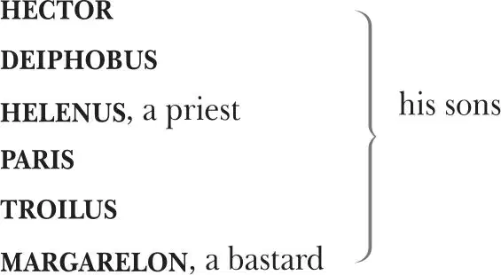

The Tragedy of Troilus and Cressida
PROLOGUE , in armour
Trojans
PRIAM , King of Troy

CASSANDRA , Priam's daughter, a prophetess
ANDROMACHE , wife of Hector
HELEN , wife of Paris, previously wife of Menelaus
PANDARUS , a lord
CRESSIDA , his niece
CALCHAS , her father who has joined the Greeks
ALEXANDER , her servant
BOY , servant to Troilus
Greeks
AGAMEMNON , Commander-in-Chief
MENELAUS , his brother
ULYSSES
NESTOR
ACHILLES
PATROCLUS , his friend
AJAX
DIOMEDES
THERSITES
MYRMIDONS , Achilles' soldiers
Servants, Attendants
The Prologue
[Enter the Prologue, in armour ]
In Troy there lies the scene. From isles of Greece
The princes orgulous 1 , their high 2 blood chafed 3 ,
Have to the port of Athens sent their ships
Fraught 4 with the ministers 5 and instruments 6
Of cruel war: sixty and nine, that wore
Their crownets 7 regal, from th'Athenian bay
Put forth toward Phrygia 8 , and their vow is made
To ransack Troy, within whose strong immures 9
The ravished 10 Helen, Menelaus' queen,
With wanton 11 Paris sleeps, and that's the quarrel.
To Tenedos 12 they come,
And the deep-drawing barks 13 do there disgorge 14
Their warlike fraughtage 15 : now on Dardan 16 plains
The fresh and yet unbruisèd Greeks do pitch
Their brave pavilions 17 : Priam's six-gated city,
Dardan, and Tymbria, Helias, Chetas, Troien,
And Antenorides 18 , with massy staples
And corresponsive and fulfilling bolts 19 ,
Stir up the sons of Troy.
Now expectation, tickling 20 skittish 21 spirits,
On one and other side, Trojan and Greek,
Sets all on hazard 22 . And hither am I come,
A prologue armed 23 , but not in confidence
Of 24 author's pen or actor's voice, but suited
In like conditions as our argument 25 26 ,
To tell you, fair beholders, that our play
Leaps o'er the vaunt and firstlings 27 of those broils 28 ,
Beginning in the middle 29 , starting thence away
To what may be digested 30 in a play.
Like or find fault, do as your pleasures are:
Now good or bad, 'tis but the chance of war.
[Exit ]
Act 1
Scene 1 31 / running scene 1
Enter Pandarus 32 and Troilus
TROILUS Call here my varlet 33 , I'll unarm 34 again:
Why should I war without 35 the walls of Troy
That find such cruel battle here within?
Each Trojan that is master of his heart,
Let him to field 36 : Troilus, alas, hath none 37 .
PANDARUS Will this gear 38 ne'er be mended?
TROILUS The Greeks are strong and skilful to 39 their strength,
Fierce to their skill and to their fierceness valiant,
But I am weaker than a woman's tear,
Tamer 40 than sleep, fonder 41 than ignorance,
Less valiant than the virgin in the night,
And skilless 42 as unpractised 43 infancy.
PANDARUS Well, I have told you enough of this: for my part, I'll not meddle nor make 44 no further. He that will have a cake out of the wheat must needs tarry 45 the grinding 46 .
TROILUS Have I not tarried?
PANDARUS Ay, the grinding, but you must tarry the bolting 47 .
TROILUS Have I not tarried?
PANDARUS Ay, the bolting, but you must tarry the leav'ning 48 .
TROILUS Still have I tarried.
PANDARUS Ay, to the leavening, but here's yet in the word 'hereafter' the kneading, the making of 49 the cake, the heating of the oven 50 and the baking; nay, you must stay 51 the cooling 52 too, or you may chance to burn your lips 53 .
TROILUS Patience herself, what goddess e'er she be,
Doth lesser blench at suff'rance 54 55 than I do.
At Priam's royal table do I sit;
And when fair Cressid comes into my thoughts —
So, traitor 56 , when she comes? When is she thence 57 ?
PANDARUS Well, she looked yesternight fairer than ever I saw her look, or any woman else.
TROILUS I was about to tell thee — when my heart,
As wedgèd 58 with a sigh, would 59 rive in twain 60 ,
Lest Hector or my father should perceive me —
I have, as when the sun doth light a-scorn 61 ,
Buried this sigh in wrinkle of a smile:
But sorrow, that is couched 62 in seeming gladness
Is like that mirth fate turns to sudden sadness.
PANDARUS An 63 her hair were not somewhat darker than Helen's — well, go to 64 —there were 65 no more comparison between the women. But, for my part, she is my kinswoman: I would 66 not, as they term it, praise her, but I would somebody had heard her talk yesterday, as I did. I will not dispraise 67 your sister Cassandra's wit 68 , but—
TROILUS O Pandarus! I tell thee, Pandarus —
When I do tell thee, there my hopes lie drowned,
Reply not in how many fathoms 69 deep
They lie indrenched 70 . I tell thee I am mad
In Cressid's love 71 . Thou answer'st she is fair,
Pour'st in the open ulcer of my heart
Her eyes, her hair, her cheek, her gait, her voice,
Handlest 72 in thy discourse, O, that her hand 73
In whose comparison 74 all whites are ink
Writing their own reproach, to 75 whose soft seizure 76
The cygnet 77 's down is harsh and spirit of sense 78
Hard as the palm of ploughman: this thou tell'st me —
As true thou tell'st me — when I say I love her,
But, saying thus, instead of oil and balm 79 ,
Thou lay'st in every gash 80 that love hath given me
The knife that made it.
PANDARUS I speak no more than truth.
TROILUS Thou dost not speak so much.
PANDARUS Faith, I'll not meddle in't. Let her be as she is: if she be fair, 'tis the better for her: an she be not, she has the mends 81 in her own hands.
TROILUS Good Pandarus, how now, Pandarus?
PANDARUS I have had my labour for my travail 82 : ill-thought on of 83 her and ill-thought on of you: gone between and between, but small thanks for my labour.
TROILUS What, art thou angry, Pandarus? What, with me?
PANDARUS Because she's kin to me, therefore she's not so fair as Helen: an she were not kin to me, she would be as fair on Friday as Helen is on Sunday 84 . But what care I? I care not an she were a blackamoor 85 : 'tis all one to me.
TROILUS Say I she is not fair 86 ?
PANDARUS I do not care whether you do or no. She's a fool to stay behind her father 87 : let her 88 to the Greeks, and so I'll tell her the next time I see her. For my part, I'll meddle nor make no more i'th'matter.
TROILUS Pandarus—
PANDARUS Not I.
TROILUS Sweet Pandarus—
PANDARUS Pray you speak no more to me: I will leave all as I found it, and there an end.
Exit Pandarus
Sound alarum 89
TROILUS Peace, you ungracious 90 clamours, peace, rude 91 sounds!
Fools on both sides! Helen must needs be fair
When with your blood you daily paint 92 her thus.
I cannot fight upon this argument 93 :
It is too starved 94 a subject for my sword.
But Pandarus — O gods, how do you plague me!
I cannot come to Cressid but by Pandar,
And he's as tetchy 95 to be wooed to woo 96
As she is stubborn, chaste, against all suit 97 .
Tell me, Apollo 98 , for thy Daphne's 99 love,
What Cressid is, what Pandar, and what we 100 ?
Her bed is India 101 : there she lies, a pearl.
Between our Ilium 102 and where she resides,
Let it be called the wild and wand'ring flood 103 ,
Ourself the merchant 104 , and this sailing 105 Pandar
Our doubtful hope, our convoy 106 and our bark 107 .
Alarum. Enter Aeneas
AENEAS How now, Prince Troilus? Wherefore not afield 108 ?
TROILUS Because not there 109 : this woman's answer 110 sorts 111 ,
For womanish it is to be from thence.
What news, Aeneas, from the field today?
AENEAS That Paris is returnèd home and hurt.
TROILUS By whom, Aeneas?
AENEAS Troilus, by Menelaus.
TROILUS Let Paris bleed, 'tis but a scar to scorn 112 :
Paris is gored with Menelaus' horn 113 .
Alarum
AENEAS Hark, what good sport 114 is out of town 115 today!
TROILUS Better at home, if 'would I might' were 'may'.
But to the sport abroad 116 : are you bound thither?
AENEAS In all swift haste.
TROILUS Come, go we then together.
Exeunt
Scene 2 / running scene 2
Enter Cressida and her Man [Alexander ]
CRESSIDA Who were those went by?
ALEXANDER Queen Hecuba and Helen.
CRESSIDA And whither go they?
ALEXANDER Up to the eastern tower,
Whose height commands as subject 117 all the vale,
To see the battle. Hector, whose patience
Is as a virtue fixed 118 , today was moved 119 :
He chides Andromache and struck his armourer,
And, like as 120 there were husbandry 121 in war,
Before the sun rose he was harnessed light 122 ,
And to the field goes he, where every flower
Did as a prophet weep what it foresaw
In Hector's wrath.
CRESSIDA What was his cause of anger?
ALEXANDER The noise 123 goes, this: there is among the Greeks
A lord of Trojan blood, nephew 124 to Hector:
They call him Ajax.
CRESSIDA Good 125 , and what of him?
ALEXANDER They say he is a very man per se 126 , and stands alone 127 .
CRESSIDA So do all men, unless they are drunk, sick, or have no legs 128 .
ALEXANDER This man, lady, hath robbed many beasts of their particular additions 129 : he is as valiant as the lion, churlish 130 as the bear, slow 131 as the elephant: a man into whom nature hath so crowded humours 132 that his valour is crushed into folly, his folly sauced with discretion. There is no man hath a virtue that he hath not a glimpse 133 of, nor any man an attaint 134 but he carries some stain of it: he is melancholy without cause, and merry against the hair 135 : he hath the joints 136 of everything, but everything so out of joint that he is a gouty 137 Briareus 138 , many hands and no use, or purblinded 139 Argus 140 , all eyes and no sight.
CRESSIDA But how should this man, that makes me smile make Hector angry?
ALEXANDER They say he yesterday coped 141 Hector in the battle and struck him down, the disdain 142 and shame whereof 143 hath ever since kept Hector fasting and waking 144 .
Enter Pandarus
CRESSIDA Who comes here?
ALEXANDER Madam, your uncle Pandarus.
CRESSIDA Hector's a gallant man.
ALEXANDER As may be in the world, lady.
PANDARUS What's that? What's that?
CRESSIDA Good morrow, uncle Pandarus.
PANDARUS Good morrow, cousin Cressid. What do you talk of?— Good morrow,
Alexander.— How do you, cousin? When were you at Ilium?
CRESSIDA This morning, uncle.
PANDARUS What were you talking of when I came? Was Hector armed and gone ere 145 ye came to Ilium? Helen was not up, was she?
CRESSIDA Hector was gone, but Helen was not up.
PANDARUS E'en so; Hector was stirring early.
CRESSIDA That were we talking of, and of his anger.
PANDARUS Was he angry?
CRESSIDA So he says here.
PANDARUS True, he was so; I know the cause too: he'll lay about him 146 today, I can tell them that, and there's Troilus will not come far behind him: let them take heed of Troilus, I can tell them that too.
CRESSIDA What, is he angry too?
PANDARUS Who, Troilus? Troilus is the better man of the two.
CRESSIDA O Jupiter 147 , there's no comparison.
PANDARUS What, not between Troilus and Hector? Do you know a man 148 if you see him?
CRESSIDA Ay, if I ever saw him before and knew him.
PANDARUS Well, I say Troilus is Troilus.
CRESSIDA Then you say as I say, for I am sure he is not Hector.
PANDARUS No, nor Hector is not Troilus in some degrees 149 .
CRESSIDA 'Tis just 150 to each of them: he is himself.
PANDARUS Himself? Alas, poor Troilus, I would he were.
CRESSIDA So he is.
PANDARUS Condition, I had gone barefoot to India 151 .
CRESSIDA He is not Hector.
PANDARUS Himself? No, he's not himself: would a 152 were himself! Well, the gods are above, time must friend or end 153 . Well, Troilus, well. I would my heart were in her body. No, Hector is not a better man than Troilus.
CRESSIDA Excuse me 154 .
PANDARUS He is elder.
CRESSIDA Pardon me, pardon me.
PANDARUS Th'other's not come to't 155 ; you shall tell me another tale 156 , when th'other's come to't. Hector shall not have his wit 157 this year.
CRESSIDA He shall not need it if he have his own.
PANDARUS Nor his qualities.
CRESSIDA No matter.
PANDARUS Nor his beauty.
CRESSIDA 'Twould not become 158 him: his own's better.
PANDARUS You have no judgement, niece; Helen herself swore th'other day that Troilus for a brown favour 159 — for so 'tis, I must confess — not brown neither—
CRESSIDA No, but brown 160 .
PANDARUS 'Faith, to say truth, brown and not brown.
CRESSIDA To say the truth, true and not true.
PANDARUS She praised his complexion above Paris.
CRESSIDA Why, Paris hath colour enough.
PANDARUS So he has.
CRESSIDA Then Troilus should 161 have too much: if she praised him above, his complexion is higher than his 162 : he having colour enough, and the other higher, is too flaming 163 a praise for a good complexion. I had as lief 164 Helen's golden tongue had commended Troilus for a copper 165 nose.
PANDARUS I swear to you, I think Helen loves him better than Paris.
CRESSIDA Then she's a merry Greek 166 indeed.
PANDARUS Nay, I am sure she does. She came to him th'other day into the compassed 167 window — and, you know, he has not past three or four hairs on his chin—
CRESSIDA Indeed, a tapster 168 's arithmetic 169 may soon bring his particulars 170 therein to a total.
PANDARUS Why, he is very young, and yet will he within three pound lift as much as his brother Hector.
CRESSIDA Is he so young a man and so old 171 a lifter 172 ?
PANDARUS But to prove to you that Helen loves him, she came and puts me her white hand to his cloven 173 chin—
CRESSIDA Juno 174 have mercy! How came it cloven?
PANDARUS Why, you know 'tis dimpled. I think his smiling becomes him better than any man in all Phrygia.
CRESSIDA O, he smiles valiantly.
PANDARUS Does he not?
CRESSIDA O yes, an 'twere a cloud in autumn 175 .
PANDARUS Why, go to, then. But to prove to you that Helen loves Troilus—
CRESSIDA Troilus will stand to the proof 176 , if you'll prove it so.
PANDARUS Troilus? Why, he esteems her no more than I esteem an addle 177 egg.
CRESSIDA If you love an addle egg as well as you love an idle head, you would eat chickens i'th'shell 178 .
PANDARUS I cannot choose but laugh to think how she tickled his chin. Indeed, she has a marvellous 179 white hand, I must needs confess 180 —
CRESSIDA Without the rack 181 .
PANDARUS And she takes upon her to spy a white hair on his chin.
CRESSIDA Alas, poor chin. Many a wart is richer 182 .
PANDARUS But there was such laughing! Queen Hecuba laughed that 183 her eyes ran o'er 184 .
CRESSIDA With millstones 185 .
PANDARUS And Cassandra laughed.
CRESSIDA But there was more temperate fire under the pot 186 of her eyes: did her eyes run o'er too?
PANDARUS And Hector laughed.
CRESSIDA At what was all this laughing?
PANDARUS Marry 187 , at the white hair that Helen spied on Troilus' chin.
CRESSIDA An't had been a green 188 hair, I should have laughed too.
PANDARUS They laughed not so much at the hair as at his pretty 189 answer.
CRESSIDA What was his answer?
PANDARUS Quoth she, 'Here's but two and fifty hairs 190 on your chin, and one of them is white.'
CRESSIDA This is her question.
PANDARUS That's true, make no question of that. 'Two and fifty hairs,' quoth he, 'and
one white: that white hair is my father, and all the rest are his sons 191 .' 'Jupiter!' quoth she, 'Which of these hairs is Paris, my husband?' 'The forked 192 one,' quoth
he, 'pluck't out, and give it him.' But there was such laughing, and Helen so blushed, and Paris so chafed 193 , and all the rest so laughed, that it passed 194 .
CRESSIDA So let it now 195 , for it has been a great while going by 196 .
PANDARUS Well, cousin. I told you a thing yesterday: think on't.
CRESSIDA So I do.
PANDARUS I'll be sworn 'tis true, he will weep you, an 'twere a man born in April 197 .
Sound a retreat
CRESSIDA And I'll spring 198 up in his tears, an 'twere a nettle against May 199 .
PANDARUS Hark, they are coming from the field: shall we stand up here and see them as they pass toward Ilium? Good niece, do, sweet niece Cressida.
CRESSIDA At your pleasure.
PANDARUS Here, here, here's an excellent place, here we may see most bravely 200 . I'll tell you them all by their names as they pass by, but mark 201 Troilus above the rest.
Enter Aeneas [and passes over the stage ]
CRESSIDA Speak not so loud.
PANDARUS That's Aeneas. Is not that a brave 202 man? He's one of the flowers of Troy, I can tell you. But mark Troilus: you shall see anon 203 .
CRESSIDA Who's that?
Enter Antenor [and passes over the stage ]
PANDARUS That's Antenor. He has a shrewd 204 wit, I can tell you, and he's a man good enough: he's one o'th'soundest judgement 205 in Troy whosoever 206 , and a proper man of person 207 . When comes Troilus? I'll show you Troilus anon: if he see me, you shall see him nod at me.
CRESSIDA Will he give you the nod 208 ?
PANDARUS You shall see.
CRESSIDA If he do, the rich shall have more 209 .
Enter Hector [and passes over the stage ]
PANDARUS That's Hector, that, that, look you, that there's a fellow! Go thy way 210 , Hector! There's a brave man, niece. O brave Hector! Look how he looks! There's a countenance 211 . Is't not a brave man?
CRESSIDA O brave man!
PANDARUS Is a 212 not? It does a man's heart good. Look you what hacks 213 are on his helmet. Look you yonder, do you see? Look you there? There's no jesting 214 , there's laying on 215 , take't off who will 216 , as they say. There be hacks!
CRESSIDA Be those with swords 217 ?
Enter Paris [and passes over the stage ]
PANDARUS Swords, anything, he cares not: an the devil come to him, it's all one. By God's lid 218 , it does one's heart good. Yonder comes Paris, yonder comes Paris. Look ye yonder, niece. Is't not a gallant man too, is't not? Why, this is brave now. Who said he came hurt home today? He's not hurt. Why, this will do Helen's heart good now, ha? Would I could see Troilus now. You shall see Troilus anon.
CRESSIDA Who's that?
Enter Helenus [and passes over the stage ]
PANDARUS That's Helenus. I marvel 219 where Troilus is. That's Helenus, I think he 220 went not forth 221 today: that's Helenus.
CRESSIDA Can Helenus fight, uncle?
PANDARUS Helenus? No. Yes, he'll fight indifferent 222 well. I marvel where Troilus is. Hark, do you not hear the people cry 'Troilus'? Helenus is a priest.
CRESSIDA What sneaking 223 fellow comes yonder?
Enter Troilus [and passes over the stage ]
PANDARUS Where? Yonder? That's Deiphobus. 'Tis Troilus! There's a man, niece!— Hem 224 ! Brave Troilus, the prince of chivalry!
CRESSIDA Peace, for shame, peace!
PANDARUS Mark him, note him. O brave Troilus! Look well upon him, niece. Look you how his sword is bloodied, and his helm 225 more hacked than Hector's, and how he looks, and how he goes 226 . O admirable youth! He ne'er saw three and twenty 227 . Go thy way, Troilus, go thy way! Had I a sister were a grace 228 , or a daughter a goddess, he should take his choice. O admirable man! Paris? Paris is dirt to 229 him, and I warrant 230 Helen, to change 231 , would give money to boot 232 .
Enter Common Soldiers [and pass over the stage ]
CRESSIDA Here come more.
PANDARUS Asses, fools, dolts. Chaff and bran 233 , chaff and bran; porridge after meat 234 . I could live and die i'th'eyes of Troilus. Ne'er look, ne'er look. The eagles are gone: crows and daws 235 , crows and daws! I had rather be such a man as Troilus than Agamemnon and all Greece.
CRESSIDA There is among the Greeks Achilles, a better man than Troilus.
PANDARUS Achilles? A drayman 236 , a porter, a very camel 237 .
CRESSIDA Well, well.
PANDARUS 'Well, well'? Why, have you any discretion 238 ? Have you any eyes? Do you know what a man is? Is not birth 239 , beauty, good shape, discourse 240 , manhood, learning, gentleness 241 , virtue, youth, liberality 242 , and so forth, the spice and salt that seasons a man?
CRESSIDA Ay, a minced 243 man, and then to be baked with no date in the pie 244 , for then the man's date's out 245 .
PANDARUS You are such another woman 246 ! One knows not at what ward you lie 247 .
CRESSIDA Upon my back, to defend my belly 248 ; upon my wit 249 , to defend my wiles 250 ; upon my secrecy 251 , to defend mine honesty 252 ; my mask 253 , to defend my beauty, and you, to defend all these: and at all these wards 254 I lie at, at a thousand watches 255 .
PANDARUS Say one of your watches 256 .
CRESSIDA Nay, I'll watch 257 you for that, and that's one of the chiefest of them 258 too: if I cannot ward 259 what I would not have hit 260 , I can watch you for telling 261 how I took the blow, unless it swell 262 past hiding, and then it's past watching 263 .
Enter [Troilus' ] Boy 264
PANDARUS You are such another 265 !
BOY Sir, my lord would instantly speak with you.
PANDARUS Where?
BOY At your own house.
PANDARUS Good boy, tell him I come.
[Exit Boy ]
I doubt 266 he be hurt. Fare ye well, good niece.
CRESSIDA Adieu, uncle.
PANDARUS I'll be with you, niece, by and by 267 .
CRESSIDA To bring 268 , uncle?
PANDARUS Ay, a token 269 from Troilus.
CRESSIDA By the same token 270 , you are a bawd 271 .
Exit Pandarus
Words, vows, gifts, tears, and love's full sacrifice,
He offers in another's enterprise 272 ,
But more in Troilus thousand-fold I see
Than in the glass 273 of Pandar's praise may be;
Yet hold I off. Women are angels, wooing 274 :
Things won are done 275 , joy's soul lies in the doing.
That she 276 beloved knows nought that knows not this:
Men prize the thing ungained more than it is 277 :
That she was never yet that ever knew
Love got so sweet as when desire did sue 278 .
Therefore this maxim out of 279 love I teach:
'Achievement is command; ungained, beseech 280 .'
That 281 though my heart's contents firm love doth bear 282 ,
Nothing of that shall from mine eyes appear.
Exit [with Alexander ]
Scene 3 283 / running scene 3
Sennet 284 . Enter Agamemnon, Nestor, Ulysses, Diomedes, Menelaus, with others
AGAMEMNON Princes,
What grief 285 hath set the jaundice 286 on your cheeks?
The ample proposition 287 that hope makes
In all designs begun on earth below 288
Fails in the promised largeness 289 : checks 290 and disasters
Grow in the veins 291 of actions highest reared 292 ,
As knots, by the conflux of meeting sap 293 ,
Infect the sound pine 294 and diverts his grain 295
Tortive and errant 296 from his course of growth.
Nor, princes, is it matter new to us
That we come short of our suppose 297 so far
That after seven years' siege yet Troy walls stand,
Sith every action that hath gone before,
Whereof we have record, trial did draw
Bias and thwart 298 , not answering the aim
And that unbodied figure of the thought
That gave't surmisèd shape 299 . Why then, you princes,
Do you with cheeks abashed behold our works 300
And think them shame, which are indeed nought else
But the protractive 301 trials of great Jove 302
To find persistive 303 constancy in men,
The fineness of which metal 304 is not found
In fortune's love 305 ? For then the bold and coward,
The wise and fool, the artist 306 and unread,
The hard and soft seem all affined 307 and kin.
But in the wind and tempest of her 308 frown,
Distinction 309 with a loud and powerful fan,
Puffing at all, winnows 310 the light away;
And what hath mass or matter 311 by itself
Lies rich in virtue 312 and unminglèd.
NESTOR With due observance of 313 thy godly seat 314 ,
Great Agamemnon, Nestor shall apply 315
Thy latest words. In the reproof 316 of chance
Lies the true proof 317 of men: the sea being smooth,
How many shallow bauble 318 boats dare sail
Upon her patient breast, making their way
With those of nobler bulk!
But let the ruffian Boreas 319 once enrage
The gentle Thetis 320 , and anon behold
The strong-ribbed bark 321 through liquid mountains 322 cut,
Bounding between the two moist elements 323 ,
Like Perseus' horse 324 : where's then the saucy 325 boat
Whose weak untimbered 326 sides but even now
Co-rivalled greatness 327 ? Either to harbour fled,
Or made a toast 328 for Neptune 329 . Even so 330
Doth valour's show 331 and valour's worth divide
In storms of fortune; for in her 332 ray and brightness
The herd hath more annoyance by the breeze 333
Than by the tiger, but when the splitting wind
Makes flexible the knees of knotted oaks,
And flies fled under shade 334 , why, then the thing of courage,
As roused with rage with rage doth sympathize 335 ,
And with an accent tuned in selfsame key
Retires 336 to chiding fortune.
ULYSSES Agamemnon,
Thou great commander, nerve 337 and bone of Greece,
Heart of our numbers 338 , soul and only 339 spirit 340 ,
In whom the tempers 341 and the minds of all
Should be shut up 342 , hear what Ulysses speaks:
Besides the applause and approbation
The which 343 — most mighty for thy place and sway 344 ,—
To Agamemnon
And thou most reverend 345 for thy stretched-out 346 life,—
To Nestor
I give to both your speeches, which were such
As Agamemnon and 347 the hand of Greece
Should hold up high in brass 348 , and such again
As venerable Nestor, hatched 349 in silver 350 ,
Should with a bond of air 351 , strong as the axle-tree
In which the heavens ride 352 , knit 353 all the Greeks' ears
To his experienced tongue: yet let it please both,
Thou great, and wise 354 , to hear Ulysses speak.
AGAMEMNON Speak, prince of Ithaca 355 , and be't of less expect 356
That matter needless, of importless burden 357 ,
Divide thy lips than we are confident,
When rank 358 Thersites opes 359 his mastic 360 jaws,
We shall hear music, wit and oracle.
ULYSSES Troy, yet upon his basis 361 , had 362 been down,
And the great Hector's sword had lacked a master,
But for these instances 363 .
The specialty of rule 364 hath been neglected;
And look how 365 many Grecian tents do stand
Hollow 366 upon this plain, so many hollow factions 367 .
When that the general 368 is not like the hive 369
To whom the foragers shall all repair 370 ,
What honey is expected? Degree 371 being vizarded 372 ,
Th'unworthiest shows as fairly 373 in the mask.
The heavens themselves, the planets and this centre 374
Observe degree, priority and place,
Insisture 375 , course, proportion, season, form,
Office 376 and custom, in all line of order:
And therefore is the glorious planet Sol 377
In noble eminence enthroned and sphered 378
Amidst the other 379 , whose med'cinable eye
Corrects the ill 380 aspects of planets evil,
And posts 381 , like the commandment of a king,
Sans check 382 , to good and bad. But when the planets
In evil mixture 383 to disorder wander 384 ,
What plagues and what portents, what mutiny,
What raging of the sea, shaking of earth,
Commotion in the winds, frights, changes, horrors,
Divert and crack, rend and deracinate 385
The unity and married 386 calm of states
Quite 387 from their fixure 388 ? O, when degree 389 is shaked,
Which is the ladder to all high designs 390 ,
The enterprise is sick! How could communities,
Degrees in schools 391 and brotherhoods 392 in cities,
Peaceful commerce from dividable shores 393 ,
The primogenitive 394 and due of birth,
Prerogative of age, crowns, sceptres, laurels,
But 395 by degree, stand in authentic place 396 ?
Take but degree away, untune that string,
And, hark, what discord follows. Each thing meets
In mere oppugnancy 397 . The bounded 398 waters
Should 399 lift their bosoms higher than the shores
And make a sop of all this solid globe 400 :
Strength should be lord of imbecility 401 ,
And the rude 402 son should strike his father dead:
Force should be right, or rather, right and wrong,
Between whose endless jar 403 justice resides,
Should lose their names 404 , and so should justice too.
Then everything includes 405 itself in power,
Power into will 406 , will into appetite 407 ,
And appetite, an universal wolf,
So doubly seconded 408 with will and power,
Must make perforce an universal prey 409 ,
And last eat up himself. Great Agamemnon,
This chaos, when degree is suffocate 410 ,
Follows the choking 411 .
And this neglection of degree is it
That by a pace 412 goes backward, in a purpose
It hath to climb 413 . The general's disdained
By him one step below, he by the next,
That next by him beneath, so every step
Exampled 414 by the first pace that is sick
Of his superior 415 , grows to an envious fever
Of pale and bloodless emulation 416 :
And 'tis this fever that keeps Troy on foot 417 ,
Not her own sinews. To end a tale of length,
Troy in our weakness lives, not in her strength.
NESTOR Most wisely hath Ulysses here discovered 418
The fever whereof all our power 419 is sick.
AGAMEMNON The nature of the sickness found, Ulysses, What is the remedy?
ULYSSES The great Achilles, whom opinion 420 crowns
The sinew and the forehand 421 of our host 422 ,
Having his ear full of his airy 423 fame,
Grows dainty of 424 his worth, and in his tent
Lies mocking our designs: with him Patroclus
Upon a lazy bed 425 the livelong day
Breaks 426 scurril jests,
And with ridiculous 427 and awkward 428 action —
Which, slanderer, he imitation calls —
He pageants 429 us. Sometime, great Agamemnon,
Thy topless deputation 430 he puts on 431 ,
And, like a strutting player, whose conceit 432
Lies in his hamstring 433 , and doth think it rich
To hear the wooden 434 dialogue and sound
'Twixt his stretched footing and the scaffoldage 435 ,
Such to-be-pitied and o'er-wrested seeming 436
He acts thy greatness in: and when he speaks,
'Tis like a chime a-mending 437 , with terms unsquared 438 ,
Which from the tongue of roaring Typhon 439 dropped
Would seems hyperboles. At this fusty 440 stuff
The large 441 Achilles, on his pressed 442 bed lolling,
From his deep 443 chest laughs out a loud applause,
Cries 'Excellent! 'Tis Agamemnon just 444 .
Now play me 445 Nestor: hum 446 and stroke thy beard,
As he being dressed to 447 some oration.'
That's done, as near as the extremest ends
Of parallels 448 , as like as Vulcan and his wife 449 ,
Yet god 450 Achilles still cries, 'Excellent!
'Tis Nestor right. Now play him me 451 , Patroclus,
Arming to answer in 452 a night alarm.'
And then, forsooth 453 , the faint defects of age
Must be the scene of mirth: to cough and spit,
And, with a palsy-fumbling 454 on his gorget,
Shake in and out the rivet 455 : and at thissport 456
Sir Valour 457 dies 458 ; cries 'O, enough, Patroclus,
Or give me ribs of steel! I shall split all
In pleasure of my spleen 459 .' And in this fashion,
All our abilities, gifts, natures, shapes,
Severals and generals of grace exact 460 ,
Achievements, plots, orders, preventions 461 ,
Excitements 462 to the field, or speech for truce,
Success or loss, what is or is not, serves
As stuff for these two to make paradoxes 463 .
NESTOR And in the imitation of these twain 464 —
Who, as Ulysses says, opinion crowns
With an imperial voice 465 — many are infect 466 .
Ajax is grown self-willed, and bears his head
In such a rein 467 , in full as proud a place 468
As broad 469 Achilles, and keeps his tent like him;
Makes factious 470 feasts, rails on 471 our state of war,
Bold as an oracle, and sets Thersites,
A slave 472 whose gall 473 coins slanders like a mint 474 ,
To match us in comparisons with dirt,
To weaken and discredit our exposure 475 ,
How rank soever rounded in with danger 476 .
ULYSSES They tax our policy 477 , and call it cowardice,
Count wisdom as no member of the war,
Forestall prescience 478 , and esteem no act
But that of hand 479 : the still and mental parts,
That do contrive 480 how many hands shall strike
When fitness 481 calls them on, and know by measure
Of their observant toil the enemies' weight 482 —
Why, this hath not a finger's dignity 483 .
They call this bed-work 484 , mapp'ry 485 , closet-war 486 ,
So that the ram 487 that batters down the wall,
For 488 the great swing and rudeness of his poise 489 ,
They place before his hand that made the engine 490 ,
Or those that with the fineness of their souls 491
By reason guide his execution 492 .
NESTOR Let this be granted, and Achilles' horse
Makes many Thetis' sons 493 .
Tucket 494
AGAMEMNON What trumpet? Look, Menelaus.
MENELAUS From Troy.
Enter Aeneas
AGAMEMNON What would you 'fore 495 our tent?
AENEAS Is this great Agamemnon's tent, I pray you?
AGAMEMNON Even this.
AENEAS May one that is a herald and a prince
Do a fair 496 message to his kingly ears?
AGAMEMNON With surety 497 stronger than Achilles' arm
'Fore all the Greekish heads 498 , which with one voice
Call Agamemnon head and general.
AENEAS Fair leave 499 and large 500 security. How may
A stranger to those most imperial looks
Know them from eyes of other mortals?
AGAMEMNON How?
AENEAS Ay,
I ask that I might waken reverence 501 ,
And on the cheek be ready with a blush
Modest as morning when she coldly 502 eyes
The youthful Phoebus 503 .
Which is that god in office, guiding men?
Which is the high and mighty Agamemnon?
AGAMEMNON This Trojan scorns us, or the men of Troy Are ceremonious courtiers.
AENEAS Courtiers as free 504 , as debonair, unarmed,
As bending 505 angels: that's their fame 506 in peace.
But when they would seem soldiers, they have galls 507 ,
Good arms, strong joints, true swords, and,
Jove's accord 508 ,
Nothing so full of heart 509 . But peace, Aeneas,
Peace, Trojan, lay thy finger on thy lips.
The worthiness of praise distains his worth 510 ,
If that the praised himself bring the praise forth 511 .
But what the repining 512 enemy commends 513 ,
That breath fame blows 514 , that praise, sole 515 pure, transcends.
AGAMEMNON Sir, you of Troy, call you yourself Aeneas?
AENEAS Ay, Greek, that is my name.
AGAMEMNON What's your affair I pray you?
AENEAS Sir, pardon, 'tis for Agamemnon's ears.
AGAMEMNON He hears nought privately that comes from Troy.
AENEAS Nor I from Troy come not to whisper him:
I bring a trumpet 516 to awake his ear,
To set his sense on the attentive bent 517 ,
And then to speak.
AGAMEMNON Speak frankly 518 as the wind:
It is not Agamemnon's sleeping hour,
That thou shalt know. Trojan, he is awake,
He tells thee so himself.
AENEAS Trumpet, blow loud,
Send thy brass voice through all these lazy tents,
And every Greek of mettle 519 , let him know
What Troy means fairly shall be spoke aloud.
The trumpets sound
We have, great Agamemnon, here in Troy
A prince called Hector — Priam is his father —
Who in this dull 520 and long-continued truce
Is rusty grown. He bade me take a trumpet,
And to this purpose speak: kings, princes, lords,
If there be one amongst the fair'st 521 of Greece
That holds his honour higher than his ease 522 ,
That seeks his praise more than he fears his peril,
That knows his valour, and knows not his fear,
That loves 523 his mistress more than in confession,
With truant vows to her own lips he loves,
And dare avow her beauty and her worth
In other arms than hers 524 — to him this challenge.
Hector, in view of Trojans and of Greeks,
Shall make it good, or do his best to do it.
He hath a lady, wiser, fairer, truer,
Than ever Greek did compass 525 in his arms,
And will 526 tomorrow with his trumpet call
Midway between your tents and walls of Troy,
To rouse 527 a Grecian that is true in love:
If any come, Hector shall honour him:
If none, he'll say in Troy when he retires 528 ,
The Grecian dames are sunburnt 529 and not worth
The splinter of a lance 530 . Even so much 531 .
AGAMEMNON This shall be told our lovers, Lord Aeneas:
If none of them have soul 532 in such a kind,
We left them all at home. But we are soldiers,
And may that soldier a mere recreant 533 prove,
That means not 534 , hath not, or is not in love!
If then one is, or hath, or means to be,
That one meets Hector: if none else, I'll be he.
NESTOR Tell him of Nestor, one that was a man
When Hector's grandsire 535 sucked 536 . He is old now,
But if there be not in our Grecian mould
One noble man that hath one spark of fire,
To answer for his love, tell him from me
I'll hide my silver beard in a gold beaver 537
And in my vantbrace 538 put this withered brawn 539 ,
And meeting him will tell him that my lady
Was fairer than his grandam 540 and as chaste
As may be in the world. His youth in flood 541 ,
I'll pawn 542 this truth with my three drops of blood 543 .
AENEAS Now heavens forbid such scarcity of youth!
ULYSSES Amen.
AGAMEMNON Fair Lord Aeneas, let me touch your hand:
To our pavilion 544 shall I lead you first.
Achilles shall have word of this intent,
So shall each lord of Greece, from tent to tent.
Yourself shall feast with us before you go
And find the welcome of a noble foe.
Exeunt. Ulysses and Nestor remain
ULYSSES Nestor.
NESTOR What says Ulysses?
ULYSSES I have a young conception 545 in my brain,
Be you my time to bring it to some shape 546 .
NESTOR What is't?
ULYSSES This 'tis:
Blunt wedges rive hard knots 547 : the seeded 548 pride
That hath to this maturity blown up 549
In rank 550 Achilles must or 551 now be cropped
Or, shedding 552 , breed a nursery 553 of like 554 evil,
To overbulk 555 us all.
NESTOR Well, and how?
ULYSSES This challenge that the gallant 556 Hector sends,
However it is spread in general name 557 ,
Relates in purpose only to Achilles.
NESTOR The purpose is perspicuous even as substance
Whose grossness little characters sum up 558 :
And, in the publication, make no strain 559
But that Achilles, were his brain as barren
As banks of Libya 560 — though, Apollo knows,
'Tis dry 561 enough — will, with great speed of judgement,
Ay, with celerity 562 , find Hector's purpose
Pointing on 563 him.
ULYSSES And wake him to the answer 564 , think you?
NESTOR Yes, 'tis most meet 565 ; who may you else oppose 566
That can from Hector bring his honour off 567 ,
If not Achilles? Though't be a sportful 568 combat,
Yet in this trial 569 much opinion 570 dwells,
For here the Trojans taste our dear'st repute 571
With their fin'st 572 palate: and trust to me, Ulysses,
Our imputation 573 shall be oddly poised 574
In this wild 575 action. For the success 576 ,
Although particular 577 , shall give a scantling 578
Of good or bad unto the general 579 ,
And in such indexes 580 , although small pricks 581
To 582 their subsequent volumes 583 , there is seen
The baby figure 584 of the giant mass
Of things to come at large 585 . It is supposed
He that meets Hector issues 586 from our choice;
And choice, being mutual act of all our souls,
Makes merit her election 587 , and doth boil 588 ,
As 'twere from forth us all, a man distilled 589
Out of our virtues; who miscarrying 590 ,
What heart 591 from hence 592 receives the conqu'ring part 593
To steel a strong opinion to themselves 594 ,
Which entertained, limbs 595 are his instruments,
In no less working than are swords and bows
Directive by the limbs.
ULYSSES Give pardon to my speech:
Therefore 'tis meet 596 Achilles meet 597 not Hector.
Let us, like merchants, show our foulest 598 wares,
And think perchance 599 they'll sell: if not,
The lustre of the better yet to show,
Shall show the better. Do not consent
That ever Hector and Achilles meet,
For both our honour and our shame in this
Are dogged with two strange followers 600 .
NESTOR I see them not with my old eyes: what are they?
ULYSSES What glory our Achilles shares 601 from Hector,
Were he not proud, we all should wear with him:
But he already is too insolent 602 ,
And we were better parch in Afric sun 603
Than in the pride and salt 604 scorn of his eyes,
Should he scape 605 Hector fair 606 . If he were foiled,
Why then, we did our main opinion crush 607
In taint 608 of our best man. No, make a lott'ry,
And by device 609 let blockish 610 Ajax draw
The sort 611 to fight with Hector: among ourselves
Give him allowance 612 as the worthier man,
For that will physic 613 the great Myrmidon 614
Who broils 615 in loud applause, and make him fall 616
His crest 617 that prouder than blue Iris 618 bends 619 .
If the dull brainless Ajax come safe off 620 ,
We'll dress him up in voices 621 : if he fail,
Yet go we under our opinion 622 still
That we have better men. But, hit or miss,
Our project's life this shape of sense assumes 623 :
Ajax employed 624 plucks down Achilles' plumes.
NESTOR Now, Ulysses,
I begin to relish 625 thy advice;
And I will give a taste of it forthwith
To Agamemnon. Go we to him straight 626 .
Two curs 627 shall tame each other: pride alone
Must tarre 628 the mastiffs on, as 'twere their bone.
Exeunt
Act 2
Scene 1 / running scene 3 continues
Enter Ajax and Thersites
AJAX Thersites!
THERSITES Agamemnon, how 629 if he had boils, full 630 , all over, generally 631 ?
AJAX Thersites!
THERSITES And those boils did run 632 ? Say so 633 : did not the general run? Were not that a botchy 634 core?
AJAX Dog!
THERSITES Then there would come some matter 635 from him: I see none now.
AJAX Thou bitch-wolf's son, canst thou not hear? Feel, then.
Strikes him
THERSITES The plague of Greece upon thee, thou mongrel 636 beef-witted 637 lord!
AJAX Speak then, you whinid'st 638 leaven 639 , speak. I will beat 640 thee into handsomeness 641 .
THERSITES I shall sooner rail 642 thee into wit 643 and holiness 644 : but I think thy horse will sooner con 645 an oration than thou learn a prayer without book. Thou canst strike, canst thou? A red murrain 646 o'thy jade's tricks 647 !
AJAX Toadstool 648 , learn me 649 the proclamation.
THERSITES Dost thou think I have no sense 650 , thou strik'st me thus?
AJAX The proclamation!
THERSITES Thou art proclaimed a fool, I think.
AJAX Do not, porcupine 651 , do not; my fingers itch 652 .
THERSITES I would thou didst itch from head to foot and I had the scratching of thee: I would make thee the loathsom'st scab 653 in Greece.
AJAX I say, the proclamation!
THERSITES Thou grumblest and railest every hour on 654 Achilles, and thou art as full of envy at his greatness as Cerberus 655 is at Proserpina 656 's beauty, ay, that thou bark'st at him.
AJAX Mistress Thersites!
THERSITES Thou shouldst strike him.
AJAX Cobloaf 657 !
THERSITES He would pun 658 thee into shivers 659 with his fist, as a sailor breaks a biscuit 660 .
AJAX You whoreson cur 661 !
Beats him
THERSITES Do, do.
AJAX Thou stool 662 for a witch!
THERSITES Ay, do, do, thou sodden-witted 663 lord! Thou hast no more brain than I have in mine elbows: an asinico 664 may tutor thee. Thou scurvy-valiant 665 ass, thou art here but to thrash Trojans, and thou art bought and sold 666 among those of any wit, like a barbarian 667 slave. If thou use 668 to beat me, I will begin at thy heel, and tell 669 what thou art by inches, thou thing of no bowels 670 , thou!
AJAX You dog!
THERSITES You scurvy 671 lord!
AJAX You cur!
Beats him
THERSITES Mars his 672 idiot! Do, rudeness 673 , do, camel 674 : do, do.
Enter Achilles and Patroclus
ACHILLES Why, how now, Ajax? Wherefore 675 do you this?
How now, Thersites? What's the matter, man?
THERSITES You see him there, do you?
ACHILLES Ay, what's the matter?
THERSITES Nay, look upon him.
ACHILLES So I do: what's the matter?
THERSITES Nay, but regard him well.
ACHILLES Well 676 , why, I do so.
THERSITES But yet you look not well 677 upon him, for whosomever you take him to be, he is Ajax 678 .
ACHILLES I know that, fool.
THERSITES Ay, but that fool 679 knows not himself.
AJAX Therefore I beat thee 680 .
THERSITES Lo 681 , lo, lo, lo, what modicums 682 of wit he utters! His evasions 683 have ears thus long 684 . I have bobbed 685 his brain more than he has beat my bones: I will buy nine sparrows 686 for a penny, and his pia mater 687 is not worth the ninth part of a sparrow. This lord, Achilles — Ajax, who wears his wit in his belly and his guts in his head — I'll tell you what I say of him.
ACHILLES What?
THERSITES I say, this Ajax—
Ajax attempts to beat him
ACHILLES Nay, good Ajax.
Intervenes
THERSITES Has not so much wit—
ACHILLES Nay, I must hold you.
To Ajax
THERSITES As will stop 688 the eye 689 of Helen's needle, for whom he comes to fight.
ACHILLES Peace, fool!
THERSITES I would have peace and quietness, but the fool will not: he there, that he 690 , look you there.
AJAX O thou damned cur, I shall—
ACHILLES Will you set your wit to 691 a fool's?
THERSITES No, I warrant 692 you, for a fool's will shame it.
PATROCLUS Good words 693 , Thersites.
ACHILLES What's the quarrel?
AJAX I bade the vile owl 694 go learn me the tenor 695 of the proclamation, and he rails upon me.
THERSITES I serve thee not.
AJAX Well, go to, go to.
THERSITES I serve here voluntary.
ACHILLES Your last service 696 was sufferance 697 , 'twas not voluntary: no man is beaten voluntary. Ajax was here the voluntary 698 , and you as under an impress 699 .
THERSITES E'en so 700 . A great deal of your wit, too, lies in your sinews, or else there be liars 701 . Hector shall have a great catch if he knock out either of your brains: he were as good 702 crack a fusty 703 nut with no kernel.
ACHILLES What, with 704 me too, Thersites?
THERSITES There's Ulysses and old Nestor, whose wit was mouldy ere 705 your grandsires 706 had nails on their toes, yoke you like draught-oxen and make you plough up the war 707 .
ACHILLES What? What?
THERSITES Yes, good sooth 708 . To 709 , Achilles! To, Ajax! To—
AJAX I shall cut out your tongue.
THERSITES 'Tis no matter, I shall speak as much as thou afterwards.
PATROCLUS No more words, Thersites, peace 710 !
THERSITES I will hold my peace when Achilles' brach 711 bids me, shall I?
ACHILLES There's 712 for you, Patroclus.
THERSITES I will see you hanged like clodpolls 713 ere I come any more to your tents: I will keep 714 where there is wit stirring and leave the faction of fools.
Exit
PATROCLUS A good riddance.
ACHILLES Marry, this, sir, is proclaimed through all our host 715 :
That Hector, by the fifth hour of the sun 716 ,
Will with a trumpet 'twixt 717 our tents and Troy
Tomorrow morning call some knight to arms
That hath a stomach 718 , and such a one that dare
Maintain— I know not what: 'tis trash. Farewell.
AJAX Farewell? Who shall answer him 719 ?
ACHILLES I know not: 'tis put to lott'ry, otherwise
He knew 720 his man.
AJAX O, meaning you? I will go learn more of it.
Exeunt
Scene 2 721 / running scene 4
Enter Priam, Hector, Troilus, Paris and Helenus
PRIAM After so many hours, lives, speeches spent,
Thus once again says Nestor from the Greeks:
'Deliver 722 Helen, and all damage else —
As 723 honour, loss of time, travail 724 , expense,
Wounds, friends, and what else dear 725 that is consumed
In hot digestion of this cormorant 726 war —
Shall be struck 727 off.' Hector, what say you to't?
HECTOR Though no man lesser fears the Greeks than I,
As far as touches my particular 728 ,
Yet, dread 729 Priam,
There is no lady of more softer bowels 730 ,
More spongy to suck in the sense of fear,
More ready to cry out 'Who knows what follows?'
Than Hector is. The wound of peace is surety 731 ,
Surety secure 732 , but modest doubt 733 is called
The beacon of the wise, the tent 734 that searches
To th'bottom of the worst 735 . Let Helen go:
Since the first sword was drawn about this question 736 ,
Every tithe 737 soul 738 'mongst many thousand dimes 739 ,
Hath been as dear as Helen — I mean, of ours.
If we have lost so many tenths of ours
To guard a thing not ours nor worth to us,
Had it our name 740 , the value of one ten 741 ,
What merit's in that reason 742 which denies
The yielding of her up?
TROILUS Fie 743 , fie, my brother!
Weigh you the worth and honour of a king
So great as our dread father in a scale
Of common ounces 744 ? Will you with counters 745 sum 746
The past proportion of his infinite 747 ,
And buckle in a waist most fathomless 748
With spans 749 and inches so diminutive
As fears and reasons 750 ? Fie, for godly shame!
HELENUS No marvel, though you bite so sharp at reasons,
You are so empty of them. Should not our father
Bear the great sway of his affairs 751 with reasons,
Because your speech hath none that tells him so 752 ?
TROILUS You are for dreams and slumbers, brother priest.
You fur your gloves with reason 753 . Here are your reasons:
You know an enemy intends you harm,
You know a sword employed is perilous,
And reason flies 754 the object 755 of all harm.
Who marvels then, when Helenus beholds
A Grecian and his sword, if he do set
The very wings of reason to his heels
And fly like chidden 756 Mercury 757 from Jove,
Or like a star disorbed 758 ? Nay, if we talk of reason,
Let's shut our gates and sleep: manhood and honour
Should have hard 759 hearts, would they but fat 760 their thoughts
With this crammed 761 reason. Reason and respect
Makes livers 762 pale and lustihood 763 deject.
HECTOR Brother, she is not worth what she doth cost
The holding 764 .
TROILUS What's aught 765 but as 'tis valued 766 ?
HECTOR But value dwells not in particular will 767 :
It holds his 768 estimate and dignity 769
As well 770 wherein 'tis precious of itself 771
As 772 in the prizer 773 . 'Tis mad idolatry
To make the service 774 greater than the god,
And the will dotes 775 that is inclinable
To 776 what infectiously itself affects 777 ,
Without some image of th'affected merit 778 .
TROILUS I 779 take today a wife, and my election 780
Is led on in the conduct 781 of my will 782 ;
My will enkindled by mine eyes and ears,
Two traded 783 pilots 'twixt the dangerous shores
Of will and judgement. How may I avoid 784 ,
Although my will distaste 785 what it elected,
The wife I chose? There can be no evasion 786
To blench 787 from this and to stand firm by 788 honour:
We turn not back the silks upon the merchant
When we have spoiled them; nor the remainder viands 789
We do not throw in unrespective 790 sieve,
Because we now are full. It was thought meet 791
Paris should do some vengeance on the Greeks;
Your breath of full consent bellied 792 his sails,
The seas and winds, old wranglers 793 , took a truce
And did him service; he touched 794 the ports desired,
And for 795 an old aunt 796 whom the Greeks held captive,
He brought a Grecian queen 797 , whose youth and freshness
Wrinkles Apollo's 798 and makes stale the morning.
Why keep we her? The Grecians keep our aunt:
Is she worth keeping? Why, she is a pearl
Whose price hath launched above a thousand ships 799 ,
And turned crowned kings to merchants.
If you'll avouch 800 'twas wisdom Paris went —
As you must needs 801 , for you all cried 'Go, go' —
If you'll confess he brought home noble prize —
As you must needs, for you all clapped your hands
And cried 'Inestimable!' — why do you now
The issue 802 of your proper wisdoms rate,
And do a deed that fortune never did 803 ,
Beggar the estimation 804 which you prized
Richer than sea and land? O, theft most base,
That we have stol'n what we do fear to keep!
But 805 thieves unworthy of a thing so stol'n,
That in their country did them that disgrace,
We fear to warrant in our native place 806 !
Enter Cassandra [at a distance ] with her hair about her ears 807
CASSANDRA Cry, Trojans, cry!
PRIAM What noise? What shriek is this?
TROILUS 'Tis our mad sister, I do know her voice.
CASSANDRA Cry, Trojans!
Coming forward
HECTOR It is Cassandra.
CASSANDRA Cry, Trojans, cry! Lend me ten thousand eyes,
And I will fill them with prophetic tears.
HECTOR Peace, sister, peace!
CASSANDRA Virgins and boys, mid-age 808 and wrinkled old,
Soft 809 infancy, that nothing can but cry,
Add to my clamour! Let us pay betimes 810
A moiety 811 of that mass of moan 812 to come.
Cry, Trojans, cry! Practise 813 your eyes with tears!
Troy must not be, nor goodly Ilium stand:
Our firebrand 814 brother, Paris, burns us all.
Cry, Trojans, cry! A Helen and a woe;
Cry, cry! Troy burns, or else let Helen go.
Exit
HECTOR Now, youthful Troilus, do not these high strains 815
Of divination in our sister work 816
Some touches of remorse 817 ? Or is your blood 818
So madly hot that no discourse of reason,
Nor fear of bad success 819 in a bad cause,
Can qualify the same 820 ?
TROILUS Why, brother Hector,
We may not think 821 the justness of each act
Such and no other than event doth form it 822 ,
Nor once deject 823 the courage of our minds
Because Cassandra's mad: her brainsick raptures 824
Cannot distaste 825 the goodness 826 of a quarrel
Which hath our several 827 honours all engaged
To make it gracious 828 . For my private part 829 ,
I am no more touched 830 than all Priam's sons:
And Jove forbid there should be done amongst us
Such things as might offend the weakest spleen
To fight for and maintain 831 .
PARIS Else 832 might the world convince 833 of levity 834
As well 835 my undertakings as 836 your counsels 837 :
But I attest 838 the gods, your full consent
Gave wings to my propension 839 and cut off
All fears attending on so dire 840 a project.
For what, alas, can these my single arms 841 842 ?
What propugnation 843 is in one man's valour
To stand the push 844 and enmity of those
This quarrel would excite? Yet, I protest,
Were I alone to pass 845 the difficulties
And had as ample power as I have will,
Paris should ne'er retract what he hath done,
Nor faint 846 in the pursuit.
PRIAM Paris, you speak
Like one besotted 847 on your sweet delights:
You have the honey still, but these 848 the gall 849 ,
So 850 to be valiant is no praise 851 at all.
PARIS Sir, I propose 852 not merely to myself
The pleasures such a beauty brings with it,
But I would have the soil 853 of her fair rape 854
Wiped off in honourable keeping her 855 .
What treason were it 856 to the ransacked 857 queen,
Disgrace to your great worths and shame to me,
Now to deliver her possession 858 up
On terms of base compulsion! Can it be
That so degenerate a strain 859 as this
Should once set footing in your generous 860 bosoms?
There's not the meanest spirit 861 on our party 862
Without 863 a heart to dare or sword to draw
When Helen is defended, nor none so noble
Whose life were ill bestowed 864 or death unfamed 865
Where Helen is the subject. Then, I say,
Well may we fight for her whom, we know well,
The world's large spaces cannot parallel.
HECTOR Paris and Troilus, you have both said well,
And on the cause and question now in hand
Have glozed 866 , but superficially, not much
Unlike young men, whom Aristotle 867 thought
Unfit to hear moral philosophy:
The reasons you allege 868 do more conduce
To the hot passion of distempered 869 blood
Than to make up a free determination 870
'Twixt right and wrong, for pleasure and revenge
Have ears more deaf than adders 871 to the voice
Of any true decision. Nature craves
All dues 872 be rendered 873 to their owners: now,
What nearer 874 debt in all humanity
Than wife is to the husband? If this law
Of nature be corrupted through affection 875 ,
And that 876 great minds, of partial 877 indulgence
To their benumbèd 878 wills, resist the same 879 ,
There is a law in each well-ordered nation
To curb those raging appetites that are
Most disobedient and refractory 880 .
If Helen then be wife to Sparta's king,
As it is known she is, these moral laws
Of nature and of nation speak aloud
To have her back returned: thus to persist
In doing wrong extenuates not 881 wrong,
But makes it much more heavy 882 . Hector's opinion
Is this in way of 883 truth, yet ne'ertheless,
My spritely 884 brethren, I propend 885 to you
In resolution to keep Helen still 886 ,
For 'tis a cause that hath no mean dependence 887
Upon our joint 888 and several 889 dignities 890 .
TROILUS Why, there you touched the life of our design 891 :
Were it not glory that we more affected 892
Than the performance of our heaving spleens 893 ,
I would not wish a drop of Trojan blood
Spent more in her defence. But, worthy Hector,
She is a theme 894 of honour and renown,
A spur to valiant and magnanimous 895 deeds,
Whose present courage 896 may beat down our foes,
And fame in time to come canonize 897 us,
For I presume brave Hector would not lose
So rich advantage of a promised glory
As smiles upon the forehead 898 of this action
For 899 the wide world's revenue 900 .
HECTOR I am yours,
You valiant offspring of great Priamus.
I have a roisting 901 challenge sent amongst
The dull and factious nobles of the Greeks
Will 902 strike amazement to their drowsy spirits.
I was advertised 903 their great general 904 slept
Whilst emulation 905 in the army crept:
This, I presume, will wake him.
Exeunt
Scene 3 906 / running scene 5
Enter Thersites, solus 907
THERSITES How now, Thersites? What, lost in the labyrinth of thy fury? Shall the elephant 908 Ajax carry it 909 thus? He beats me, and I rail 910 at him. O, worthy satisfaction 911 ! Would 912 it were otherwise: that I could beat him, whilst he railed at me. 'Sfoot 913 , I'll learn to conjure 914 and raise devils, but I'll see 915 some issue of my spiteful execrations. Then there's Achilles, a rare 916 engineer 917 . If Troy be not taken till these two undermine 918 it, the walls will stand till they fall of themselves 919 . O thou great thunder-darter 920 of Olympus, forget that thou art Jove, the king of gods and, Mercury, lose all the serpentine craft 921 of thy caduceus 922 , if thou take not that little, little, less than little wit from them that they have, which short-armed 923 ignorance itself knows is so abundant scarce, it will not in circumvention 924 deliver 925 a fly from a spider without drawing the massy 926 irons 927 and cutting the web. After 928 this, the vengeance on the whole camp! Or, rather, the bone-ache 929 , for that, methinks, is the curse dependent on 930 those that war for a placket 931 . I have said my prayers and devil Envy say 'Amen'.— What ho? My lord Achilles?
Enter Patroclus [from the tent ]
PATROCLUS Who's there? Thersites? Good Thersites, come in and rail.
Patroclus returns to the tent
THERSITES If I could have remembered a gilt counterfeit 932 , thou wouldst not have slipped 933 out of my contemplation. But it is no matter: thyself upon thyself 934 ! The common curse of mankind, folly and ignorance, be thine in great revenue 935 ! Heaven bless 936 thee from a tutor, and discipline come not near thee! Let thy blood 937 be thy direction 938 till thy death! Then if she that lays thee out 939 says thou art a fair 940 corpse, I'll be sworn and sworn upon't she never shrouded 941 any but lazars 942 . Amen.— Where's Achilles?
Patroclus re-emerges from the tent
PATROCLUS What, art thou devout? Wast thou in a prayer?
THERSITES Ay, the heavens hear me!
Enter Achilles [from the tent ]
ACHILLES Who's there?
PATROCLUS Thersites, my lord.
ACHILLES Where, where? Art thou come? Why, my cheese 943 , my digestion, why hast thou not served thyself in to my table so many meals 944 ? Come, what's Agamemnon?
THERSITES Thy commander, Achilles. Then tell me, Patroclus, what's Achilles?
PATROCLUS Thy lord, Thersites: then tell me, I pray thee, what's thyself?
THERSITES Thy knower 945 , Patroclus: then tell me, Patroclus, what art thou?
PATROCLUS Thou mayst tell that know'st.
ACHILLES O, tell, tell.
THERSITES I'll decline 946 the whole question: Agamemnon commands Achilles, Achilles is my lord, I am Patroclus' knower, and Patroclus is a fool.
PATROCLUS You rascal!
THERSITES Peace, fool, I have not done 947 .
ACHILLES He is a privileged man 948 . Proceed, Thersites.
THERSITES Agamemnon is a fool, Achilles is a fool, Thersites is a fool, and, as aforesaid, Patroclus is a fool.
ACHILLES Derive 949 this: come.
THERSITES Agamemnon is a fool to offer 950 to command Achilles, Achilles is a fool to be commanded of 951 Agamemnon, Thersites is a fool to serve such a fool, and Patroclus is a fool positive 952 .
PATROCLUS Why am I a fool?
Enter Agamemnon, Ulysses, Nestor, Diomedes, Ajax and Calchas [at a distance ]
THERSITES Make that demand to 953 the creator: it suffices 954 me thou art. Look you, who comes here?
ACHILLES Patroclus, I'll speak with nobody. Come in with me, Thersites.
Exit
THERSITES Here is such patchery 955 , such juggling 956 and such knavery! All the argument 957 is a cuckold and a whore 958 , a good quarrel to draw 959 emulations, factions and bleed to death upon. Now, the dry serpigo 960 on the subject 961 , and war and lechery confound 962 all!
[Exit ]
AGAMEMNON Where is Achilles?
PATROCLUS Within his tent, but ill disposed 963 , my lord.
AGAMEMNON Let it be known to him that we are here.
Comes forward
He shent 964 our messengers, and we lay by 965
Our appertainments 966 , visiting of 967 him:
Let him be told of 968 , so 969 perchance he think
We dare not move the question of our place 970 ,
Or know not what we are.
PATROCLUS I shall so say to him.
[Exit ]
ULYSSES We saw him at the opening of his tent:
He is not sick.
AJAX Yes, lion-sick 971 , sick of proud heart: you may call it melancholy if you will favour the man, but, by my head, it is pride. But why, why? Let him show us the cause.— A word, my lord.
Ajax and Agamemnon speak aside
NESTOR What moves Ajax thus to bay 972 at him?
ULYSSES Achilles hath inveigled 973 his fool from him.
NESTOR Who, Thersites?
ULYSSES He.
NESTOR Then will Ajax lack matter 974 , if he have lost his argument 975 .
ULYSSES No, you see, he is his argument that has his argument — Achilles 976 .
NESTOR All the better: their fraction is more our wish than their faction 977 , but it was a strong council that a fool could disunite 978 .
ULYSSES The amity 979 that wisdom knits not, folly may easily untie.
Enter Patroclus
Here comes Patroclus.
NESTOR No Achilles with him?
ULYSSES The elephant hath joints, but none for courtesy 980 : his legs are legs for necessity, not for flight.
PATROCLUS Achilles bids me say, he is much sorry
If anything more than your sport 981 and pleasure
Did move your greatness and this noble state 982
To call upon him; he hopes it is no other 983
But for your health and your digestion' sake,
An after-dinner's breath 984 .
AGAMEMNON Hear you, Patroclus:
We are too well acquainted with these answers,
But his evasion, winged thus swift with scorn,
Cannot outfly our apprehensions 985 .
Much attribute 986 he hath, and much the reason
Why we ascribe it to him, yet all his virtues,
Not virtuously of his own part beheld 987 ,
Do in our eyes begin to lose their gloss,
Yea, and like fair 988 fruit in an unwholesome 989 dish,
Are like 990 to rot untasted. Go and tell him,
We came to speak with him; and you shall not sin 991
If you do say we think him over-proud
And under-honest 992 , in self-assumption greater
Than in the note of judgement 993 , and worthier than himself
Here tends the savage strangeness he puts on 994 ,
Disguise the holy strength of their command 995 ,
And underwrite in an observing kind
His humorous predominance 996 . Yea, watch
His pettish lunes 997 , his ebbs, his flows, as if
The passage 998 and whole carriage 999 of this action 1000
Rode on his tide 1001 . Go tell him this, and add
That if he overhold 1002 his price so much,
We'll none of 1003 him; but let him, like an engine 1004
Not portable, lie under 1005 this report:
'Bring action hither, this 1006 cannot go to war:
A stirring 1007 dwarf we do allowance 1008 give
Before 1009 a sleeping giant.' Tell him so.
PATROCLUS I shall, and bring his answer presently 1010 .
AGAMEMNON In second voice 1011 we'll not be satisfied:
We come to speak with him.— Ulysses, enter you.
Exit Ulysses [following Patroclus ]
AJAX What is he more than another?
AGAMEMNON No more than what he thinks he is.
AJAX Is he so much? Do you not think he thinks himself a better man than I am?
AGAMEMNON No question.
AJAX Will you subscribe 1012 his thought, and say he is?
AGAMEMNON No, noble Ajax: you are as strong, as valiant, as wise, no less noble, much more gentle 1013 , and altogether more tractable.
AJAX Why should a man be proud? How doth pride grow? I know not what it is.
AGAMEMNON Your mind is the clearer 1014 , Ajax, and your virtues the fairer. He that is proud eats up himself: pride is his own glass 1015 , his own trumpet 1016 , his own chronicle 1017 , and whatever praises itself but in the deed 1018 , devours 1019 the deed in the praise.
Enter Ulysses
AJAX I do hate a proud man, as I hate the engendering 1020 of toads.
NESTOR Yet he loves himself: is't not strange?
Aside
ULYSSES Achilles will not to the field 1021 tomorrow.
AGAMEMNON What's his excuse?
ULYSSES He doth rely on none,
But carries on the stream of his dispose 1022
Without observance 1023 or respect 1024 of any,
In will peculiar 1025 and in self-admission 1026 .
AGAMEMNON Why will he not upon our fair 1027 request
Untent his person 1028 and share the air with us?
ULYSSES Things small as nothing, for request's sake only 1029 ,
He makes important: possessed he is with greatness 1030 ,
And speaks not to himself but with a pride
That quarrels at self-breath 1031 : imagined worth
Holds in his blood such swoll'n and hot 1032 discourse
That 'twixt his mental and his active parts
Kingdomed Achilles 1033 in commotion 1034 rages
And batters gainst itself. What should I say?
He is so plaguy 1035 proud that the death-tokens 1036 of it
Cry 'No recovery.'
AGAMEMNON Let Ajax go to him.—
Dear lord, go you and greet him in his tent;
'Tis said he holds 1037 you well, and will be led
At your request a little from himself 1038 .
ULYSSES O Agamemnon, let it not be so!
We'll consecrate 1039 the steps that Ajax makes
When they go from 1040 Achilles. Shall the proud lord
That bastes his arrogance with his own seam 1041
And never suffers 1042 matter of the world
Enter his thoughts, save such as do revolve
And ruminate himself 1043 : shall he be worshipped
Of that we hold an idol more than he 1044 ?
No, this thrice-worthy and right valiant lord
Must not so stale 1045 his palm 1046 , nobly acquired,
Nor by my will assubjugate 1047 his merit,
As amply titled as Achilles is 1048 , by going to Achilles:
That were 1049 to enlard 1050 his fat-already 1051 pride
And add more coals to Cancer when he burns
With entertaining great Hyperion 1052 .
This lord go to him? Jupiter forbid,
And say in thunder 'Achilles go to him.'
NESTOR O, this is well: he rubs the vein of him 1053 .
Aside
DIOMEDES And how his silence drinks up this applause!
Aside
AJAX If I go to him, with my armèd 1054 fist
I'll pash 1055 him o'er the face.
AGAMEMNON O, no, you shall not go.
AJAX An a 1056 be proud 1057 with me, I'll pheeze 1058 his pride.
Let me go to him.
ULYSSES Not for the worth that hangs upon our quarrel 1059 .
AJAX A paltry, insolent fellow!
NESTOR How he describes himself!
Aside
AJAX Can he not be sociable?
ULYSSES The raven chides blackness 1060 .
Aside
AJAX I'll let his humours blood 1061 .
AGAMEMNON He will be the physician that should be the patient.
Aside
AJAX An 1062 all men were o'my mind—
ULYSSES Wit would be out of fashion.
Aside
AJAX A 1063 should not bear it 1064 so, a should eat swords 1065 first: shall pride carry it 1066 ?
NESTOR An 'twould 1067 , you'd carry half 1068 .
Aside
ULYSSES A would have ten shares 1069 .
Aside
AJAX I will knead 1070 him: I'll make him supple.
NESTOR He's not yet through 1071 warm. Force 1072 him with praises: pour in, pour in, his ambition is dry 1073 .
Aside
ULYSSES My lord, you feed too much on this dislike 1074 .
To Agamemnon
NESTOR Our noble general, do not do so.
DIOMEDES You must prepare to fight without Achilles.
ULYSSES Why, 'tis this naming of him 1075 doth him harm.
Here is a man 1076 — but 'tis before his face:
I will be silent.
NESTOR Wherefore should you so?
He is not emulous 1077 , as Achilles is.
ULYSSES Know the whole world 1078 , he is as valiant.
AJAX A whoreson dog, that shall palter 1079 thus with us!
Would he were a Trojan!
NESTOR What a vice were it in Ajax now—
ULYSSES If he were proud—
DIOMEDES Or covetous of praise—
ULYSSES Ay, or surly borne 1080 —
DIOMEDES Or strange 1081 , or self-affected 1082 !
ULYSSES Thank the heavens, lord 1083 , thou art of sweet composure 1084 :
Praise him that got 1085 thee, she that gave thee suck 1086 :
Fame 1087 be thy tutor, and thy parts of nature
Thrice famed beyond, beyond all erudition 1088 :
But he that disciplined 1089 thy arms to fight,
Let Mars divide eternity 1090 in twain 1091 ,
And give him half, and for thy vigour,
Bull-bearing Milo 1092 his addition 1093 yield
To sinewy Ajax. I will not praise thy wisdom,
Which, like a bourn 1094 , a pale 1095 , a shore 1096 , confines 1097
Thy spacious and dilated parts 1098 . Here's Nestor —
Instructed by the antiquary 1099 times —
He must, he is, he cannot but be wise:
Put pardon, father Nestor, were your days
As green 1100 as Ajax' and your brain so tempered 1101 ,
You should not have the eminence of 1102 him,
But be as Ajax.
AJAX Shall I call you father?
ULYSSES Ay, my good son.
DIOMEDES Be ruled 1103 by him, Lord Ajax.
ULYSSES There is no tarrying 1104 here: the hart 1105 Achilles
Keeps 1106 thicket. Please it our general
To call together all his state 1107 of war.
Fresh kings are come to Troy; tomorrow
We must with all our main of power 1108 stand fast.
And here's a lord— come knights from east to west,
And cull their flower 1109 , Ajax shall cope 1110 the best.
AGAMEMNON Go we to council. Let Achilles sleep:
Light boats may sail swift, though greater bulks draw deep 1111 .
Exeunt
Act 3
Scene 1 1112 / running scene 6
Music sounds within. Enter Pandarus and a Servant
PANDARUS Friend, you! Pray you, a word: do not you follow 1113 the young lord Paris?
SERVANT Ay, sir, when he goes before me.
PANDARUS You depend upon 1114 him, I mean?
SERVANT Sir, I do depend upon the lord 1115 .
PANDARUS You depend upon a noble gentleman: I must needs 1116 praise him.
SERVANT The lord be praised!
PANDARUS You know me, do you not?
SERVANT Faith, sir, superficially 1117 .
PANDARUS Friend, know me better 1118 : I am the Lord Pandarus.
SERVANT I hope I shall know your honour better.
PANDARUS I do desire it.
SERVANT You are in the state of grace 1119 ?
PANDARUS Grace? Not so 1120 , friend: honour and lordship are my title. What music is this?
SERVANT I do but partly know, sir: it is music in parts.
PANDARUS Know you the musicians?
SERVANT Wholly, sir.
PANDARUS Who play they to?
SERVANT To the hearers, sir.
PANDARUS At whose pleasure 1121 , friend?
SERVANT At mine, sir, and theirs that love music.
PANDARUS Command, I mean, friend.
SERVANT Who shall I command, sir 1122 ?
PANDARUS Friend, we understand not one another: I am too courtly 1123 and thou art too cunning 1124 . At whose request do these men play?
SERVANT That's to't 1125 indeed, sir. Marry, sir, at the request of Paris, my lord, who's there in person; with him, the mortal Venus 1126 , the heart-blood 1127 of beauty, love's invisible soul—
PANDARUS Who? My cousin Cressida?
SERVANT No, sir, Helen: could you not find out that 1128 by her attributes?
PANDARUS It should seem, fellow, that thou hast not seen the lady Cressida. I come to speak with Paris from the Prince Troilus: I will make a complimental 1129 assault upon him, for my business seethes 1130 .
SERVANT Sodden 1131 business 1132 . There's a stewed 1133 phrase indeed!
Enter Paris and Helen [with Attendants ]
PANDARUS Fair 1134 be to you, my lord, and to all this fair company. Fair desires in all fair measure 1135 fairly 1136 guide them, especially to you, fair 1137 queen. Fair thoughts be your fair pillow.
HELEN Dear lord, you are full of fair words.
PANDARUS You speak your fair pleasure 1138 , sweet queen. Fair prince, here is good broken 1139 music.
PARIS You have broke 1140 it, cousin 1141 , and, by my life, you shall make it whole again: you shall piece it out 1142 with a piece 1143 of your performance. Nell 1144 , he is full of harmony 1145 .
PANDARUS Truly, lady, no.
HELEN O, sir—
PANDARUS Rude 1146 , in sooth, in good sooth, very rude.
PARIS Well said, my lord. Well, you say so in fits 1147 .
PANDARUS I have business to 1148 my lord, dear queen. My lord, will you vouchsafe 1149 me a word?
HELEN Nay, this shall not hedge us out 1150 : we'll hear you sing, certainly.
PANDARUS Well, sweet queen, you are pleasant 1151 with me. But, marry, thus, my lord: my dear lord and most esteemed friend, your brother Troilus—
HELEN My lord Pandarus, honey-sweet lord—
PANDARUS Go to, sweet queen 1152 , go to.— Commends himself most affectionately to you—
HELEN You shall not bob 1153 us out of our melody: if you do, our melancholy 1154 upon your head!
PANDARUS Sweet queen, sweet queen: that's a sweet queen, i'faith.
HELEN And to make a sweet lady sad is a sour 1155 offence.
PANDARUS Nay, that shall not serve your turn 1156 , that shall it not, in truth, la 1157 . Nay, I care not for such words, no, no. And, my lord, he desires 1158 you, that if the king call for him at supper, you will make his excuse.
To Paris
HELEN My lord Pandarus—
PANDARUS What says my sweet queen, my very very sweet queen?
PARIS What exploit's in hand 1159 ? Where sups he tonight?
HELEN Nay, but, my lord—
PANDARUS What says my sweet queen? My cousin will fall out with you 1160 .
HELEN You must not know where he sups.
To Paris
PARIS With my disposer 1161 Cressida?
PANDARUS No, no; no such matter, you are wide 1162 . Come, your disposer is sick.
PARIS Well, I'll make excuse 1163 .
PANDARUS Ay, good my lord. Why should you say Cressida? No, your poor disposer's sick.
PARIS I spy 1164 .
PANDARUS You spy? What do you spy?— Come, give me an instrument.— Now, sweet queen.
He is handed
a musical instrument
HELEN Why, this is kindly done.
PANDARUS My niece is horrible 1165 in love with a thing 1166 you have, sweet queen.
HELEN She shall have it, my lord, if it be not my lord Paris.
PANDARUS He? No, she'll none of him: they two are twain 1167 .
HELEN Falling in after falling out 1168 may make them three 1169 .
PANDARUS Come, come, I'll hear no more of this. I'll sing you a song now.
HELEN Ay, ay, prithee now. By my troth, sweet lord, thou hast a fine forehead 1170 .
PANDARUS Ay, you may 1171 , you may.
HELEN Let thy song be 1172 love: this love will undo 1173 us all. O Cupid, Cupid, Cupid!
PANDARUS Love? Ay, that it shall, i'faith.
PARIS Ay, good now 1174 , 'Love, love, nothing but love'.
PANDARUS In good troth, it begins so.
Love, love, nothing but love, still more!
Sings
Shoots 1177 buck and doe 1178 :
The shaft 1179 confounds,
Not that 1180 it wounds,
But tickles 1181 still 1182 the sore 1183 .
These lovers cry, O ho 1184 , they die 1185 !
Yet that which seems the wound to kill 1186 ,
Doth turn O ho, to ha, ha, he 1187 !
So dying love lives still:
O ho, awhile, but ha, ha, ha!
O ho, groans out 1188 for ha, ha, ha!—
Hey-ho!
HELEN In love 1189 , i'faith, to the very tip of the nose 1190 .
PARIS He eats nothing but doves 1191 , love, and that breeds hot blood 1192 , and hot blood begets 1193 hot thoughts, and hot thoughts beget hot deeds, and hot deeds is love.
PANDARUS Is this the generation of love 1194 ? Hot blood, hot thoughts, and hot deeds? Why, they are vipers 1195 : is love a generation of vipers?— Sweet lord, who's afield 1196 today?
PARIS Hector, Deiphobus, Helenus, Antenor, and all the gallantry 1197 of Troy: I would fain 1198 have armed today, but my Nell would not have it so. How chance my brother Troilus went not?
HELEN He hangs the lip 1199 at something; you know all, Lord Pandarus.
PANDARUS Not I, honey-sweet queen. I long to hear how they sped 1200 today.— You'll remember your brother's excuse?
PARIS To a hair 1201 .
PANDARUS Farewell, sweet queen.
HELEN Commend me to your niece.
PANDARUS I will, sweet queen.
[Exit ]
Sound a retreat
PARIS They're come from field: let us to Priam's hall
To greet the warriors. Sweet Helen, I must woo 1202 you
To help unarm 1203 our Hector: his stubborn buckles,
With these your white enchanting fingers touched,
Shall more obey 1204 than to the edge 1205 of steel
Or force of Greekish sinews. You shall do more
Than all the island kings 1206 : disarm great Hector.
HELEN 'Twill make us proud to be his servant, Paris.
Yea, what he shall receive of us 1207 in duty
Gives us more palm 1208 in beauty than we have 1209 ,
Yea, overshines ourself.
PARIS Sweet, above thought 1210 I love thee.
Exeunt
Scene 2 / running scene 7
Enter Pandarus and Troilus' Man 1211
PANDARUS How now? Where's thy master? At my cousin Cressida's?
MAN No, sir, he stays 1212 for you to conduct 1213 him thither.
Enter Troilus
PANDARUS O, here he comes.—How now, how now?
TROILUS Sirrah 1214 , walk off.
[Exit Troilus' Man ]
PANDARUS Have you seen my cousin 1215 ?
TROILUS No, Pandarus: I stalk 1216 about her door,
Like a strange 1217 soul upon the Stygian banks 1218
Staying for waftage 1219 . O, be thou my Charon 1220 ,
And give me swift transportance to those fields 1221
Where I may wallow in the lily-beds 1222
Proposed 1223 for the deserver. O gentle Pandarus,
From Cupid's shoulder pluck his painted 1224 wings
And fly with me to Cressid!
PANDARUS Walk here i'th'orchard 1225 , I'll bring her straight 1226 .
Exit Pandarus
TROILUS I am giddy; expectation whirls me round.
Th'imaginary relish 1227 is so sweet
That it enchants my sense 1228 : what will it be 1229 ,
When that the wat'ry 1230 palates taste indeed 1231
Love's thrice-repurèd 1232 nectar 1233 ? Death 1234 , I fear me,
Swooning destruction, or some joy too fine 1235 ,
Too subtle-potent 1236 , tuned too sharp 1237 in sweetness,
For the capacity 1238 of my ruder 1239 powers 1240 ;
I fear it much, and I do fear besides,
That I shall lose distinction in my joys 1241 ,
As doth a battle 1242 , when they charge on heaps 1243
The enemy flying 1244 .
Enter Pandarus
PANDARUS She's making her 1245 ready, she'll come straight. You must be witty 1246 now: she does so blush, and fetches her wind so short 1247 , as if she were fraid with 1248 a sprite 1249 . I'll fetch her. It is the prettiest 1250 villain 1251 : she fetches her breath so short as a new-ta'en 1252 sparrow 1253 .
Exit Pandarus
TROILUS Even 1254 such a passion doth embrace my bosom:
My heart beats thicker 1255 than a feverous pulse,
And all my powers do their bestowing 1256 lose,
Like vassalage 1257 at unawares 1258 encount'ring
The eye of majesty.
Enter Pandarus and Cressida [veiled ]
PANDARUS Come, come, what need you blush? Shame's a baby. Here she is now: swear the oaths now to her that you have sworn to me.— What, are you gone again? You must be watched 1259 ere you be made tame, must you? Come your ways 1260 , come your ways, an you draw backward 1261 , we'll put you i'th'fills 1262 .— Why do you not speak to her? Come, draw this curtain 1263 , and let's see your picture 1264 . Alas the day, how loath you are to offend daylight! An 'twere dark, you'd close 1265 sooner. So, so, rub on, and kiss the mistress 1266 . How now, a kiss in fee-farm 1267 1268 ? Build there, carpenter, the air 1269 is sweet. Nay, you shall fight your hearts out 1270 ere I part you. The falcon as the tercel 1271 1272 , for all the ducks i'th'river 1273 . Go to, go to.
TROILUS You have bereft 1274 me of all words, lady.
PANDARUS Words pay no debts 1275 , give her deeds 1276 . But she'll bereave you o'th'deeds too, if she call your activity 1277 in question. What, billing 1278 again? Here's 'In witness whereof the parties interchangeably 1279 .' Come in, come in: I'll go get a fire 1280 .
[Exit ]
CRESSIDA Will you walk in, my lord?
TROILUS O Cressida, how often have I wished me thus!
CRESSIDA Wished, my lord? The gods grant— O my lord!
TROILUS What should they grant? What makes this pretty 1281 abruption 1282 ? What too curious 1283 dreg 1284 espies my sweet lady in the fountain of our love?
CRESSIDA More dregs than water, if my fears have eyes.
TROILUS Fears make devils of cherubims: they never see truly.
CRESSIDA Blind fear, that seeing reason leads 1285 , finds safer footing than blind reason stumbling without fear: to fear the worst oft cures the worse.
TROILUS O, let my lady apprehend 1286 no fear: in all Cupid's pageant 1287 there is presented no monster.
CRESSIDA Nor nothing monstrous 1288 neither?
TROILUS Nothing, but our undertakings 1289 , when we vow to weep seas, live in fire, eat rocks, tame tigers; thinking it harder for our mistress to devise imposition 1290 enough than for us to undergo any difficulty imposed. This is the monstruosity 1291 in love, lady, that the will 1292 is infinite and the execution 1293 confined, that the desire is
boundless and the act 1294 a slave to limit.
CRESSIDA They say all lovers swear more performance than they are able, and yet reserve 1295 an ability that they never perform, vowing more than the perfection of ten 1296 and discharging less than the tenth part of one. They that have the voice of lions and the act of hares, are they not monsters?
TROILUS Are there such 1297 ? Such are not we 1298 : praise us as we are tasted 1299 , allow 1300 us as we prove 1301 , our head 1302 shall go bare till merit crown it 1303 . No perfection in reversion 1304 shall have a praise in present: we will not name desert 1305 before his birth, and, being born, his addition 1306 shall be humble. Few words to fair faith 1307 . Troilus shall be such to Cressid as what envy can say worst shall be a mock for his truth 1308 , and what truth can speak truest not truer than Troilus.
CRESSIDA Will you walk in, my lord?
Enter Pandarus
PANDARUS What, blushing still? Have you not done talking yet?
CRESSIDA Well, uncle, what folly 1309 I commit, I dedicate to you.
PANDARUS I thank you 1310 for that: if my lord get 1311 a boy of you, you'll give him me 1312 . Be true to my lord: if he flinch 1313 , chide me for it.
TROILUS You know now your hostages: your uncle's word and my firm faith.
PANDARUS Nay, I'll give my word for her too: our kindred, though they be long ere they are wooed, they are constant being won. They are burrs 1314 , I can tell you: they'll stick where they are thrown 1315 .
CRESSIDA Boldness 1316 comes to me now, and brings me heart.
Prince Troilus, I have loved you night and day
For many weary months.
TROILUS Why was my Cressid then so hard to win?
CRESSIDA Hard to seem won: but I was won, my lord,
With the first glance that ever — pardon me —
If I confess much, you will play the tyrant 1317 .
I love you now, but not, till now, so much
But I might master it 1318 ; in faith, I lie:
My thoughts were like unbridled 1319 children grown
Too headstrong for their mother. See, we fools!
Why have I blabbed? Who shall be true to us,
When we are so unsecret to ourselves?
But, though I loved you well, I wooed you not,
And yet, good faith, I wished myself a man,
Or that we women had men's privilege 1320
Of speaking first. Sweet, bid me hold my tongue,
For in this rapture I shall surely speak
The thing I shall repent. See, see, your silence,
Cunning 1321 in dumbness, from my weakness draws
My soul of counsel 1322 from me. Stop my mouth.
TROILUS And shall 1323 , albeit sweet music issues thence.
Kisses her
PANDARUS Pretty, i'faith.
CRESSIDA My lord, I do beseech you pardon me:
'Twas not my purpose, thus to beg a kiss.
I am ashamed. O heavens, what have I done?
For this time 1324 will I take my leave, my lord.
TROILUS Your leave, sweet Cressid?
PANDARUS Leave? An you take leave till tomorrow morning—
CRESSIDA Pray you content you 1325 .
TROILUS What offends you, lady?
CRESSIDA Sir, mine own company.
TROILUS You cannot shun yourself.
CRESSIDA Let me go and try:
I have a kind of self resides with you,
But an unkind 1326 self, that itself will leave
To be another's fool 1327 . Where is my wit?
I would be gone: I speak I know not what.
TROILUS Well know they what they speak that speaks so wisely 1328 .
CRESSIDA Perchance 1329 , my lord, I show more craft 1330 than love,
And fell so roundly 1331 to a large 1332 confession
To angle for your thoughts: but you are wise 1333 ,
Or else you love not, for to be wise and love
Exceeds man's might: that 1334 dwells with gods above.
TROILUS O, that I thought it could be in a woman —
As, if it can, I will presume 1335 in you —
To feed for aye 1336 her lamp and flames of love,
To keep her constancy in plight 1337 and youth,
Outliving beauty's outward 1338 , with a mind
That doth renew swifter 1339 than blood decays 1340 !
Or that persuasion could but thus convince me
That my integrity and truth to you
Might be affronted 1341 with the match and weight
Of such a winnowed 1342 purity in love,
How were I 1343 then uplifted! But, alas,
I am as true as truth's simplicity 1344
And simpler than the infancy of truth 1345 .
CRESSIDA In that I'll war with you.
TROILUS O virtuous fight,
When right with right wars who shall be most right!
True swains 1346 in love shall in the world to come
Approve 1347 their truths by Troilus 1348 : when their rhymes,
Full of protest 1349 , of oath and big compare 1350 ,
Want 1351 s similes, truth tired 1352 with iteration 1353 ,
As true as steel, as plantage 1354 to the moon,
As sun to day, as turtle 1355 to her mate,
As iron to adamant 1356 , as earth to th'centre 1357 ,
Yet, after all comparisons 1358 of truth,
As truth's authentic 1359 author to be cited,
'As true as Troilus' shall crown up 1360 the verse,
And sanctify the numbers 1361 .
CRESSIDA Prophet may you be!
If I be false 1362 , or swerve a hair 1363 from truth,
When time is old and hath forgot itself,
When waterdrops have worn the stones of Troy,
And blind oblivion swallowed cities up,
And mighty states characterless 1364 are grated 1365
To dusty nothing, yet let memory,
From false to false, among false maids in love,
Upbraid my falsehood! When they've said 'As false
As air, as water, as wind, as sandy earth,
As fox to lamb, as wolf to heifer's calf,
Pard 1366 to the hind 1367 , or stepdame 1368 to her son',
'Yea', let them say, to stick the heart 1369 of falsehood,
'As false as Cressid.'
PANDARUS Go to, a bargain made: seal it 1370 , seal it, I'll be the witness. Here I hold your hand, here my cousin's. If ever you prove false one to another, since I have taken such pains to bring you together, let all pitiful goers-between be called to the world's end after my name: call them all panders; let all constant men be Troiluses, all false women Cressids, and all brokers-between panders! Say, 'Amen.'
TROILUS Amen.
CRESSIDA Amen.
PANDARUS Amen. Whereupon I will show you a chamber with a bed, which bed, because 1371 it shall not speak of your pretty encounters 1372 , press it to death 1373 . Away! And Cupid grant all tongue-tied maidens 1374 here 1375 Bed, chamber and pander to provide this gear 1376 !
Exeunt
Scene 3 1377 / running scene 8
Enter Ulysses, Diomedes, Nestor, Agamemnon, Menelaus and Calchas. Flourish
CALCHAS Now, princes, for the service I have done you,
Th'advantage 1378 of the time prompts me aloud
To call for recompense. Appear it 1379 to your mind
That through the sight 1380 I bear in things to come,
I have abandoned Troy, left my possession 1381 ,
Incurred a traitor's name, exposed myself,
From 1382 certain and possessed conveniences 1383 ,
To doubtful fortunes, sequest'ring 1384 from me all
That time, acquaintance, custom and condition 1385
Made tame 1386 and most familiar to my nature,
And here, to do you service, am become
As 1387 new into the world, strange 1388 , unacquainted 1389 .
I do beseech you, as in way of taste 1390 ,
To give me now a little benefit
Out of those many registered in promise 1391 ,
Which, you say, live to come 1392 in my behalf.
AGAMEMNON What wouldst thou of us, Trojan? Make demand.
CALCHAS You have a Trojan prisoner, called Antenor,
Yesterday took 1393 : Troy holds him very dear.
Oft have you — often have you thanks therefore 1394 —
Desired my Cressid in right great exchange 1395 ,
Whom Troy hath still denied. But this Antenor,
I know is such a wrest 1396 in their affairs
That their negotiations all must slack 1397 ,
Wanting his manage 1398 , and they will almost
Give us a prince of blood 1399 , a son of Priam,
In change of 1400 him: let him be sent, great princes,
And he shall buy my daughter, and her presence
Shall quite strike off 1401 all service I have done,
In most accepted pain 1402 .
AGAMEMNON Let Diomedes bear him 1403 ,
And bring us Cressid hither: Calchas shall have
What he requests of us. Good Diomed,
Furnish you fairly 1404 for this interchange 1405 .
Withal 1406 bring word if Hector will tomorrow
Be answered in 1407 his challenge: Ajax is ready.
DIOMEDES This shall I undertake, and 'tis a burden
Which I am proud to bear.
Exit [Diomedes with Calchas ]
Enter Achilles and Patroclus in their tent
ULYSSES Achilles stands i'th'entrance of his tent;
Please it 1408 our general to pass strangely 1409 by him,
As if he were forgot, and, princes all,
Lay negligent and loose 1410 regard 1411 upon him;
I will come last. 'Tis like 1412 he'll question me
Why such unplausive 1413 eyes are bent, why turned on him.
If so, I have derision medicinable 1414
To use between your strangeness and his pride,
Which his own will shall have desire to drink;
It may do good: pride hath no other glass 1415
To show itself but pride, for supple knees
Feed arrogance and are the proud man's fees 1416 .
AGAMEMNON We'll execute your purpose 1417 , and put on
A form 1418 of strangeness as we pass along:
So do each lord, and either greet him not
Or else disdainfully, which shall shake 1419 him more
Than if not looked on. I will lead the way.
ACHILLES What, comes the general to speak with me?
You know my mind: I'll fight no more gainst Troy.
AGAMEMNON What says Achilles? Would he aught 1420 with us?
NESTOR Would you, my lord, aught with the general?
ACHILLES No.
NESTOR Nothing, my lord.
AGAMEMNON The better 1421 .
[Exeunt Agamemnon and Nestor ]
ACHILLES Good day, good day.
To Menelaus
MENELAUS How do you? How do you?
[Exit ]
ACHILLES What, does the cuckold scorn me?
AJAX How now, Patroclus?
ACHILLES Good morrow, Ajax.
AJAX Ha?
ACHILLES Good morrow.
AJAX Ay, and good next day too.
Exit
ACHILLES What mean these fellows? Know 1422 they not Achilles?
PATROCLUS They pass by strangely: they were used 1423 to bend
To send their smiles before them to Achilles,
To come as humbly as they used to creep
To holy altars.
ACHILLES What, am I poor 1424 of late?
'Tis certain, greatness, once fall'n out with fortune,
Must fall out with men too: what the declined 1425 is
He shall as soon read in the eyes of others
As feel in his own fall, for men, like butterflies,
Show not their mealy 1426 wings but 1427 to the summer,
And not a man, for being simply man,
Hath any honour, but honoured for those honours
That are without him 1428 , as 1429 place 1430 , riches and favour,
Prizes of accident 1431 as oft as merit,
Which when they 1432 fall, as being slippery standers 1433 ,
The love 1434 that leaned on them as slippery 1435 too,
Doth one pluck down another and together
Die in the fall. But 'tis not so with me;
Fortune and I are friends: I do enjoy
At ample point 1436 all that I did possess,
Save 1437 these men's looks, who do, methinks, find out
Something not worth in me such rich beholding 1438
As they have often given. Here is Ulysses:
I'll interrupt his reading.— How now Ulysses?
ULYSSES Now, great Thetis' son!
ACHILLES What are you reading?
ULYSSES A strange fellow here
Writes me 1439 that man, how dearly ever parted 1440 ,
How much in having, or without or in 1441 ,
Cannot make boast to have that which he hath,
Nor feels not what he owes 1442 , but by reflection 1443 ,
As when his virtues shining upon others
Heat them and they retort 1444 that heat again
To the first giver.
ACHILLES This is not strange, Ulysses.
The beauty that is borne here in the face
The bearer knows not, but 1445 commends itself
Not going from itself, but eye to eye opposed
Salutes each other with each other's form 1446 .
For speculation 1447 turns not to itself
Till it hath travelled 1448 and is mirrored there
Where it may see itself. This is not strange 1449 at all.
ULYSSES I do not strain it at the position 1450 —
It is familiar — but at the author's drift 1451 ,
Who in his circumstance 1452 expressly proves
That no man is the lord of anything —
Though in and of him there is much consisting 1453 —
Till he communicate his parts 1454 to others,
Nor doth he of himself know them for aught 1455
Till he behold them formed in th'applause
Where they are extended 1456 , who 1457 , like an arch 1458 , reverb'rate
The voice 1459 again, or, like a gate of steel
Fronting 1460 the sun, receives and renders 1461 back
His figure 1462 and his heat. I was much wrapt in 1463 this,
And apprehended 1464 here immediately
The unknown 1465 Ajax.
Heavens, what a man is there! A very horse 1466 ,
That has he knows not what 1467 . Nature, what things there are
Most abject in regard and dear in use 1468 !
What things again 1469 most dear in the esteem
And poor in worth! Now shall we see tomorrow —
An act that very chance doth throw upon him —
Ajax renowned! O heavens, what some men do,
While some men leave to do 1470 !
How some men creep in skittish fortune's hall 1471 ,
Whiles others play the idiots 1472 in her eyes!
How one man eats into another's pride 1473 ,
While pride is fasting in his wantonness 1474 !
To see these Grecian lords! Why, even already
They clap the lubber 1475 Ajax on the shoulder,
As if his foot were on brave Hector's breast
And great Troy shrinking 1476 .
ACHILLES I do believe it, for they passed by me
As misers do by beggars, neither gave to me
Good word nor look. What, are my deeds forgot?
ULYSSES Time hath, my lord, a wallet 1477 at his back,
Wherein he puts alms 1478 for oblivion 1479 ,
A great-sized monster of ingratitudes:
Those scraps are good deeds past, which are devoured
As fast as they are made, forgot as soon
As done: perseverance, dear my lord,
Keeps honour bright: to have done 1480 is to hang
Quite out of fashion, like a rusty mail 1481
In monumental mock'ry 1482 . Take the instant 1483 way,
For honour travels in a strait 1484 so narrow
Where one but goes abreast 1485 . Keep then the path 1486 ,
For emulation 1487 hath a thousand sons
That one by one pursue: if you give way,
Or hedge aside 1488 from the direct forthright 1489 ,
Like to an entered 1490 tide they all rush by
And leave you hindmost 1491 ,
Or like a gallant horse fall'n in first rank 1492 ,
Lie there for pavement to the abject rear 1493 ,
O'er-run and trampled on: then what they do in present,
Though less than yours in past, must o'ertop yours,
For time is like a fashionable host
That slightly 1494 shakes his parting guest by th'hand,
And with his arms outstretched as he would fly 1495 ,
Grasps in 1496 the comer. The welcome ever 1497 smiles,
And farewell goes out sighing. O, let not virtue seek
Remuneration 1498 for the thing it was.
For beauty, wit,
High birth, vigour of bone 1499 , desert in service 1500 ,
Love, friendship, charity, are subjects all
To envious and calumniating 1501 time.
One touch of nature 1502 makes the whole world kin 1503 ,
That all with one consent 1504 praise new-born gawds 1505 ,
Though they are made and moulded of things past,
And give to dust that is a little gilt 1506
More laud 1507 than gilt o'er-dusted 1508 .
The present eye praises the present object 1509 .
Then marvel not, thou great and complete 1510 man,
That all the Greeks begin to worship Ajax;
Since things in motion begin to catch the eye
Than what not stirs. The cry went out on thee 1511 ,
And still it might, and yet it may again,
If thou wouldst not entomb thyself alive
And case 1512 thy reputation in thy tent;
Whose glorious deeds, but in these fields of late 1513 ,
Made emulous missions 1514 'mongst the gods themselves
And drave 1515 great Mars to faction 1516 .
ACHILLES Of this my privacy
I have strong reasons.
ULYSSES But gainst your privacy
The reasons are more potent and heroical:
'Tis known, Achilles, that you are in love
With one of Priam's daughters 1517 .
ACHILLES Ha? Known?
ULYSSES Is that a wonder?
The providence 1518 that's in a watchful state
Knows almost every grain of Pluto 1519 's gold,
Finds bottom in th'uncomprehensive deeps 1520 ,
Keeps place 1521 with thought, and almost, like the gods,
Do thoughts unveil in their dumb cradles 1522 .
There is a mystery 1523 — with whom relation
Durst never meddle 1524 — in the soul of state 1525 ;
Which hath an operation 1526 more divine
Than breath or pen can give expressure 1527 to:
All the commerce 1528 that you have had with Troy
As perfectly is ours as yours 1529 , my lord,
And better would it fit 1530 Achilles much
To throw down Hector than Polyxena 1531 .
But it must grieve young Pyrrhus 1532 now at home,
When fame shall in our island sound her trump 1533 ,
And all the Greekish girls 1534 shall tripping 1535 sing,
'Great Hector's sister did Achilles win,
But our great Ajax bravely beat down him 1536 .'
Farewell, my lord: I as your lover 1537 speak;
The fool slides o'er the ice that you should break 1538 .
[Exit ]
PATROCLUS To this effect, Achilles, have I moved 1539 you:
A woman impudent 1540 and mannish grown
Is not more loathed than an effeminate man
In time of action. I stand condemned for this;
They think my little stomach to 1541 the war
And your great love to me restrains you thus:
Sweet, rouse yourself; and the weak wanton 1542 Cupid
Shall from your neck unloose his amorous fold 1543 ,
And, like a dew-drop from the lion's mane,
Be shook to airy air.
ACHILLES Shall Ajax fight with Hector?
PATROCLUS Ay, and perhaps receive much honour by him 1544 .
ACHILLES I see my reputation is at stake,
My fame 1545 is shrewdly gored 1546 .
PATROCLUS O, then, beware:
Those wounds heal ill 1547 that men do give themselves.
Omission to do what is necessary
Seals a commission to a blank of danger 1548 ,
And danger, like an ague 1549 , subtly taints 1550
Even then when we sit idly in the sun.
ACHILLES Go call Thersites hither, sweet Patroclus:
I'll send the fool to Ajax and desire him
T'invite the Trojan lords after the combat
To see us here unarmed. I have a woman's longing 1551 ,
An appetite that I am sick withal 1552 ,
To see great Hector in his weeds 1553 of peace,
Enter Thersites
To talk with him and to behold his visage,
Even to my full of view 1554 .— A labour saved!
Sees Thersites
THERSITES A wonder!
ACHILLES What?
THERSITES Ajax goes up and down the field, asking for himself 1555 .
ACHILLES How so?
THERSITES He must fight singly tomorrow with Hector, and is so prophetically proud 1556 of an heroical cudgelling that he raves in saying nothing 1557 .
ACHILLES How can that be?
THERSITES Why, he stalks up and down like a peacock 1558 , a stride and a stand 1559 : ruminates like an hostess 1560 that hath no arithmetic 1561 but her brain to set down her reckoning 1562 : bites his lip with a politic regard 1563 , as 1564 who should say 'There were wit in this head, an 'twould out 1565 '; and so there is, but it lies as coldly in him as fire in a flint, which will not show without knocking 1566 . The man's undone 1567 for ever; for if Hector break not his neck i'th'combat, he'll break't himself in vainglory. He knows 1568 not me: I said, 'Good morrow, Ajax'; and he replies, 'Thanks, Agamemnon.' What think you of this man that takes me for the general? He's grown a very land-fish 1569 , language-less, a monster. A plague of opinion 1570 ! A man may wear it on both sides, like a leather jerkin 1571 .
ACHILLES Thou must be my ambassador to him, Thersites.
THERSITES Who, I? Why, he'll answer nobody. He professes not 1572 answering: speaking is for beggars, he wears his tongue in's arms 1573 . I will put on 1574 his presence 1575 ; let Patroclus make his demands 1576 to me, you shall see the pageant of Ajax.
ACHILLES To him 1577 , Patroclus; tell him I humbly desire the valiant Ajax to invite the most valorous Hector to come unarmed to my tent, and to procure safe conduct for his person of the magnanimous and most illustrious six-or-seven-times honoured captain-general of the Grecian army, Agamemnon, et cetera. Do this.
PATROCLUS Jove bless great Ajax!
THERSITES Hum! 1578
PATROCLUS I come from the worthy Achilles—
THERSITES Ha!
PATROCLUS Who most humbly desires you to invite Hector to his tent—
THERSITES Hum!
PATROCLUS And to procure safe conduct from Agamemnon.
THERSITES Agamemnon?
PATROCLUS Ay, my lord.
THERSITES Ha?
PATROCLUS What say you to't?
THERSITES God buy you 1579 , with all my heart.
PATROCLUS Your answer, sir.
THERSITES If tomorrow be a fair day, by eleven o'clock it will go one way or other: howsoever 1580 , he shall pay for me 1581 ere he has 1582 me.
PATROCLUS Your answer, sir.
THERSITES Fare you well, with all my heart.
ACHILLES Why, but he is not in this tune 1583 , is he?
THERSITES No, but he's out o'tune thus. What music will be in him when Hector has knocked out his brains, I know not, but I am sure none, unless the fiddler 1584 Apollo 1585 get his sinews to make catlings 1586 on 1587 .
ACHILLES Come, thou shalt bear a letter to him straight.
THERSITES Let me carry another to his horse; for that's the more capable 1588 creature.
ACHILLES My mind is troubled, like a fountain stirred 1589 ,
And I myself see not the bottom of it.
[Exeunt Achilles and Patroclus ]
THERSITES Would the fountain of your mind were clear again, that I might water an ass at it! I had rather be a tick in a sheep than such a valiant 1590 ignorance 1591 .
[Exit ]
Act 4
Scene 1 1592 / running scene 9
Enter at one door Aeneas with a torch 1593 , at another Paris, Deiphobus, Antenor, Diomedes the Grecian, with torches
PARIS See, ho! Who is that there?
DEIPHOBUS It is the lord Aeneas.
AENEAS Is the prince there in person?
Had I so good occasion 1594 to lie 1595 long
As you, Prince Paris, nothing but heavenly business 1596
Should rob my bed-mate of my company.
DIOMEDES That's my mind 1597 too. Good morrow, Lord Aeneas.
PARIS A valiant Greek, Aeneas: take his hand.
Witness the process of your speech 1598 , within
You told how Diomed, in a whole week by days 1599 ,
Did haunt 1600 you in the field.
AENEAS Health to you, valiant sir,
During all question of 1601 the gentle 1602 truce,
But when I meet you armed, as black defiance
As heart can think 1603 or courage execute 1604 .
DIOMEDES The one and other 1605 Diomed embraces.
Our bloods 1606 are now in calm, and, so long 1607 , health!
But when contention 1608 and occasion 1609 meets,
By Jove, I'll play the hunter for thy life
With all my force, pursuit and policy 1610 .
AENEAS And thou shalt hunt a lion that will fly
With his face backward 1611 . In humane gentleness,
Welcome to Troy. Now, by Anchises 1612 ' life,
Welcome indeed! By Venus 1613 ' hand I swear,
No man alive can love in such a sort
The thing he means to kill more excellently 1614 .
DIOMEDES We sympathize 1615 . Jove, let Aeneas live —
If to my sword his fate be not the glory 1616 —
A thousand complete courses of the sun 1617 !
But, in mine 1618 emulous 1619 honour, let him die
With every joint a wound, and that tomorrow!
AENEAS We know 1620 each other well.
DIOMEDES We do, and long to know each other worse 1621 .
PARIS This is the most despiteful'st gentle 1622 greeting,
The noblest hateful love, that e'er I heard of.
What business, lord, so early?
AENEAS I was sent for to the king; but why, I know not.
PARIS His purpose meets you: it was to bring this Greek
To Calchas' house, and there to render 1623 him,
For the enfreed Antenor, the fair Cressid.
Let's have your company, or, if you please,
Haste there before us.—
I constantly 1624 do think —
Aside to Aeneas
Or rather, call my thought 1625 a certain knowledge —
My brother Troilus lodges there tonight:
Rouse him and give him note 1626 of our approach,
With the whole quality whereof 1627 . I fear
We shall be much unwelcome.
AENEAS That I assure you:
Troilus had rather Troy were borne to Greece
Than Cressid borne from Troy.
PARIS There is no help:
The bitter disposition 1628 of the time
Will have it so. On, lord, we'll follow you.
AENEAS Good morrow 1629 , all.
Exit Aeneas
PARIS And tell me, noble Diomed, faith, tell me true,
Even in the soul of sound good-fellowship,
Who, in your thoughts, merits fair Helen most,
Myself or Menelaus?
DIOMEDES Both alike:
He 1630 merits well to have her that doth seek her,
Not making any scruple of 1631 her soilure 1632 ,
With such a hell of pain and world of charge 1633 .
And you as well to keep her that defend her,
Not palating 1634 the taste of her dishonour,
With such a costly loss of wealth and friends.
He, like a puling 1635 cuckold, would drink up
The lees and dregs 1636 of a flat tamèd piece 1637 :
You, like a lecher, out of whorish loins 1638
Are pleased to breed out 1639 your inheritors.
Both merits poised 1640 , each weighs no less nor more,
But he as he 1641 , the heavier 1642 for a whore 1643 .
PARIS You are too bitter to your countrywoman.
DIOMEDES She's bitter to her country. Hear me, Paris:
For every false drop in her bawdy veins
A Grecian's life hath sunk 1644 , for every scruple 1645
Of her contaminated carrion 1646 weight,
A Trojan hath been slain. Since she could speak,
She hath not given so many good words breath 1647
As for her Greeks and Trojans suffered death.
PARIS Fair Diomed, you do as chapmen 1648 do,
Dispraise 1649 the thing that you desire to buy:
But we in silence hold this virtue well:
We'll not commend what we intend to sell 1650 .
Here lies our way 1651 .
Exeunt
Scene 2 / running scene 10
Enter Troilus and Cressida
TROILUS Dear, trouble not yourself: the morn is cold.
CRESSIDA Then, sweet my lord, I'll call mine uncle down;
He shall unbolt the gates.
TROILUS Trouble him not.
To bed, to bed: sleep kill 1652 those pretty eyes,
And give as soft attachment 1653 to thy senses
As 1654 infants empty of all thought!
CRESSIDA Good morrow, then.
TROILUS I prithee now, to bed.
CRESSIDA Are you aweary of me?
TROILUS O Cressida! But 1655 that the busy 1656 day,
Waked by the lark, hath roused the ribald 1657 crows,
And dreaming night will hide our joys no longer,
I would not from 1658 thee.
CRESSIDA Night hath been too brief.
TROILUS Beshrew 1659 the witch! With venomous wights 1660 she stays 1661
As hideously as hell, but flies the grasps 1662 of love
With wings more momentary-swift 1663 than thought.
You will catch cold and curse me.
CRESSIDA Prithee, tarry 1664 : you men will never tarry.
O foolish Cressid! I might have still held off 1665 ,
And then you would have tarried. Hark, there's one up.
PANDARUS What's 1666 all the doors open here?
Within
TROILUS It is your uncle.
Enter Pandarus
CRESSIDA A pestilence 1667 on him! Now will he be mocking:
I shall have such a life 1668 !
PANDARUS How now, how now? How go 1669 maidenheads 1670 ?
Hear, you maid! Where's my cousin Cressid 1671 ?
CRESSIDA Go hang yourself, you naughty 1672 mocking uncle!
You bring me to do - - - - 1673 and then you flout me too.
PANDARUS To do 1674 what? To do what? Let her say what: what have I brought you to do?
CRESSIDA Come, come, beshrew your heart! You'll ne'er be good,
Nor suffer others 1675 .
PANDARUS Ha, ha! Alas, poor wretch! Ah, poor chipochia 1676 ! Hast not slept tonight?
Would he not — a naughty man— let it sleep? A bugbear 1677 take him!
One knocks
CRESSIDA Did not I tell you? Would he were knocked i'th'head 1678 !
Who's that at door? Good uncle, go and see.—
My lord, come you again into my chamber.
You smile and mock me, as if I meant naughtily 1679 .
TROILUS Ha, ha!
CRESSIDA Come, you are deceived, I think of no such thing 1680 .
How earnestly they knock! Pray you, come in:
Knock
I would not for half Troy have you seen here.
Exeunt [Troilus and Cressida ]
PANDARUS Who's there? What's the matter? Will you beat down the door? How now, what's the matter?
[Enter Aeneas ]
AENEAS Good morrow, lord, good morrow.
PANDARUS Who's there? My lord Aeneas? By my troth,
I knew 1681 you not: what news with you so early?
AENEAS Is not Prince Troilus here?
PANDARUS Here? What should he do here?
AENEAS Come, he is here, my lord, do not deny him:
It doth import 1682 him much to speak with me.
PANDARUS Is he here, say you? 'Tis more than I know, I'll be sworn.
For my own part, I came in late. What should he do here?
AENEAS Who 1683 , nay then! Come, come, you'll do him wrong ere you're ware 1684 : you'll be so true to him 1685 , to be false to him 1686 . Do not you know of him, but yet 1687 go fetch him hither. Go.
Enter Troilus
TROILUS How now? What's the matter?
AENEAS My lord, I scarce have leisure to salute you,
My matter is so rash 1688 : there is at hand
Paris your brother, and Deiphobus,
The Grecian Diomed, and our Antenor
Delivered to us, and for him forthwith,
Ere the first sacrifice 1689 , within this hour,
We must give up to Diomedes' hand
The lady Cressida.
TROILUS Is it concluded 1690 so?
AENEAS By Priam and the general state 1691 of Troy:
They are at hand and ready to effect it.
TROILUS How my achievements 1692 mock me!
I will go meet them. And, my lord Aeneas,
We met by chance; you did not find me here.
AENEAS Good, good, my lord, the secrets of nature
Have not more gift in taciturnity 1693 .
Exeunt [Troilus and Aeneas ]
Enter Cressida
PANDARUS Is't possible? No sooner got but lost? The devil take Antenor! The young prince will go mad. A plague upon Antenor! I would they had broke's 1694 neck!
CRESSIDA How now? What's the matter? Who was here?
PANDARUS Ah, ha!
CRESSIDA Why sigh you so profoundly? Where's my lord? Gone!
Tell me, sweet uncle, what's the matter?
PANDARUS Would I were as deep under the earth as I am above!
CRESSIDA O the gods! What's the matter?
PANDARUS Prithee, get thee in: would thou hadst ne'er been born! I knew thou wouldst be his death. O, poor gentleman! A plague upon Antenor!
CRESSIDA Good uncle, I beseech you, on my knees I beseech you, what's the matter?
PANDARUS Thou must be gone, wench, thou must be gone; thou art changed 1695 for Antenor. Thou must to thy father, and be gone from Troilus: 'twill be his death,
'twill be his bane 1696 : he cannot bear it.
CRESSIDA O you immortal gods! I will not go.
PANDARUS Thou must.
CRESSIDA I will not, uncle. I have forgot my father:
I know no touch 1697 of consanguinity 1698 :
No kin, no love, no blood, no soul so near me
As the sweet Troilus. O you gods divine!
Make Cressid's name the very crown of falsehood,
If ever she leave Troilus! Time, force 1699 and death,
Do to this body what extremity you can;
But the strong base 1700 and building of my love
Is as the very centre of the earth,
Drawing all things to it 1701 . I will go in and weep.
PANDARUS Do, do.
CRESSIDA Tear my bright hair and scratch my praisèd cheeks,
Crack my clear voice with sobs and break my heart
With sounding 1702 Troilus. I will not go from Troy.
Exeunt
Scene 3 / running scene 11
Enter Paris, Troilus, Aeneas, Deiphobus, Antenor and Diomedes
PARIS It is great morning 1703 , and the hour prefixed
Of 1704 her delivery to this valiant Greek
Comes fast upon. Good my brother Troilus,
Tell you the lady what she is to do,
And haste her to the purpose 1705 .
TROILUS Walk into her house:
I'll bring her to the Grecian presently 1706 ;
And to his hand when I deliver her,
Think it an altar, and thy brother Troilus
A priest there off'ring to it his heart.
PARIS I know what 'tis to love,
And would 1707 , as I shall pity 1708 , I could help!
Please you walk in, my lords.
Exeunt
Scene 4 / running scene 12
Enter Pandarus and Cressida
PANDARUS Be moderate, be moderate.
CRESSIDA Why tell you me of moderation?
The grief is fine 1709 , full, perfect, that I taste,
And no less in a sense as strong
As that which causeth it. How can I moderate it?
If I could temporize 1710 with my affection,
Or brew 1711 it to a weak and colder palate,
The like allayment 1712 could I give my grief.
My love admits no qualifying dross 1713 .
Enter Troilus
No more 1714 my grief, in such a precious loss 1715 .
PANDARUS Here, here, here he comes, a sweet duck 1716 .
CRESSIDA O Troilus! Troilus!
Embraces him
PANDARUS What a pair of spectacles is here 1717 ! Let me embrace too. 'O heart' as the goodly saying is,
'O heart, heavy heart,
Why sigh'st thou without breaking?'
Where he 1718 answers again,
'Because thou canst not ease thy smart 1719
By friendship nor by speaking.'
There was never a truer rhyme. Let us cast away nothing, for we may live to have need of such a verse: we see it 1720 , we see it. How now, lambs?
TROILUS Cressid, I love thee in so strange 1721 a purity,
That the blest gods, as 1722 angry with my fancy 1723 ,
More bright 1724 in zeal than the devotion which
Cold 1725 lips blow 1726 to their deities, take thee from me.
CRESSIDA Have the gods envy 1727 ?
PANDARUS Ay, ay, ay, ay: 'tis too plain a case.
CRESSIDA And is it true that I must go from Troy?
TROILUS A hateful truth.
CRESSIDA What, and from Troilus too?
TROILUS From Troy and Troilus.
CRESSIDA Is't possible?
TROILUS And suddenly, where injury of chance 1728
Puts back 1729 leave-taking, jostles roughly by 1730
All time of pause, rudely 1731 beguiles 1732 our lips
Of all rejoindure 1733 , forcibly prevents
Our locked embrasures 1734 , strangles our dear 1735 vows
Even in the birth of our own labouring breath 1736 .
We two, that with so many thousand sighs
Did buy each other, must poorly sell ourselves
With the rude brevity and discharge 1737 of one 1738 .
Injurious 1739 time now with a robber's haste
Crams his rich thiev'ry 1740 up, he knows not how:
As many farewells as be stars in heaven,
With distinct breath and consigned kisses 1741 to them,
He fumbles up 1742 into a loose adieu,
And scants 1743 us with a single famished kiss,
Distasting 1744 with the salt of broken 1745 tears.
AENEAS My lord, is the lady ready?
Within
TROILUS Hark! You are called. Some say the genius 1746 so
Cries 'Come' to him that instantly 1747 must die.
Bid them have patience.— She shall come anon.
PANDARUS Where are my tears? Rain, to lay this wind 1748 , or my heart will be blown up by the root 1749 .
[Exit ]
CRESSIDA I must then to the Grecians?
TROILUS No remedy.
CRESSIDA A woeful Cressid 'mongst the merry Greeks 1750 !
When shall we see 1751 again?
TROILUS Hear me, my love: be thou but true of heart—
CRESSIDA I true? How now? What wicked deem 1752 is this?
TROILUS Nay, we must use expostulation kindly 1753 ,
For it 1754 is parting from us.
I speak not 'Be thou true' as fearing thee 1755 ,
For I will throw my glove 1756 to Death himself,
That there's no maculation 1757 in thy heart:
But 'Be thou true', say I, to fashion in 1758
My sequent protestation 1759 : be thou true,
And I will see thee.
CRESSIDA O, you shall be exposed, my lord, to dangers
As infinite as imminent! But I'll be true.
TROILUS And I'll grow friend with danger. Wear this sleeve 1760 .
CRESSIDA And you this glove. When shall I see you?
They exchange tokens
TROILUS I will corrupt 1761 the Grecian sentinels,
To give thee nightly visitation.
But yet be true.
CRESSIDA O heavens! 'Be true' again!
TROILUS Hear why I speak it, love:
The Grecian youths are full of quality 1762 ,
Their loving 1763 , well composed 1764 with gifts of nature,
Flowing and swelling o'er with arts and exercise 1765 .
How novelties may move 1766 , and parts with person 1767 ,
Alas, a kind of godly 1768 jealousy —
Which, I beseech you, call a virtuous sin —
Makes me afraid.
CRESSIDA O heavens, you love me not!
TROILUS Die I a villain, then!
In this I do not call your faith in question
So mainly 1769 as my merit: I cannot sing,
Nor heel 1770 the high lavolt 1771 , nor sweeten talk,
Nor play at subtle 1772 games — fair virtues all,
To which the Grecians are most prompt and pregnant 1773 .
But I can tell that in each grace of these
There lurks a still 1774 and dumb-discoursive 1775 devil
That tempts most cunningly: but be not tempted.
CRESSIDA Do you think I will?
TROILUS No.
But something may be done that we will 1776 not:
And sometimes we are devils to ourselves,
When we will tempt the frailty of our powers,
Presuming on their changeful potency 1777 .
AENEAS Nay, good my lord—
Within
TROILUS Come, kiss, and let us part.
PARIS Brother Troilus!
Within
TROILUS Good brother, come you hither,
And bring Aeneas and the Grecian with you.
CRESSIDA My lord, will you be true?
TROILUS Who, I? Alas, it is my vice, my fault:
Whiles others fish with craft 1778 for great opinion 1779 ,
I with great truth catch mere simplicity 1780 :
Whilst some with cunning gild their copper crowns 1781 ,
With truth and plainness I do wear mine bare 1782 .
Enter the Greeks [Aeneas, Paris, Antenor, Deiphobus and Diomedes]
Fear not my truth: the moral of my wit 1783
Is 'plain and true'; there's all the reach 1784 of it.—
Welcome, Sir Diomed! Here is the lady
Which for Antenor we deliver you.
At the port 1785 , lord, I'll give her to thy hand,
And by 1786 the way possess 1787 thee what she is.
Entreat her fair 1788 ; and, by my soul, fair 1789 Greek,
If e'er thou stand at mercy of my sword,
Name Cressid and thy life shall be as safe
As Priam is in Ilium.
DIOMEDES Fair Lady Cressid,
So please you, save 1790 the thanks this prince expects:
The lustre in your eye, heaven in your cheek,
Pleads 1791 your fair usage 1792 , and to Diomed
You shall be mistress, and command him wholly.
TROILUS Grecian, thou dost not use me courteously,
To shame the seal of my petition towards 1793
I'praising her: I tell thee, lord of Greece,
She is as far high-soaring o'er thy praises
As thou 1794 unworthy to be called her servant 1795 .
I charge 1796 thee use her well, even for my charge 1797 ,
For, by the dreadful 1798 Pluto 1799 , if thou dost not,
Though the great bulk Achilles be thy guard,
I'll cut thy throat.
DIOMEDES O, be not moved 1800 , Prince Troilus.
Let me be privileged by my place 1801 and message 1802 ,
To be a speaker free: when I am hence 1803
I'll answer to my lust 1804 1805 . And know, my lord,
I'll nothing do on charge 1806 . To 1807 her own worth
She shall be prized, but that 1808 you say 'Be't so',
I'll speak it 1809 in my spirit and honour, 'No.'
TROILUS Come, to the port. I'll tell thee, Diomed,
This brave 1810 shall oft make thee to hide thy head.—
Lady, give me your hand, and, as we walk,
To our own selves bend we 1811 our needful talk.
[Exeunt Troilus, Cressida and Diomedes ]
Sound trumpet
PARIS Hark! Hector's trumpet.
AENEAS How have we spent this morning!
The prince must think me tardy 1812 and remiss,
That swore to ride before him in the field.
PARIS 'Tis Troilus' fault: come, come, to field with him.
DEIPHOBUS Let us make ready straight.
AENEAS Yea, with a bridegroom's fresh 1813 alacrity,
Let us address 1814 to tend on Hector's heels:
The glory of our Troy doth this day lie 1815
On his fair worth and single chivalry 1816 .
Exeunt
Scene 5 1817 / running scene 13
Enter Ajax, armed, Achilles, Patroclus, Agamemnon, Menelaus, Ulysses, Nestor, Calchas and others
AGAMEMNON Here art thou in appointment 1818 fresh and fair,
Anticipating 1819 time. With starting 1820 courage,
Give with thy trumpet a loud note to Troy,
Thou dreadful Ajax, that the appallèd 1821 air
May pierce the head of the great combatant
And hale 1822 him hither.
AJAX Thou, trumpet 1823 , there's my purse.
Now crack thy lungs, and split thy brazen 1824 pipe:
Blow, villain 1825 , till thy spherèd 1826 bias 1827 cheek
Outswell the colic 1828 of puffed Aquilon 1829 .
Come, stretch thy chest and let thy eyes spout blood 1830 .
Thou blowest for 1831 Hector.
Trumpet sounds
ULYSSES No trumpet answers.
ACHILLES 'Tis but early days 1832 .
AGAMEMNON Is not yond 1833 Diomed, with Calchas' daughter?
ULYSSES 'Tis he, I ken 1834 the manner of his gait 1835 ,
He rises on the toe: that spirit of his
In aspiration 1836 lifts him from the earth.
[Enter Diomedes and Cressida ]
AGAMEMNON Is this the lady Cressid?
DIOMEDES Even she.
AGAMEMNON Most dearly 1837 welcome to the Greeks, sweet lady.
Kisses her
NESTOR Our general doth salute you with a kiss.
ULYSSES Yet 1838 is the kindness but particular 1839 ;
'Twere better she were kissed in general 1840 .
NESTOR And very courtly 1841 counsel: I'll begin.
Kisses her
So much for Nestor.
ACHILLES I'll take that winter 1842 from your lips, fair lady:
Achilles bids you welcome.
Kisses her
MENELAUS I had good argument 1843 for kissing once.
PATROCLUS But that's no argument 1844 for kissing now;
For thus popped 1845 Paris in his hardiment 1846 .
Kisses her
ULYSSES O, deadly gall, and theme of all our scorns 1847 ,
For which we lose our heads 1848 to gild his horns 1849 .
PATROCLUS The first was Menelaus' kiss, this, mine:
Patroclus kisses you.
Kisses her again
MENELAUS O, this is trim 1850 !
PATROCLUS Paris and I kiss evermore for 1851 him.
MENELAUS I'll have my kiss, sir.— Lady, by your leave 1852 .
CRESSIDA In kissing, do you render 1853 or receive?
PATROCLUS Both take and give.
CRESSIDA I'll make my match to live 1854 ,
The kiss you take 1855 is better than you give:
Therefore no kiss.
MENELAUS I'll give you boot 1856 , I'll give you three for one.
CRESSIDA You are an odd 1857 man: give even 1858 or give none.
MENELAUS An odd 1859 man, lady? Every man is odd 1860 .
CRESSIDA No, Paris is not; for you know 'tis true
That you are odd and he is even 1861 with you.
MENELAUS You fillip 1862 me o'th'head 1863 .
CRESSIDA No, I'll be sworn.
ULYSSES It were no match 1864 , your nail 1865 against his horn 1866 .
May I, sweet lady, beg a kiss of you?
CRESSIDA You may.
ULYSSES I do desire 1867 it.
CRESSIDA Why, beg then.
ULYSSES Why then for Venus' sake, give me a kiss,
When Helen is a maid 1868 again, and his 1869 —
CRESSIDA I am your debtor, claim it when 'tis due 1870 .
ULYSSES Never's my day, and then a kiss 1871 of you.
DIOMEDES Lady, a word: I'll bring you to your father.
NESTOR A woman of quick sense 1872 .
ULYSSES Fie 1873 , fie upon her!
There's a language in her eye, her cheek, her lip;
Nay, her foot speaks, her wanton 1874 spirits 1875 look out
At every joint and motive 1876 of her body.
O, these encounterers 1877 , so glib of tongue,
That give a coasting welcome ere it comes 1878 ,
And wide unclasp 1879 the tables 1880 of their thoughts
To every tickling 1881 reader! Set them down 1882
For sluttish spoils of opportunity 1883
And daughters of the game 1884 .
Exeunt [Diomedes and Cressida ]
Enter all of Troy: Hector, Paris, Aeneas, Helenus and Attendants. Flourish
ALL The Trojans' trumpet.
AGAMEMNON Yonder comes the troop.
AENEAS Hail, all you state 1885 of Greece. What 1886 shall be done
To him that victory commands 1887 ? Or do you purpose 1888
A victor shall be known 1889 ? Will you 1890 the knights
Shall to the edge of all extremit 1891 y
Pursue each other, or shall be divided
By any voice or order of the field 1892 ?
Hector bade 1893 ask.
AGAMEMNON Which way would Hector have it?
AENEAS He cares not: he'll obey conditions 1894 .
ACHILLES 'Tis done like Hector, but securely 1895 done,
A little proudly, and great deal disprizing 1896
The knight opposed.
AENEAS If not Achilles, sir, what is your name?
ACHILLES If not Achilles, nothing.
AENEAS Therefore Achilles. But whate'er know this:
In the extremity of great and little,
Valour and pride excel themselves in Hector 1897 ;
The one 1898 almost as infinite as all 1899 ,
The other 1900 blank 1901 as nothing. Weigh 1902 him well,
And that which looks like pride is courtesy.
This Ajax is half made of Hector's blood 1903 ,
In love whereof, half Hector stays at home:
Half heart, half hand, half Hector comes to seek
This blended knight, half Trojan and half Greek.
ACHILLES A maiden 1904 battle, then? O, I perceive 1905 you.
[Enter Diomedes ]
AGAMEMNON Here is Sir Diomed. Go, gentle 1906 knight,
Stand by our Ajax: as you and Lord Aeneas
Consent upon the order 1907 of their fight,
So be it, either to the uttermost 1908 ,
Or else a breath 1909 . The combatants being kin
Half stints 1910 their strife 1911 before their strokes begin.
Ajax and Hector enter the lists 1912
ULYSSES They are opposed 1913 already.
AGAMEMNON What Trojan is that same that looks so heavy 1914 ?
ULYSSES The youngest son of Priam, a true knight,
// They call him Troilus: //
Not yet mature, yet matchless 1915 , firm of word 1916 ,
Speaking in deeds and deedless in his tongue 1917 ;
Not soon provoked nor being provoked soon calmed;
His heart and hand both open and both free 1918 ,
For what he has he gives, what thinks he shows;
Yet gives he not till judgement guide his bounty 1919 ,
Nor dignifies an impare 1920 thought with breath:
Manly as Hector, but more dangerous,
For Hector in his blaze of wrath subscribes 1921
To tender objects 1922 , but he in heat of action
Is more vindicative 1923 than jealous love.
They call him Troilus, and on him erect
A second hope as fairly built as Hector 1924 .
Thus says Aeneas, one that knows the youth
Even to his inches 1925 , and with private soul 1926
Did in great Ilium thus translate 1927 him to me.
Alarum 1928
AGAMEMNON They are in action 1929 .
Hector and Ajax fight
NESTOR Now, Ajax, hold thine own!
TROILUS Hector, thou sleep'st: awake thee!
AGAMEMNON His blows are well disposed 1930 . There, Ajax!
DIOMEDES You must no more 1931 .
Trumpets cease
AENEAS Princes, enough, so 1932 please you.
AJAX I am not warm 1933 yet: let us fight again.
DIOMEDES As Hector pleases.
HECTOR Why, then will I no more:
Thou art, great lord, my father's sister's son,
A cousin-german 1934 to great Priam's seed.
The obligation of our blood forbids
A gory emulation 1935 'twixt us twain:
Were thy commixtion Greek and Trojan 1936 so
That thou couldst say 'This hand is Grecian all,
And this is Trojan: the sinews of this leg
All Greek, and this all Troy: my mother's blood
Runs on the dexter 1937 cheek, and this sinister 1938
Bounds in 1939 my father's', by Jove multipotent 1940 ,
Thou shouldst not bear 1941 from me a Greekish member 1942
Wherein my sword had not impressure 1943 made
Of our rank 1944 feud 1945 . But the just gods gainsay 1946
That any drop thou borrowed'st from thy mother,
My sacred aunt, should by my mortal sword
Be drained! Let me embrace thee, Ajax:
By him that thunders 1947 , thou hast lusty 1948 arms;
Hector would have them fall upon him thus.
Cousin, all honour to thee!
Embraces him
AJAX I thank thee, Hector.
Thou art too gentle 1949 and too free 1950 a man:
I came to kill thee, cousin, and bear hence
A great addition 1951 earnèd in thy death.
HECTOR Not Neoptolemus 1952 so mirable 1953 ,
On whose bright crest 1954 Fame with her loud'st 'Oyez'
Cries 'This is he', couldst promise to himself
A thought of added honour torn from Hector 1955 .
AENEAS There is expectance 1956 here from both the sides,
What further you will do.
HECTOR We'll answer it:
The issue 1957 is embracement. Ajax, farewell.
Embraces Ajax
AJAX If I might in entreaties find success —
As seld 1958 I have the chance 1959 — I would desire 1960
My famous cousin to our Grecian tents.
DIOMEDES 'Tis Agamemnon's wish, and great Achilles
Doth long to see unarmed the valiant Hector.
HECTOR Aeneas, call my brother Troilus to me,
And signify 1961 this loving interview
To the expecters of our Trojan part 1962 :
Desire them 1963 home.— Give me thy hand, my cousin,
To Ajax
I will go eat with thee and see your knights.
Agamemnon and the rest [come forward ]
AJAX Great Agamemnon comes to meet us here.
HECTOR The worthiest of them tell me name by name:
To Aeneas
But for Achilles, mine own searching eyes
Shall find him by his large and portly 1964 size.
AGAMEMNON Worthy of arms 1965 , as welcome as to one 1966
That would be rid of such an enemy —
But that's no welcome 1967 : understand more clear,
What's past and what's to come is strewed with husks
And formless ruin of oblivion,
But in this extant 1968 moment, faith and troth 1969 ,
Strained purely 1970 from all hollow 1971 bias-drawing 1972 ,
Bids thee, with most divine integrity,
From heart of very heart 1973 , great Hector, welcome.
HECTOR I thank thee, most imperious 1974 Agamemnon.
AGAMEMNON My well-famed lord of Troy, no less to you.
To Troilus
MENELAUS Let me confirm my princely brother's greeting:
You brace 1975 of warlike brothers, welcome hither.
HECTOR Who must we answer 1976 ?
AENEAS The noble Menelaus.
HECTOR O, you, my lord? By Mars his gauntlet 1977 , thanks!
Mock not, that I affect 1978 th'untraded 1979 oath:
Your quondam 1980 wife swears still by Venus' glove 1981 .
She's well, but bade me not 1982 commend her to you.
MENELAUS Name her not now, sir: she's a deadly theme 1983 .
HECTOR O, pardon: I offend.
NESTOR I have, thou gallant Trojan, seen thee oft,
Labouring for destiny 1984 , make cruel way
Through ranks of Greekish youth, and I have seen thee,
As hot 1985 as Perseus 1986 , spur thy Phrygian steed 1987 ,
And seen thee scorning forfeits and subduements 1988 ,
When thou hast hung 1989 thy advancèd 1990 sword i'th'air,
Not letting it decline on the declined 1991 ,
That 1992 I have said unto my standers-by,
'Lo, Jupiter is yonder, dealing life!'
And I have seen thee pause and take thy breath,
When that a ring of Greeks have hemmed thee in,
Like an Olympian 1993 wrestling. This have I seen,
But this thy countenance, still 1994 locked in steel 1995 ,
I never saw till now. I knew thy grandsire,
And once fought with him: he was a soldier good,
But, by great Mars, the captain of us all,
Never like thee. Let an old man embrace thee,
And, worthy warrior, welcome to our tents.
AENEAS 'Tis the old Nestor.
HECTOR Let me embrace thee, good old chronicle 1996 ,
That hast so long walked hand in hand with time:
Most reverend Nestor, I am glad to clasp 1997 thee.
NESTOR I would my arms 1998 could match thee in contention 1999 ,
As they contend 2000 with thee in courtesy.
HECTOR I would they could.
NESTOR Ha?
By this white beard, I'd fight with thee tomorrow.
Well, welcome, welcome! I have seen the time 2001 .
ULYSSES I wonder now how yonder city stands
When we have here her base and pillar 2002 by us.
HECTOR I know your favour 2003 , Lord Ulysses, well.
Ah, sir, there's many a Greek and Trojan dead,
Since first I saw yourself and Diomed
In Ilium, on your Greekish embassy 2004 .
ULYSSES Sir, I foretold you then what would ensue:
My prophecy is but half his journey yet 2005 ;
For yonder walls, that pertly 2006 front your town,
Yond towers, whose wanton 2007 tops do buss 2008 the clouds,
Must kiss their own feet.
HECTOR I must not believe you: There they stand yet, and modestly 2009 I think,
The fall of every Phrygian 2010 stone will cost
A drop of Grecian blood: the end crowns all 2011 ,
And that old common arbitrator 2012 , Time,
Will one day end it.
ULYSSES So to him 2013 we leave it.
Most gentle and most valiant Hector, welcome:
After the general, I beseech you next
To feast with me and see me at my tent.
ACHILLES I shall forestall 2014 thee, Lord Ulysses, thou!
Now, Hector, I have fed mine eyes on thee,
I have with exact 2015 view perused 2016 thee, Hector,
And quoted 2017 joint 2018 by joint.
HECTOR Is this Achilles?
ACHILLES I am Achilles.
HECTOR Stand fair 2019 , I prithee: let me look on thee.
ACHILLES Behold thy fill.
HECTOR Nay, I have done already.
ACHILLES Thou art too brief: I will the second time,
As 2020 I would buy thee, view thee limb by limb.
HECTOR O, like a book of sport 2021 thou'lt read me o'er:
But there's more in me than thou understand'st.
Why dost thou so oppress 2022 me with thine eye?
ACHILLES Tell me, you heavens, in which part of his body
Shall I destroy him? Whether there, or there, or there.
Points
That I may give the local 2023 wound a name
And make distinct 2024 the very breach whereout
Hector's great spirit 2025 flew 2026 . Answer me, heavens!
HECTOR It would discredit the blest gods, proud man,
To answer such a question. Stand again 2027 ;
Think'st thou to catch 2028 my life so pleasantly 2029
As to prenominate 2030 in nice 2031 conjecture 2032
Where thou wilt hit me dead?
ACHILLES I tell thee, yea.
HECTOR Wert thou the oracle to tell me so,
I'd not believe thee. Henceforth guard thee well,
For I'll not kill thee there, nor there, nor there,
But, by the forge that stithied Mars his helm 2033 ,
I'll kill thee everywhere, yea, o'er and o'er.
You wisest Grecians, pardon me this brag:
His insolence draws folly from my lips,
But I'll endeavour deeds to match these words,
Or may I never—
AJAX Do not chafe thee 2034 , cousin:
And you, Achilles, let these threats alone,
Till accident 2035 or purpose bring you to't 2036 .
You may every day enough of Hector
If you have stomach 2037 . The general state 2038 , I fear,
Can scarce entreat 2039 you to be odd 2040 with him.
HECTOR I pray you let us see you in the field:
We have had pelting 2041 wars, since you refused 2042
The Grecians' cause.
ACHILLES Dost thou entreat me, Hector?
Tomorrow do I meet thee, fell 2043 as death:
Tonight all friends.
HECTOR Thy hand upon that match 2044 .
AGAMEMNON First, all you peers 2045 of Greece, go to my tent:
There in 2046 the full convive you 2047 . Afterwards,
As Hector's leisure and your bounties 2048 shall
Concur together, severally 2049 entreat 2050 him.
Beat loud the taborins 2051 , let the trumpets blow,
That this great soldier may his welcome know.
Exeunt. [Troilus and Ulysses remain ]
TROILUS My lord Ulysses, tell me, I beseech you,
In what place of the field doth Calchas keep 2052 ?
ULYSSES At Menelaus' tent, most princely Troilus:
There Diomed doth feast with him tonight,
Who neither looks on heaven nor on earth,
But gives all gaze and bent 2053 of amorous view
On the fair Cressid.
TROILUS Shall I, sweet lord, be bound 2054 to thee so much,
After we part from Agamemnon's tent,
To bring me thither?
ULYSSES You shall command me, sir.
As gentle 2055 tell me, of what honour 2056 was
This Cressida in Troy? Had she no lover there
That wails her absence?
TROILUS O, sir, to such as 2057 boasting show their scars 2058
A mock 2059 is due.Will you walk on, my lord?
She was beloved, she loved; she is, and doth 2060 :
But still 2061 sweet love is food for fortune's tooth 2062 .
Exeunt
Act 5
Scene 1 2063 / running scene 14
Enter Achilles and Patroclus
ACHILLES I'll heat his blood with Greekish wine tonight,
Which with my scimitar 2064 I'll cool 2065 tomorrow.
Patroclus, let us feast him to the height.
PATROCLUS Here comes Thersites.
Enter Thersites
ACHILLES How now, thou core 2066 of envy!
Thou crusty 2067 batch 2068 of nature 2069 , what's the news?
THERSITES Why, thou picture 2070 of what thou seem'st, and idol
of idiot worshippers, here's a letter for thee.
Gives a letter
ACHILLES From whence, fragment 2071 ?
THERSITES Why, thou full dish of fool 2072 , from Troy.
PATROCLUS Who keeps the tent 2073 now?
THERSITES The surgeon's box 2074 or the patient's wound.
PATROCLUS Well said, adversity 2075 , and what need these tricks?
THERSITES Prithee be silent, boy: I profit not by thy talk: thou art thought to be Achilles' male varlet 2076 .
PATROCLUS Male varlet, you rogue? What's that?
THERSITES Why, his masculine whore. Now, the rotten diseases of the south 2077 , guts-griping 2078 , ruptures 2079 , catarrhs 2080 , loads o'gravel 2081 i'th'back, lethargies, cold palsies 2082 and the like, take 2083 and take again such preposterous discoveries 2084 .
PATROCLUS Why thou damnable box 2085 of envy, thou, what mean'st thou to curse thus?
THERSITES Do I curse thee?
PATROCLUS Why no, you ruinous 2086 butt 2087 , you whoreson indistinguishable 2088 cur.
THERSITES No? Why art thou then exasperate 2089 , thou idle immaterial 2090 skein of sleaved silk 2091 , thou green sarcenet 2092 flap 2093 for a sore eye, thou tassel 2094 of a prodigal 2095 's purse 2096 , thou? Ah, how the poor world is pestered 2097 with such waterflies 2098 , diminutives of nature!
PATROCLUS Out 2099 , gall 2100 !
THERSITES Finch-egg 2101 !
ACHILLES My sweet Patroclus, I am thwarted quite
From my great purpose in tomorrow's battle.
Here is a letter from Queen Hecuba,
A token from her daughter, my fair love 2102 ,
Both taxing 2103 me and gaging 2104 me to keep
An oath that I have sworn. I will not break it:
Fall Greeks 2105 , fail fame, honour or 2106 go or stay,
My major vow lies here, this I'll obey.
Come, come, Thersites, help to trim 2107 my tent:
This night in banqueting must all be spent.
Away, Patroclus!
Exeunt [Achilles and Patroclus ]
THERSITES With too much blood 2108 and too little brain, these two may run mad: but if with too much brain and too little blood they do, I'll be a curer of madmen. Here's Agamemnon, an honest fellow 2109 enough and one that loves quails 2110 , but he has not so much brain as earwax; and the goodly transformation of Jupiter there, his brother, the bull 2111 —the primitive statue 2112 and oblique memorial of cuckolds, a thrifty 2113 shoeing-horn 2114 in 2115 a chain, hanging at his brother's leg 2116 —to what form but that he is 2117 should wit 2118 larded 2119 with malice and malice forced 2120 with wit turn him to? To 2121 an ass, were nothing: he is both ass and ox 2122 . To an ox, were nothing: he is both ox and ass. To be a dog, a mule, a cat, a fitchew 2123 , a toad, a lizard, an owl, a puttock 2124 , or a herring without a roe, I would not care: but to be 2125 Menelaus, I would conspire against destiny. Ask me not what I would be if I were not Thersites, for I care not to be 2126 the louse of a lazar 2127 , so 2128 I were not Menelaus. Hoy-day 2129 , spirits and fires!
Enter Hector, Ajax, Agamemnon, Ulysses, Nestor, Diomedes, [Troilus and Menelaus,] with lights
AGAMEMNON We go wrong, we go wrong.
AJAX No, yonder 'tis: there, where we see the light.
HECTOR I trouble you.
AJAX No, not a whit.
Enter Achilles
ULYSSES Here comes himself to guide you.
ACHILLES Welcome, brave Hector. Welcome, princes all.
AGAMEMNON So now, fair prince of Troy, I bid goodnight.
Ajax commands the guard to tend on 2130 you.
HECTOR Thanks and goodnight to the Greeks' general.
MENELAUS Goodnight, my lord.
HECTOR Goodnight, sweet lord Menelaus.
THERSITES Sweet draught 2131 . 'Sweet' quoth a 2132 ? Sweet sink 2133 , sweet sewer.
Aside
ACHILLES Goodnight and welcome, both at once, to those
That go or tarry.
AGAMEMNON Goodnight.
[Exeunt Agamemnon and Menelaus ]
ACHILLES Old Nestor tarries, and you too, Diomed,
Keep Hector company an hour or two.
DIOMEDES I cannot, lord. I have important business,
The tide whereof 2134 is now.— Goodnight, great Hector.
HECTOR Give me your hand.
ULYSSES Follow his torch; he goes to Calchas' tent:
Aside to Troilus
I'll keep you company.
TROILUS Sweet sir, you honour me.
HECTOR And so, goodnight.
[Exit Diomedes, with Ulysses and Troilus following ]
ACHILLES Come, come, enter my tent.
Exeunt [Achilles, Hector, Ajax and Nestor ]
THERSITES That same Diomed's a false-hearted rogue, a most unjust 2135 knave; I will no more trust him when he leers 2136 than I will a serpent when he hisses: he will spend his mouth 2137 and promise like Brabbler 2138 the hound; but when he performs 2139 , astronomers foretell it 2140 : that it is prodigious 2141 , there will come some change. The sun borrows of 2142 the moon when Diomed keeps his word. I will rather leave to see 2143 Hector than not to dog him 2144 . They say he keeps a Trojan drab 2145 , and uses 2146 the traitor Calchas his tent. I'll after. Nothing but lechery! All incontinent 2147 varlets!
Exit
Scene 2 2148 / running scene 15
Enter Diomedes
DIOMEDES What, are you up here, ho? Speak.
CALCHAS Who calls?
Within
DIOMEDES Diomed. Calchas, I think. Where's your daughter?
CALCHAS She comes to you.
Within
Enter Troilus and Ulysses [at a distance, with Thersites following ]
Troilus and Ulysses speak aside throughout the scene
ULYSSES Stand where the torch may not discover 2149 us.
Enter Cressida
TROILUS Cressid comes forth to him.
DIOMEDES How now, my charge 2150 ?
CRESSIDA Now, my sweet guardian! Hark, a word with you.
They whisper
TROILUS Yea, so familiar?
ULYSSES She will sing any man at first sight 2151 .
THERSITES And any man may sing her, if he can take her clef 2152 : she's noted 2153 .
Aside
DIOMEDES Will you remember?
CRESSIDA Remember? Yes.
DIOMEDES Nay, but do, then;
And let your mind be coupled with your words.
TROILUS What should she remember?
ULYSSES List 2154 !
CRESSIDA Sweet honey Greek, tempt me no more to folly 2155 .
THERSITES Roguery!
DIOMEDES Nay, then—
CRESSIDA I'll tell you what—
DIOMEDES Foh, foh! Come, tell a pin 2156 : you are a forsworn – – – – 2157 .
CRESSIDA In faith, I cannot. What would you have me do?
THERSITES A juggling trick 2158 — to be secretly open 2159 .
Aside
DIOMEDES What did you swear you would bestow on me?
CRESSIDA I prithee do not hold me to mine oath:
Bid me do anything but that, sweet Greek.
DIOMEDES Goodnight.
TROILUS Hold, patience!
ULYSSES How now, Trojan?
CRESSIDA Diomed—
DIOMEDES No, no, goodnight: I'll be your fool 2160 no more.
TROILUS Thy better 2161 must.
CRESSIDA Hark, one word in your ear.
TROILUS O, plague and madness!
ULYSSES You are moved 2162 , prince. Let us depart, I pray you,
Lest your displeasure should enlarge itself
To wrathful terms 2163 : this place is dangerous;
The time right deadly. I beseech you go.
TROILUS Behold, I pray you!
ULYSSES Nay, good my lord, go off 2164 :
You flow to great distraction 2165 . Come, my lord!
TROILUS I pray thee, stay.
ULYSSES You have not patience. Come.
TROILUS I pray you, stay. By hell and hell-torments
I will not speak a word!
DIOMEDES And so, goodnight.
CRESSIDA Nay, but you part in anger.
TROILUS Doth that grieve 2166 thee? O withered truth!
ULYSSES Why, how now, lord?
TROILUS By Jove, I will be patient.
CRESSIDA Guardian! Why, Greek!
DIOMEDES Foh, foh! Adieu: you palter 2167 .
CRESSIDA In faith, I do not: come hither once again.
ULYSSES You shake, my lord, at something; will you go?
You will break out 2168 .
TROILUS She strokes his cheek!
ULYSSES Come, come.
TROILUS Nay, stay. By Jove, I will 2169 not speak a word:
There is between my will and all offences 2170
A guard of patience; stay a little while.
THERSITES How the devil Luxury 2171 , with his fat rump and potato-finger 2172 , tickles these together! Fry 2173 , lechery, fry!
Aside
DIOMEDES But will you, then?
CRESSIDA In faith, I will, lo 2174 ! Never trust me else 2175 .
DIOMEDES Give me some token 2176 for the surety 2177 of it.
CRESSIDA I'll fetch you one.
Exit
ULYSSES You have sworn patience.
TROILUS Fear me not, sweet lord.
I will not be myself 2178 , nor have cognition 2179
Of what I feel: I am all patience.
Enter Cressida [with Troilus' sleeve ]
THERSITES Now the pledge: now, now, now!
CRESSIDA Here, Diomed, keep this sleeve.
She may give him the sleeve
TROILUS O beauty! Where is thy faith?
ULYSSES My lord—
TROILUS I will be patient: outwardly I will.
CRESSIDA You look upon that sleeve? Behold it well.
He loved me — O false wench! — Give't me again.
DIOMEDES Whose was't?
She may take back the sleeve
CRESSIDA It is no matter, now I have't again.
I will not meet with you tomorrow night:
I prithee, Diomed, visit me no more.
THERSITES Now she sharpens 2180 : well said, whetstone 2181 !
Aside
DIOMEDES I shall have it.
CRESSIDA What, this?
DIOMEDES Ay, that.
He may take the sleeve
CRESSIDA O, all you gods! O pretty, pretty pledge!
Thy master now lies thinking in his bed
Of thee and me, and sighs, and takes my glove,
And gives memorial 2182 dainty kisses to it,
As I kiss thee 2183 .
She may attempt to take back the sleeve
DIOMEDES Nay, do not snatch it from me.
CRESSIDA He that takes that takes my heart withal 2184 .
DIOMEDES I had your heart before, this follows it.
TROILUS I did swear patience.
CRESSIDA You shall not have it, Diomed — faith, you shall not:
I'll give you something else.
DIOMEDES I will have this. Whose was it?
CRESSIDA It is no matter.
DIOMEDES Come, tell me whose it was.
CRESSIDA 'Twas one that loved me better than you will.
But, now you have it, take it.
DIOMEDES Whose was it?
CRESSIDA By all Diana's waiting-women 2185 yond 2186 ,
And by herself, I will not tell you whose.
DIOMEDES Tomorrow will I wear it on my helm,
And grieve 2187 his spirit 2188 that dares not challenge it.
TROILUS Wert thou the devil, and wor'st 2189 it on thy horn,
It should be challenged.
CRESSIDA Well, well, 'tis done, 'tis past. And yet it is not:
I will not keep my word.
DIOMEDES Why then, farewell:
Thou never shalt mock Diomed again.
CRESSIDA You shall not go: one cannot speak a word,
But it straight starts you 2190 .
DIOMEDES I do not like this fooling.
THERSITES Nor I, by Pluto: but that that likes 2191 not me pleases me best.
Aside
DIOMEDES What, shall I come? The hour?
CRESSIDA Ay, come — O Jove! — do come — I shall be plagued 2192 .
DIOMEDES Farewell till then.
Exit
CRESSIDA Goodnight: I prithee come.
Troilus, farewell! One eye yet looks on thee,
But with my heart the other eye doth see 2193 .
Ah, poor our 2194 sex! This fault in us I find,
The error 2195 of our eye directs our mind:
What 2196 error leads must err. O, then conclude
Minds swayed 2197 by eyes are full of turpitude 2198 .
Exit
THERSITES A proof of strength she could not publish more 2199 ,
Unless she say 'My mind is now turned whore.'
ULYSSES All's done 2200 , my lord.
TROILUS It is.
ULYSSES Why stay we then?
TROILUS To make a recordation 2201 to my soul
Of every syllable that here was spoke.
But if I tell how these two did co-act 2202 ,
Shall I not lie in publishing a truth?
Sith 2203 yet there is a credence 2204 in my heart,
An esperance 2205 so obstinately strong,
That doth invert that test 2206 of eyes and ears,
As if those organs had deceptious 2207 functions,
Created only to calumniate 2208 .
Was Cressid here?
ULYSSES I cannot conjure 2209 , Trojan.
TROILUS She was not, sure.
ULYSSES Most sure she was.
TROILUS Why, my negation 2210 hath no taste of 2211 madness.
ULYSSES Nor mine, my lord: Cressid was here but now 2212 .
TROILUS Let it not be believed for 2213 womanhood!
Think, we had mothers; do not give advantage 2214
To stubborn critics, apt, without a theme
For depravation 2215 , to square the general sex
By Cressid's rule: rather think this not Cressid.
ULYSSES What hath she done, prince, that can soil 2216 our mothers?
TROILUS Nothing at all, unless that this were she.
THERSITES Will he swagger himself out on's own eyes 2217 ?
Aside
TROILUS This she? No, this is Diomed's Cressida.
If beauty have a soul, this is not she:
If souls guide vows, if vows are sanctimony 2218 ,
If sanctimony be the gods' delight,
If there be rule in unity itself 2219 ,
This is not she: O madness of discourse 2220 ,
That cause sets up with and against thyself 2221
By 2222 foul 2223 authority, where reason can revolt 2224
Without perdition 2225 , and loss 2226 assume all reason 2227
Without revolt 2228 ! This is and is not Cressid.
Within my soul there doth conduce 2229 a fight
Of this strange nature, that a thing 2230 inseparate 2231
Divides more wider 2232 than the sky and earth,
And yet the spacious breadth of this division
Admits 2233 no orifex 2234 for a point as subtle 2235
As Ariachne 2236 's broken woof 2237 to enter.
Instance 2238 , O instance, strong as Pluto's gates 2239 ,
Cressid is mine, tied with the bonds of heaven:
Instance, O instance, strong as heaven itself,
The bonds of heaven are slipped 2240 , dissolved and loosed,
And with another knot, five-finger-tied 2241 ,
The fractions 2242 of her faith, orts 2243 of her love,
The fragments, scraps, the bits and greasy relics
Of her o'er-eaten 2244 faith, are bound to Diomed.
ULYSSES May worthy Troilus be half attached
With that which here his passion doth express 2245 ?
TROILUS Ay, Greek, and that shall be divulgèd well
In characters as red 2246 as Mars his heart 2247
Inflamed with Venus. Never did young man fancy 2248
With so eternal and so fixed a soul.
Hark, Greek: as much as I do Cressid love,
So much by weight 2249 hate I her Diomed.
That sleeve is mine that he'll bear in his helm:
Were it a casque 2250 composed by Vulcan's skill
My sword should bite it. Not the dreadful spout 2251
Which shipmen do the hurricano call,
Constringed 2252 in mass by the almighty Fenne 2253 ,
Shall dizzy with more clamour Neptune's ear
In his 2254 descent than shall my prompted 2255 sword
Falling on Diomed.
THERSITES He'll tickle it for his concupy 2256 2257 .
Aside
TROILUS O Cressid! O false Cressid! False, false, false!
Let all untruths stand by 2258 thy stainèd name,
And they'll seem glorious.
ULYSSES O, contain yourself:
Your passion draws ears hither.
Enter Aeneas
AENEAS I have been seeking you this 2259 hour, my lord.
Hector, by this, is arming him in Troy.
Ajax, your guard, stays 2260 to conduct you home.
TROILUS Have with you 2261 , prince.— My courteous lord 2262 , adieu.
Farewell, revolted fair 2263 ! And, Diomed,
Stand fast 2264 , and wear a castle 2265 on thy head!
ULYSSES I'll bring you to the gates.
TROILUS Accept distracted 2266 thanks.
Exeunt Troilus, Aeneas and Ulysses
THERSITES Would I could meet that rogue Diomed! I would croak like a raven 2267 : I would bode 2268 , I would bode. Patroclus will give me anything for the intelligence of 2269 this whore. The parrot 2270 will not do more for an almond than he for a commodious drab 2271 . Lechery, lechery, still wars and lechery: nothing else holds fashion. A burning devil take them!
[Exit ]
Scene 3 2272 / running scene 16
Enter Hector and Andromache
ANDROMACHE When was my lord so much ungently tempered 2273 ,
To stop his ears against admonishment?
Unarm, unarm, and do not fight today.
HECTOR You train 2274 me to offend 2275 you: get you gone.
By all the everlasting gods, I'll go!
ANDROMACHE My dreams will, sure, prove ominous to 2276 the day.
HECTOR No more, I say.
Enter Cassandra
CASSANDRA Where is my brother Hector?
ANDROMACHE Here, sister, armed and bloody 2277 in intent.
Consort 2278 with me in loud and dear 2279 petition,
Pursue we him on knees: for I have dreamt
Of bloody turbulence, and this whole night
Hath nothing been but shapes and forms of slaughter.
CASSANDRA O, 'tis true.
HECTOR Ho! Bid my trumpet 2280 sound!
CASSANDRA No notes of sally 2281 , for the heavens, sweet brother.
HECTOR Be gone, I say: the gods have heard me swear.
CASSANDRA The gods are deaf to hot and peevish 2282 vows:
They are polluted off'rings, more abhorred
Than spotted 2283 livers in the sacrifice.
ANDROMACHE O, be persuaded! Do not count it holy
To hurt by being just 2284 : it is 2285 as lawful,
For we would give much 2286 , to use 2287 violent thefts,
And rob in the behalf of charity.
CASSANDRA It is the purpose 2288 that makes strong the vow;
But vows to every purpose 2289 must not hold 2290 :
Unarm, sweet Hector.
HECTOR Hold you still, I say;
Mine honour keeps the weather of 2291 my fate:
Life every man 2292 holds dear 2293 , but the dear man
Holds honour far more precious, dear, than life.—
Enter Troilus
How now, young man? Mean'st thou to fight today?
ANDROMACHE Cassandra, call my father 2294 to persuade.
Exit Cassandra
HECTOR No, faith, young Troilus; doff 2295 thy harness 2296 , youth:
I am today i'th'vein of 2297 chivalry.
Let grow thy sinews till their knots be strong,
And tempt 2298 not yet the brushes 2299 of the war.
Unarm thee, go, and doubt thou not, brave boy,
I'll stand today for thee and me and Troy.
TROILUS Brother, you have a vice of mercy in you,
Which better fits a lion 2300 than a man.
HECTOR What vice is that? Good Troilus, chide me for it.
TROILUS When many times the captive 2301 Grecian falls,
Even in the fan and wind 2302 of your fair 2303 sword,
You bid them rise and live.
HECTOR O, 'tis fair play.
TROILUS Fool's play 2304 , by heaven, Hector.
HECTOR How now? How now?
TROILUS For th'love of all the gods,
Let's leave the hermit pity with our mothers,
And when we have our armours buckled on,
The venomed vengeance ride upon our swords,
Spur them to ruthful 2305 work, rein them from ruth 2306 .
HECTOR Fie, savage, fie!
TROILUS Hector, then 'tis wars 2307 .
HECTOR Troilus, I would not have you fight today.
TROILUS Who should withhold me?
Not fate, obedience, nor the hand of Mars
Beck'ning with fiery truncheon 2308 my retire 2309 ;
Not Priamus and Hecuba on knees,
Their eyes o'ergallèd 2310 with recourse 2311 of tears;
Nor you, my brother, with your true sword drawn,
Opposed to hinder me, should stop my way,
But by my ruin 2312 .
Enter Priam and Cassandra
CASSANDRA Lay hold upon him, Priam, hold him fast:
He is thy crutch; now if thou loose thy stay 2313 ,
Thou on him leaning, and all Troy on thee,
Fall all together.
PRIAM Come, Hector, come, go back:
Thy wife hath dreamt, thy mother hath had visions,
Cassandra doth foresee, and I myself
Am like a prophet suddenly enrapt 2314
To tell thee that this day is ominous:
Therefore come back.
HECTOR Aeneas is afield 2315 ,
And I do stand engaged 2316 to many Greeks,
Even in the faith of valour 2317 , to appear
This morning to them.
PRIAM Ay, but thou shalt not go.
HECTOR I must not break my faith.
You know me dutiful: therefore, dear sir,
Let me not shame respect 2318 ; but give me leave
To take that course by your consent and voice,
Which you do here forbid me, royal Priam.
CASSANDRA O Priam, yield not to him!
ANDROMACHE Do not, dear father.
HECTOR Andromache, I am offended with you:
Upon the love you bear me, get you in.
Exit Andromache
TROILUS This foolish, dreaming, superstitious girl 2319
Makes all these bodements 2320 .
CASSANDRA O, farewell, dear Hector!
Look, how thou diest! Look, how thy eye turns pale!
Look, how thy wounds do bleed at many vents!
Hark, how Troy roars, how Hecuba cries out,
How poor Andromache shrills her 2321 dolour forth!
Behold, distraction 2322 , frenzy and amazement 2323 ,
Like witless antics 2324 , one another meet,
And all cry, 'Hector! Hector's dead! O Hector!'
TROILUS Away! Away!
CASSANDRA Farewell. Yes, soft 2325 : Hector, I take my leave;
Thou dost thyself and all our Troy deceive 2326 .
Exit
HECTOR You are amazed 2327 , my liege, at her exclaim 2328 .
Go in and cheer 2329 the town: we'll forth and fight,
Do deeds of praise and tell you them at night.
PRIAM Farewell. The gods with safety stand about 2330 thee!
[Exeunt Priam and Hector, separately. ] Alarum
TROILUS They are at it, hark! Proud Diomed, believe,
I come to lose my arm, or win my sleeve.
Enter Pandarus
PANDARUS Do you hear, my lord? Do you hear?
TROILUS What now?
PANDARUS Here's a letter come from yond poor girl.
Gives a letter
TROILUS Let me read.
PANDARUS A whoreson tisick 2331 , a whoreson rascally tisick so troubles me, and the foolish fortune of this girl, and what one thing, what another, that I shall leave you one o'th's 2332 days: and I have a rheum 2333 in mine eyes too, and such an ache in my bones 2334 that, unless a man were cursed, I cannot tell what to think on't 2335 . What says she there?
TROILUS Words, words, mere words, no matter from the heart;
Th'effect doth operate another way 2336 .
Tears the letter
Go, wind 2337 to wind, there turn and change 2338 together.
My love with words and errors 2339 still 2340 she feeds;
But edifies 2341 another with her deeds 2342 .
// PANDARUS Why, but hear you? //
// TROILUS Hence 2343 , brother lackey! Ignomy 2344 and shame //
// Pursue thy life, and live aye with thy name! //
Alarum.
Exeunt
Scene 4 2345 / running scene 17
Enter Thersites in [the midst of an ] excursion 2346
THERSITES Now they are clapper-clawing 2347 one another, I'll go look on. That dissembling 2348 abominable varlet, Diomed, has got that same scurvy, doting, foolish young knave's sleeve of Troy there in his helm. I would fain 2349 see them meet, that that same young Trojan ass, that loves the whore there, might send that Greekish whore-masterly 2350 villain with the sleeve back to the dissembling luxurious drab 2351 , of 2352 a sleeveless 2353 errand. O'th't'other side, the policy 2354 of those crafty swearing 2355 rascals — that stale old mouse-eaten dry cheese, Nestor, and that same dog-fox 2356 , Ulysses — is not proved worth a blackberry. They set me 2357 up in policy that mongrel cur, Ajax, against that dog of as bad a kind, Achilles. And now is the cur Ajax prouder than the cur Achilles, and will not arm today, whereupon the Grecians begin to proclaim barbarism 2358 , and policy grows into an ill opinion 2359 .
Enter Diomedes and Troilus
Soft! Here comes sleeve, and th'other.
TROILUS Fly not, for shouldst thou take 2360 the river Styx 2361 ,
I would swim after.
DIOMEDES Thou dost miscall retire 2362 :
I do not fly, but advantageous care 2363
Withdrew me from the odds of multitude 2364 .
Have at thee 2365 !
THERSITES Hold 2366 thy whore, Grecian! Now for 2367 thy whore,
Trojan! Now the sleeve, now the sleeve!
[Exeunt Troilus and Diomedes, fighting ]
Enter Hector
HECTOR What art thou, Greek? Art thou for Hector's match 2368 ?
Art thou of blood 2369 and honour?
THERSITES No, no. I am a rascal, a scurvy railing knave, a very filthy 2370 rogue.
HECTOR I do believe thee: live.
[Exit ]
THERSITES God-a-mercy 2371 , that thou wilt believe me; but a plague 2372 break thy neck for frighting me! What's become of the wenching 2373 rogues? I think they have swallowed one another: I would laugh at that miracle — yet, in a sort 2374 , lechery eats itself 2375 . I'll seek them.
Exit
Scene 5 / running scene 17 continues
Enter Diomedes and Servants
DIOMEDES Go, go, my servant, take thou Troilus' horse;
Present the fair steed to my lady Cressid.
Fellow, commend 2376 my service to her beauty;
Tell her I have chastised the amorous Trojan,
And am her knight by proof 2377 .
SERVANT I go, my lord.
[Exit ]
Enter Agamemnon
AGAMEMNON Renew 2378 , renew! The fierce Polydamas
Hath beat down Menon: bastard Margarelon 2379
Hath Doreus prisoner,
And stands colossus-wise 2380 , waving his beam 2381 ,
Upon the pashèd 2382 corpses of the kings
Epistrophus and Cedius: Polyxenes is slain,
Amphimachus and Thoas deadly hurt,
Patroclus ta'en 2383 or slain, and Palamedes
Sore hurt and bruisèd. The dreadful 2384 sagittary 2385
Appals 2386 our numbers: haste we, Diomed,
To reinforcement 2387 , or we perish all.
Enter Nestor [and Soldiers ]
NESTOR Go, bear Patroclus' body to Achilles,
And bid the snail-paced Ajax arm for shame.
There is a thousand Hectors in the field:
Now here he fights on Galathe his horse,
And there lacks work: anon 2388 he's there afoot 2389 ,
And there they fly or die, like scalèd sculls 2390
Before the belching 2391 whale; then is he yonder,
And there the straying Greeks, ripe for his edge 2392 ,
Fall down before him, like the mower 2393 's swathe 2394 .
Here, there, and everywhere, he leaves and takes 2395 ,
Dexterity so obeying appetite 2396
That what he will he does, and does so much
That proof is called impossibility 2397 .
Enter Ulysses
ULYSSES O, courage, courage, princes! Great Achilles
Is arming, weeping, cursing, vowing vengeance:
Patroclus' wounds have roused his drowsy blood,
Together with his manglèd Myrmidons 2398 ,
That noseless, handless, hacked and chipped, come to him,
Crying on 2399 Hector. Ajax hath lost a friend
And foams at mouth, and he is armed and at it,
Roaring for Troilus, who hath done today
Mad 2400 and fantastic 2401 execution,
Engaging and redeeming of himself 2402
With such a care 2403 less force and forceless care
As if that luck 2404 , in very spite of cunning 2405 ,
Bade him win all.
Enter Ajax
AJAX Troilus, thou coward Troilus!
Exit
DIOMEDES Ay, there, there.
NESTOR So, so, we draw together 2406 .
Exit
Enter Achilles
ACHILLES Where is this Hector?
Come, come, thou boy-queller 2407 , show thy face:
Know what it is to meet Achilles angry.
Hector? Where's Hector? I will none 2408 but Hector.
Exit
Scene 6 / running scene 17 continues
Enter Ajax
AJAX Troilus, thou coward Troilus, show thy head!
Enter Diomedes
DIOMEDES Troilus, I say! Where's Troilus?
AJAX What wouldst thou?
DIOMEDES I would correct 2409 him.
AJAX Were I the general, thou shouldst have my office 2410
Ere that correction 2411 .— Troilus, I say! What, Troilus!
Enter Troilus
TROILUS O traitor Diomed! Turn thy false face, thou traitor,
And pay thy life thou owest me for my horse!
DIOMEDES Ha, art thou there?
AJAX I'll fight with him alone: stand 2412 , Diomed.
DIOMEDES He is my prize 2413 : I will not look upon 2414 .
TROILUS Come, both you cogging 2415 Greeks 2416 , have at you both!
Exeunt Troilus [fighting Diomedes and Ajax ]
Enter Hector
HECTOR Yea, Troilus? O, well fought, my youngest brother!
Enter Achilles
Pursuing Hector
ACHILLES Now do I see thee! Have at thee, Hector!
They fight
HECTOR Pause, if thou wilt 2417 .
ACHILLES I do disdain thy courtesy, proud Trojan;
Be happy that my arms 2418 are out of use 2419 :
My rest and negligence 2420 befriends thee now,
But thou anon 2421 shalt hear of me again:
Till when, go seek thy fortune.
Exit
HECTOR Fare thee well:
I would have been much more a fresher man,
Had I expected thee.— How now, my brother!
Enter Troilus
TROILUS Ajax hath ta'en Aeneas. Shall it be?
No, by the flame 2422 of yonder glorious heaven,
He shall not carry 2423 him: I'll be ta'en too,
Or bring him off 2424 . Fate, hear me what I say:
I reck 2425 not though thou end my life today.
Exit
Enter one in armour
HECTOR Stand, stand, thou Greek: thou art a goodly mark 2426 .
No? Wilt thou not? I like thy armour well:
I'll frush 2427 it and unlock the rivets all,
But I'll be master of it. Wilt thou not, beast, abide?
Why then fly on, I'll hunt thee for thy hide 2428 .
Exeunt
Scene 7 / running scene 17 continues
Enter Achilles with Myrmidons
ACHILLES Come here about me, you my Myrmidons.
Mark what I say: attend 2429 me where I wheel 2430 ,
Strike not a stroke, but keep yourselves in breath 2431 ,
And when I have the bloody Hector found,
Empale 2432 him with your weapons round about,
In fellest 2433 manner execute your arm 2434 .
Follow me, sirs, and my proceedings 2435 eye:
It is decreed Hector the great must die.
Exeunt
Scene 8 / running scene 17 continues
Enter Thersites [at a distance ], Menelaus and Paris, [fighting ]
THERSITES The cuckold and the cuckold-maker are at it. Now, bull 2436 ! Now, dog 2437 ! 'Loo 2438 , Paris, 'loo! Now my double-henned sparrow 2439 ! 'Loo, Paris, 'loo! The bull has the game 2440 : 'ware 2441 horns, ho!
Exeunt Paris and Menelaus
Enter Bastard [Margarelon ]
MARGARELON Turn, slave 2442 , and fight.
THERSITES What 2443 art thou?
MARGARELON A bastard son of Priam's.
THERSITES I am a bastard too: I love bastards. I am a bastard begot 2444 , bastard instructed, bastard in mind, bastard in valour, in everything illegitimate. One bear will not bite another, and wherefore 2445 should one bastard? Take heed, the quarrel 2446 's most ominous to us: if the son of a whore fight for a whore, he tempts judgement 2447 . Farewell, bastard.
[Exit ]
MARGARELON The devil take thee, coward!
Exit
Scene 9 / running scene 17 continues
Enter Hector
HECTOR Most putrefied core 2448 , so fair without 2449 ,
Thy goodly armour thus hath cost thy life.
Now is my day's work done; I'll take good breath.
Rest, sword, thou hast thy fill of blood and death.
Takes off his helmet and hangs his shield behind him
Enter Achilles and his Myrmidons
ACHILLES Look, Hector, how the sun begins to set;
How ugly night comes breathing at his heels:
Even with the vail 2450 and darking 2451 of the sun,
To close the day up, Hector's life is done.
HECTOR I am unarmed: forgo this vantage 2452 , Greek 2453 .
ACHILLES Strike, fellows, strike: this is the man I seek.
They attack and hector falls
So, Ilium, fall thou! Now, Troy, sink down!
Here lies thy heart, thy sinews and thy bone.
On, Myrmidons, cry you all amain 2454 ,
'Achilles hath the mighty Hector slain.'
Retreat [sounded ]
Hark! A retreat upon our Grecian part.
A MYRMIDON The Trojan trumpet sounds the like, my lord.
ACHILLES The dragon wing of night o'erspreads the earth,
And, stickler-like 2455 , the armies separates.
My half-supped sword, that frankly 2456 would have fed,
Pleased with this dainty bait 2457 , thus goes to bed.
Sheathes his sword
Come, tie his body to my horse's tail;
Along the field I will the Trojan trail.
Exeunt
Scene 10 / running scene 17 continues
Sound retreat. Shout. Enter Agamemnon, Ajax, Menelaus, Nestor, Diomedes and the rest, marching
AGAMEMNON Hark, hark! What shout is that?
NESTOR Peace, drums!
SOLDIER Achilles! Achilles! Hector's slain! Achilles!
Within?
DIOMEDES The bruit 2458 is, Hector's slain, and by Achilles.
AJAX If it be so, yet bragless 2459 let it be:
Great Hector was a man as good as he.
AGAMEMNON March patiently 2460 along. Let one be sent
To pray Achilles see us at our tent.
If in his 2461 death the gods have us befriended,
Great Troy is ours, and our sharp 2462 wars are ended.
Exeunt
Scene 11 / running scene 17 continues
Enter Aeneas, Paris, Antenor and Deiphobus
AENEAS Stand, ho! Yet 2463 are we masters of the field:
Never go home; here starve we out 2464 the night.
Enter Troilus
TROILUS Hector is slain.
ALL Hector? The gods forbid!
TROILUS He's dead, and at the murderer's horse's tail,
In beastly sort 2465 , dragged through the shameful field.
Frown on, you heavens, effect your rage with speed!
Sit, gods, upon your thrones, and smile at 2466 Troy!
I say, at once let your brief plagues be mercy 2467 ,
And linger not our sure destructions on!
AENEAS My lord, you do discomfort 2468 all the host 2469 !
TROILUS You understand me not that tell me so:
I do not speak of flight, of fear, of death,
But dare all imminence that gods and men
Address their dangers in 2470 . Hector is gone:
Who shall tell Priam so? Or Hecuba?
Let him that will a screech-owl 2471 aye 2472 be called
Go in to Troy and say there 'Hector's dead.'
There is a word will Priam turn 2473 to stone;
Make wells and Niobes 2474 of the maids and wives,
Cool statues 2475 of the youth, and, in a word,
Scare Troy out of itself. But, march away:
Hector is dead, there is no more to say.
Stay yet. You vile abominable tents,
Thus proudly pight 2476 upon our Phrygian plains,
Let Titan 2477 rise as early as he dare,
I'll through and through 2478 you! And, thou great-sized coward 2479 ,
No space of earth shall sunder 2480 our two hates 2481 :
I'll haunt 2482 thee like a wicked conscience still 2483 ,
That mouldeth goblins 2484 swift as frenzy's thoughts 2485 .
Strike a free 2486 march to Troy! With comfort 2487 go:
Hope of revenge shall hide our inward woe.
Enter Pandarus
PANDARUS But hear you, hear you!
TROILUS Hence, broker-lackey 2488 ! Ignomy 2489 and shame
Pursue thy life, and live aye with thy name!
Exeunt . [Pandarus remains ]
PANDARUS A goodly med'cine for mine aching bones 2490 ! O world, world, world! Thus is the poor agent despised! O traitors and bawds, how earnestly are you set a-work, and how ill requited 2491 ! Why should our endeavour 2492 be so desired and the performance 2493 so loathed? What verse 2494 for it? What instance 2495 for it? Let me see:
Full merrily the humble-bee 2496 doth sing,
Till he hath lost his honey 2497 and his sting 2498 .
And being once subdued in armèd tail 2499 ,
Sweet honey and sweet notes together fail.
Good traders in the flesh 2500 , set this in your painted cloths 2501 :
As many as be here of panders' hall 2502 ,
Your eyes, half out 2503 , weep out at Pandar's fall;
Or if you cannot weep, yet give some groans,
Though not for me, yet for your aching bones 2504 .
Brethren and sisters of the hold-door 2505 trade,
Some two months hence my will shall here be made:
It should be now, but that my fear is this,
Some gallèd 2506 goose of Winchester 2507 would hiss.
Till then I'll sweat 2508 and seek about for eases 2509 ,
And at that time bequeath you my diseases.
Exit
Quarto passages that do not appear in the Folio
Following 3.3.108:
To others' eyes; nor doth the eye itself,
That most pure spirit of sense, behold itself,
Following 4.5.31:
And parted thus you and your argument.
Following 5.1.19 (after 'cold palsied'):
raw eyes, dirt-rotten livers, wheezing lungs, bladders full of impostume, sciaticas, limekilns
i'the palm, incurable bone-ache, and the rivelled fee-simple of the tetter.
Textual Notes
F = First Folio text of 1623
F2 = a correction introduced in the Second Folio text of 1632
F3 = a correction introduced in the Third Folio text of 1663/64
F4 = a correction introduced in the Fourth Folio text of 1685
Ed = a correction introduced by a later editor
SD = stage direction
SH = speech heading (i.e. speaker's name)
Some copies of the 1609 Quarto have the following prefatory epistle:
A neuer writer, to an euer reader. Newes.
ETernall reader, you haue heere a new play, neuer stal'd with the Stage, neuer clapper-clawd with the palmes of the vulger, and yet passing full of the palme comicall; for it is a birth of your braine, that neuer vnder-tooke any thing commicall, vainely: And were but the vaine names of commedies changde for the titles of Commodities, or of Playes for Pleas; you should see all those grand censors, that now stile them such vanities, flock to them for the maine grace of their grauities: especially this authors Commedies, that are so fram'd to the life, that they serue for the most common Commentaries, of all the actions of our liues, shewing such a dexteritie, and power of witte, that the most displeased with Playes, are pleasd with his Commedies. And all such dull and heauy-witted worldlings, as were neuer capable of the witte of a Commedie, comming by report of them to his representations, haue found that witte there, that they neuer found in them-selues, and haue parted better wittied then they came: feeling an edge of witte set vpon them, more then euer they dreamd they had braine to grinde it on. So much and such sauored salt of witte is in his Commedies, that they seeme (for their height of pleasure) to be borne in that sea that brought forth Venus. Amongst all there is none more witty then this: And had I time I would comment vpon it, though I know it needs not, (for so much as will make you thinke your testerne well bestowd) but for so much worth, as euen poore I know to be stuft in it. It deserues such a labour, as well as the best Commedy in Terence or Plautus. And beleeue this, that when hee is gone, and his Commedies out of sale, you will scramble for them, and set vp a new English Inquisition. Take this for a warning, and at the perrill of your pleasures losse, and Iudgements, refuse not, nor like this the lesse, for not being sullied, with the smoaky breath of the multitude; but thanke fortune for the scape it hath made amongst you. Since by the grand possessors wills I beleeue you should haue prayd for them rather then beene prayd. And so I leaue all such to bee prayd for (for the states of their wits healths) that will not praise it. Vale.
List of parts = Ed
Prologue 12 barks = F2. F = Barke 17 Antenorides = Ed. F = Antenonidus
1.1.28 when ... thence = Ed. F = then she comes, when she is thence 40 her = Q. F = it 71 SH PANDARUS = F (uncorrected). F (corrected) = Troy .
1.2.2 SH ALEXANDER = Ed. F = Man . 31 disdain = Q. F = disdaind 59 nor = Q. F = not 72 wit = Ed. F = will 99 he so = Q. F = he is so 114 marvellous spelled maruel's in F 138 for it = Q. F = for is 140 do = Q. F = does 150 tell = Q. Not in F 164 there's = Q. Not in F 165 will = Q. F = ill 171 shall see = Q. F = shall 182 note = Q. F = not
1.3.2 jaundice spelled Iaundies in F 119 their = Q. F = her 157 scaffoldage spelled Scaffolage in F 203 calls = Q. F = call 243 Trojan spelled Troyan throughout F 245 the praised = Q. F = he prais'd
2.1.2 boils spelled Biles and Byles in F 14 o'thy = F3. F = o'th thy 19 porcupine spelled Porpentine in F 74 bade the = Q. F = bade thee tenor = Q. F = tenure 85 your = Ed. F = their 92 peace = Q. Not in F 93 brach = Ed. F = Brooch
2.2.46 And ... reason = Q. Line 47 printed after line 48 in F 58 mad = Q (madde). F = made 73 sieve = Q. F = same 112 Ilium = Ed. F = Illion (throughout)
2.3.5 engineer spelled Enginer in F 52 serpigo spelled Suppeago in F 57 shent = Ed. F = sent 65 if you = Q.
F = if 76 knits not, = Q. F = knits, not 79 his legs = Q. F = his legge 105 lunes = Ed. F = lines 141 worth = Q. F = wroth 189 SH NESTOR = Ed. Printed after 'warm' in F
3.1.128 SH PARIS = Q. Not in F
3.2.19 repurèd = Q. F = reputed 20 Swooning spelled Sounding in F 21 tuned = Q. F = and 54 fears = Ed. F = teares 56 safer = Q. F = safe 60 Nor = Q. F = Not 94 grown = Q. F = grow 104 Cunning = Ed. F = Comming 177 with a bed = Ed. Not in F or Q
3.3.4 come = F4. F = loue 117 man = Q. F = may 139 fasting = Q. F = feasting 164 rear = Ed. F = neere 171 farewell = Q. F = farewels 180 give = Ed. F = goe 215 our = Q. F = her 259 this = Q. F = his
4.1.71 the = Q. F = which
4.2.13 joys = Ed. F = eyes 75 SD Enter Cressida = Ed. F = Enter Pandarus and Cressid 97 force = Q. F = orce
4.4.9 dross = Q. F = crosse 41 one = Q. F = our 49 SD Within F also prints 'Enter AEneas' here, possibly reflecting alternative stagings 79 gifts = Ed. F = guift 80 Flowing = Ed. F = Flawing 106 true? F mistakenly prints an Exit for Cressida here 125 usage = Q. F = visage 156 SD Exeunt placed at line 151 in F
4.5.15 yond = Q. F = yong 103 breath = Q. F = breach 158 'Oyez' = Ed. F = (O yes)
5.1.24 sleaved spelled Sleyd in F 64 sewer = Ed. F = sure
5.2.11 sing = Q. F = finde clef = Q (Cliff). F = life 27 do = Q. F = do not 93 takes = Ed. F = rakes 186 much as = F2. F = much
5.3.5 By all the = Q. F = By the 23 give ... use = Ed. F = count giue much to as 93 do = Q. F = doth
5.4.6 errand spelled errant in F 7 stale = Q. F = stole
5.8.1 'Loo = F4. F = lowe (throughout speech) 4 SH MARGARELON = Ed. F = Bast .
5.9.16 SH A MYRMIDON = Ed. F = Gree . trumpet = Q. F = Trumpets 20 bait = Q. F = bed
NOTES
1 orgulous proud, haughty
2 high noble/proud
3 chafed heated, roused
4 Fraught laden
5 ministers agents, i.e. soldiers
6 instruments weapons
7 crownets coronets, small crowns
8 Phrygia region of Asia Minor (now Turkey), location of Troy
9 immures walls
10 ravished abducted/raped
11 wanton lustful/wilful, uncontrolled
12 Tenedos island near Troy
13 deep-drawing barks heavily laden ships lying low in the water
14 disgorge empty out (literally 'vomit up')
15 fraughtage cargo
16 Dardan Trojan(from Dardanus, son of Zeus and the great ancestor of the Trojan rulers)
17 brave pavilions splendid tents(brave plays on the sense of 'boastful, insolent')
18 Dardan ... Antenorides the names of the six gates of Troy
19 massy ... bolts massive metal hoops and the correspondingly sized bolts that fit into them
20 tickling toying with/vexing, provoking
21 skittish lively, readily roused
22 on hazard at risk
23 armed equipped with weapons/wearing armour/prepared
24 in confidence Of overconfident about
25 suited ... argument costumed to suit the theme
26 argument plot/quarrel
27 vaunt and firstlings beginnings (vaunt plays on sense of 'boast')
28 broils battles, turmoil
29 in the middle a translation of the Latin in medias res ; the Roman writer Horace advised the aspiring epic poet to go straight to the heart of a story
30 digested understood/condensed within
31 Location: Troy
32 Pandarus his name came to signify the function of a 'pander' or go-between
33 varlet personal servant
34 unarm disarm, remove armour
35 without outside
36 field the battlefield
37 none i.e. no heart to be master of, no urge to fight
38 gear business (perhaps with connotations of 'sexual organs')
39 to in addition to/in proportion to
40 Tamer more docile/more dull, spiritless
41 fonder more foolish
42 skilless ignorant, unaware
43 unpractised inexperienced/guileless
44 meddle nor make interfere, get involved (perhaps suggestive; both words could mean 'have sex')
45 tarry await
46 grinding plays on the sense of 'sexual intercourse'
47 bolting sifting of flour (plays on the slang sense of 'bolt', i.e. 'penis')
48 leav'ning fermenting of the dough with leaven
49 making of plays on the sense of 'having sex with'
50 heating ... oven plays on the sense of 'sexual arousal of the woman' (oven was a slang term for 'vagina')
51 stay wait for
52 cooling of the cake/of lust
53 burn your lips also suggestive of the effects of venereal disease
54 Doth ... suff'rance flinches less at suffering
55 suff'rance suffering/patient endurance
56 traitor i.e. to love (Troilus berates himself for suggesting that he might sometimes forget Cressida)
57 thence out of my thoughts
58 wedgèd split with a wedge (possibly plays on the slang sense of 'wedge', i.e. penis)
59 would seemed about to/wanted to
60 rive in twain split in two
61 a-scorn in scorn, mockingly (Troilus compares his feigned jollity to the falsely cheerful glare of the sun)
62 couched concealed/expressed
63 An if
64 go to expression of dismissive impatience
65 were would be
66 would wish
67 dispraise disparage
68 wit intelligence
69 fathoms a measure of depth; a fathom is about six feet
70 indrenched drowned, submerged
71 In Cressid's love for love of Cressida
72 Handlest you handle(anticipates hand )
73 that her hand that hand of hers
74 In whose comparison in comparison to which
75 to compared to
76 soft seizure gentle grasp
77 cygnet baby swan
78 spirit of sense i.e. the most delicate touch (literally, the invisible essence thought to transmit sensation to the mind)
79 oil and balm soothing, healing ointments (both words may play on the sense of 'semen'; i.e. only sexual climax will heal Troilus's lovesickness)
80 gash wound (may play on the sense of 'vagina')
81 mends remedy (i.e. she can use cosmetics; possibly also suggestive of masturbation)
82 I ... travail nothing but effort has been the reward for my pains (travail plays on the sense of 'travel', alluding to Pandarus' role as a go-between)
83 on of of by
84 an ... Sunday i.e. if she were not my relative, I would say that she is as beautiful in the plain clothes appropriate to a fasting day as Helen is in her Sunday best
85 blackamoor black African
86 fair beautiful/fair-complexioned
87 behind her father since her father's departure
88 let her let her go/rent her out
89 alarum call to battle (usually trumpets or drums)
90 ungracious inconsiderate, unmannerly
91 rude harsh/uncivilized
92 paint i.e. as if with cosmetics, rouge
93 upon this argument for this cause
94 starved meagre, insubstantial
95 tetchy irritable, peevish
96 wooed to woo entreated to court (Cressida)
97 suit courtship
98 Apollo Greek sun god
99 Daphne wood nymph pursued by Apollo; she evaded him by praying to the river god Peneus for deliverance and was thereupon turned into a laurel tree
100 we I
101 India East/West Indies (thought of as regions of great wealth)
102 Ilium Troy/the royal palace of Troy
103 flood sea
104 merchant trader/merchant ship
105 sailing possible pun on 'selling'
106 convoy escort
107 bark small vessel (used to escort a larger merchant ship)
108 Wherefore not afield ? Why are you not on the battlefield?
109 Because not there i.e. 'just because'
110 woman's answer alludes to the proverb 'because is woman's reason'
111 sorts is fitting
112 scar to scorn wound so slight it deserves nothing but scorn/wound given in return for Paris' scornful behaviour to Menelaus
113 horn imagined growth on the head of a cuckold (man with an unfaithful wife; Paris has stolen Menelaus' wife, Helen)
114 sport action, entertainment (in his reply, Troilus shifts the sense to 'sexual amusement')
115 out of town i.e. outside Troy's walls
116 abroad in the outside world
117 commands as subject dominates, overlooks
118 fixed steadfast
119 moved roused, angry (plays on the literal sense to provide antithesis with fixed )
120 like as as if
121 husbandry careful management (rising early for work); plays on being a 'husband'
122 harnessed light dressed in light armour/ armoured quickly
123 noise rumour, report
124 nephew cousin
125 Good very well
126 per se in himself/in a class of his own (Latin)
127 stands alone is peerless (Cressida's response plays on the literal sense, and on the sexual sense of 'is erect')
128 drunk ... legs i.e. cannot stand up/are impotent
129 particular additions distinctive characteristics, essential attributes
130 churlish violent/ungracious
131 slow ponderous, slow-moving
132 humours contradictory moods, temperamental characteristics
133 glimpse trace, small part
134 attaint fault, stain
135 against the hair contrary to the prevailing mood, perversely
136 joints parts, components
137 gouty diseased, with swollen deformed joints
138 Briareus legendary monster with a hundred hands and fifty heads
139 purblinded blind
140 Argus legendary monster with a hundred eyes
141 coped grappled, fought with
142 disdain anger, wounded pride
143 whereof of which
144 waking sleepless
145 ere before
146 lay about him strike out/fight hard
147 Jupiter Roman supreme god
148 know a man recognize a proper man (Cressida affects to understand merely 'recognize a person'; know may play on the sense of 'have sex with')
149 in some degrees in some respects/by a long distance
150 just fair/accurate
151 Condition ... India i.e. Troilus is as likely to recover his true self as I am to walk barefoot to India
Condition on the condition that
152 a he
153 time ... end i.e. time will tell
friend befriend
154 Excuse me expression of polite disbelief or disagreement, like Pardon me
155 Th'other's ... to't i.e. Troilus is not as fully mature (come to't may have connotations of being sexually active)
156 tell ... tale i.e. change your tune (tale may pun on 'tail', i.e. 'penis')
157 have his wit be able to compete with Troilus' intelligence
158 become suit
159 a brown favour someone with a dark complexion (considered less attractive)
160 No, but brown Cressida mocks Pandarus'quibbling distinctions
161 should i.e. must therefore
162 his ... his i.e. Troilus' ... Paris'
163 flaming extravagant, high-flown/brightly coloured, flushed
164 as lief rather, just as soon
165 copper red (from drinking; conceivably suggests the metal noses occasionally worn by those who had lost their real noses to syphilis)
166 merry Greek jolly person/one of loose morals
167 compassed curved, rounded
168 tapster's arithmetic i.e. simple calculation
169 tapster barman, tavern keeper
170 particulars individual details, particular features
171 old experienced
172 lifter weightlifter/thief (possibly also plays on the sense of 'one who has sex')
173 cloven dimpled(Cressida plays on the literal sense of 'split apart')
174 Juno queen of the Roman gods, wife of Jupiter
175 an ... autumn i.e. as if he were a dark cloud or a cloud through which the sun is vainly trying to shine
176 stand ... proof stand up to the test (plays on the sense of 'be erect for sex')
177 addle rotten/partly hatched (the sense Cressida picks up on in her reply)
178 If ... i'th'shell perhaps alludes to the proverb 'as good be an addled egg as an idle bird' (addle puns on idle )
179 marvellous marvellously
180 confess admit (Cressida plays on the idea of confession after torture)
181 rack torture instrument that stretched the limbs
182 richer i.e. has more hairs than Troilus' youthful chin
183 that so much that
184 ran o'er watered
185 millstones proverbially the hard-hearted weep millstones
186 pot cooking pot
187 Marry by the Virgin Mary
188 green plays on the sense of 'youthful, inexperienced'
189 pretty artful, clever
190 hairs puns on 'heirs'
191 all ... sons traditionally, Priam had fifty sons; perhaps the forked hair counts as two
192 forked split (alludes to the cuckold's horns that supposedly grew from the head of a man with an unfaithful wife)
193 so chafed was so irritated
194 it passed the occasion surpassed all description
195 So ... now i.e. let it pass, be forgotten
196 going by i.e. in the telling
197 weep ... April i.e. weep like one born in the month of showers
198 spring grow (plays on the sense of the season itself)
199 an ... May as if I were a nettle anticipating the arrival of May (plays on the notion of 'nettling', i.e. irritating Troilus)
200 bravely splendidly
201 mark note, observe
202 brave splendid/bold
203 anon shortly
204 shrewd sharp
205 one o'th'soundest judgement one of those with the greatest wisdom, discretion
206 whosoever out of anyone
207 proper ... person fine example of a man
208 give ... nod acknowledge you with a nod of the head/call you a fool (nod)
209 the ... more i.e. your foolishness will increase further
210 Go thy way expression of well-wishing
211 countenance (fine) face/demeanour/appearance
212 a he
213 hacks dents, gashes
214 jesting make-believe/playing
215 laying on (evidence of) vigorous attack
216 take't ... will whatever anyone says to the contrary (plays on the antithesis between 'lay on' and 'take off')
217 with swords dents made with swords
218 God's lid God's eyelid (a common oath)
219 marvel wonder
220 he i.e. Troilus
221 forth out (to fight)
222 indifferent moderately
223 sneaking creeping/shifty
224 Hem ! Pandarus either tries to catch Troilus's attention, coughs awkwardly to cover his error or tries to prompt Cressida's agreement
225 helm helmet
226 goes walks, bears himself
227 ne'er ... twenty is not yet twenty-three
228 grace in Greek mythology, one of the three goddesses of grace and beauty
229 to compared to
230 warrant am sure
231 change exchange (one man for the other)
232 to boot in addition
233 Chaff and bran husks, i.e. useless things
234 porridge after meat a vegetable soup after the main course (both terms could also refer to sexual organs or their possessors)
235 daws jackdaws (proverbially foolish birds)
236 drayman cart-driver
237 camel i.e. misshapen, lumbering
238 discretion good judgement
239 birth noble ancestry
240 discourse conversational skill/sound understanding
241 gentleness good breeding, courtesy
242 liberality generosity
243 minced cut into small pieces for cooking/dainty, effeminate, pretentious
244 no ... pie i.e. with a crucial ingredient lacking/with an impotent penis (no use to the vaginal pie)
245 the ... out he is out of date, no good
246 You ... woman ! What a woman you are!
247 at ... lie which defensive position you assume (fencing term; plays on the notion of sexual positions, which Cressida picks up on in her reply)
248 belly stomach/womb/vagina
249 wit may play on a sense of 'genitals'
250 wiles tricks
251 secrecy ability to keep secrets (such as a love affair or pregnancy)/ sexual organs
252 honesty integrity/virtue/chastity
253 mask worn to shield the complexion from the sun and retain a fashionable pallor
254 wards defensive positions/designated guard stations
255 watches vigilant observances/periods of the night during which a guard was kept (plays on 'watch and ward', i.e. to keep guard)
256 watches wakeful periods of the night (also suggestive of secretive sexual activity, perhaps with more than one man)
257 watch be wary of
258 them i.e. things I have to guard against
259 ward defend
260 hit struck/penetrated sexually
261 watch ... telling be on guard to prevent you revealing
262 swell become infected/swell with pregnancy
263 past watching too late to safeguard against
264 Boy servant
265 You ... another ! What a woman you are!
266 doubt fear
267 by and by soon
268 To bring i.e. are you going to bring something
269 token lover's gift, keepsake
270 By ... token on that basis
271 bawd procurer, pimp
272 in ... enterprise on behalf of another
273 glass mirror, reflection
274 wooing while being wooed
275 done finished with (plays on the sense of 'sexually conquered')
276 she woman who is
277 Men ... is men value what they have not got more than its worth
278 That ... sue never was there a woman for whom love was as sweet after she had been won as when she was still being wooed
279 out of drawn from
280 'Achievement ... beseech' 'Winning a woman's love gives a man control; if she has not been won, he must continue entreating her'
281 That so that
282 though ... bear i.e. although my heart loves surely, steadily
283 Location: the Greek camp, not far from Troy
284 Sennet trumpet call signalling a procession
285 grief grievance, displeasure
286 jaundice i.e. yellowness (suggestive of jealousy and disease)
287 proposition offer, proposal
288 makes ... below gives to all enterprises begun here on earth
289 in ... largeness to fulfil its promise
290 checks obstacles
291 veins i.e. vessels in a plant for carrying sap
292 actions highest reared the most ambitious military endeavours
293 by ... sap at the point where flowing streams of sap meet
294 sound pine healthy pine tree
295 grain i.e. the grain of the wood
296 Tortive and errant twisted and straying
297 suppose expectation/intention
298 Sith ... thwart since every previous recorded military action went wrong
299 not ... shape not falling out in accordance with the original plan
300 works deeds, endeavours
301 protractive protracted, drawn-out
302 Jove Jupiter, Roman king of the gods
303 persistive persistent, enduring
304 metal strong substance (plays on 'mettle', i.e. courage, character)
305 In fortune's love during the good times
306 artist scholar
307 affined related (continues aural play on find , fineness )
308 her i.e. fortune's
309 Distinction the practice of distinguishing between things
310 winnows separates and blows away (as the lighter chaff is separated from the wheat by the wind )
311 matter substance, worth
312 virtue worth, value
313 observance of respect for
314 seat throne, i.e. authority
315 apply interpret
316 reproof rebuffing, rebuking, defiance
317 proof test (puns on reproof )
318 bauble toy-like
319 Boreas Greek god of the north wind
320 Thetis sea nymph, mother of Achilles (here represents the sea)
321 bark ship
322 liquid mountains i.e. waves
323 two moist elements i.e. air and water
324 Perseus' horse Pegasus, the winged horse of Greek mythology that sprang from Medusa's blood when Perseus beheaded her; technically, he belonged to Bellerophon
325 saucy insolent
326 untimbered unsound, lacking a strong wooden frame
327 even ... greatnessonly a moment ago accompanied and competed with greater ships
328 toast sop, piece of bread soaked in wine
329 Neptune Roman god of the seas
330 Even so in just such a way
331 show outward appearance
332 her i.e. fortune's
333 breeze gadfly (which bites animals)/light wind
334 shade shelter
335 sympathize respond, be in accordance
336 Retires returns, reverts
337 nerve sinew, muscle
338 numbers i.e. army
339 only sole/pre-eminent, exceptional
340 spirit vital power, essence of life
341 tempers temperaments
342 shut up incorporated, absorbed
343 The which which
344 place and sway position and authority
345 reverend worthy, respected
346 stretched-out long-lasting
347 and i.e. who is
348 in brass engraved in brass, i.e. as a model of eloquence
349 hatched in silver i.e. white-haired
350 hatched streaked, inlaid/engraved
351 air i.e. his speech
352 axle-tree ... ride axis on which the universe revolves (the heavens were thought to revolve around the earth)
353 knit unite, tie
354 great, and wise i.e. Agamemnon, and Nestor
355 Ithaca island west of Greece, home of Ulysses
356 of less expect less likely
357 importless burden insignificant content
358 rank stinking/diseased/lustful/coarse
359 opes opens
360 mastic gummy/rotten (possibly also relates to 'mastix', a scourge)
361 yet ... basis still standing on its foundations
362 had would have
363 instances factors, reasons
364 specialty of rule rights and obligations of effective authority
365 how however
366 Hollow empty
367 so ... factions there are just as many deceptive factions
368 general military leader
369 hive beehive (i.e. the focal point, centre of command)
370 repair return
371 Degree rank, hierarchy
372 vizarded masked, concealed
373 shows as fairly appears just as attractive, as worthy
374 this centre i.e. the earth(which, according to the Ptolemaic model, was the centre of the universe)
375 Insisture regularity, constancy, steady continuance
376 Office particular function
377 Sol the sun (thought to be a planet)
378 sphered contained within its sphere (each planet was thought to orbit within a hollow crystalline sphere)
379 other i.e. other planets med'cinable healing
380 ill sick, unwell/ominous, causing misfortune aspects planetary positions, directions of alignment
381 posts speeds
382 Sans check without pause
383 mixture conjunction
384 to disorder wander move into unfavourable alignment
385 deracinate uproot
386 married harmonious, united
387 Quite completely
388 fixure fixed position
389 degree rank, hierarchy (plays on the sense of 'ladder's rung')
390 high designs noble undertakings (high plays on its literal sense)
391 Degrees in schools academic ranks
392 brotherhoods guilds
393 dividable shores countries separated by sea
394 primogenitive primogeniture, the inheritance rights of an eldest son
395 But except, other than
396 stand ... place remain in their legitimate positions
397 mere oppugnancy total conflict
398 bounded enclosed, contained (by their shores)
399 Should would
400 make ... globe i.e. drown the world
sop piece of bread soaked in wine
401 imbecility physical weakness
402 rude violent, uncivilized
403 jar conflict, clash
404 names individual identities
405 includes subsumes, absorbs/concludes, terminates
406 will wilfulness
407 appetite desire, greed
408 seconded supported, assisted
409 make ... prey inevitably prey upon everything
410 suffocate suffocated
411 choking act of suffocating
412 by a pace step by step
413 in ... climb when the intention had been to climb upwards
414 Exampled given the example, shown a precedent
415 the ... superior the morally corrupt step taken previously by his superior
416 emulation rivalry/grudging envy
417 on foot upstanding
418 discovered revealed
419 power army/strength/authority
420 opinion public opinion/reputation
421 forehand foremost part, mainstay
422 host army
423 airy widely acknowledged/insubstantial
424 dainty of particular, fastidious about
425 Upon ... bed lazily upon a bed (transferred epithet)
426 Breaks cracks, makes scurril scurrilous, vulgar
427 ridiculous comically derisory
428 awkward unfavourable, perverse (also possibly 'turned the wrong way, back foremost', suggesting a joke about anal sex)
429 pageants impersonates, parodies
430 topless deputation supreme role
431 puts on imitates
432 conceit intellect, wits
433 hamstring i.e. legs
434 wooden dull, lifeless, stupid/resounding on a wooden surface
435 dialogue ... scaffoldage echoing noise of his long strides over the stage platform
436 to-be-pitied ... seeming pitiable and overstrained appearance
437 a-mending in need of tuning
438 terms unsquared ill-fitting words, clumsy expressions
439 Typhon giant monster of Greek mythology who made war upon the gods and was associated with winds, earthquakes and volcanoes
440 fusty mouldy, stale (glances perhaps at 'fustian', i.e. inflated, hyperbolic language)
441 large powerfully built (also suggesting self-importance and licentiousness)
442 pressed weighed down (with his body)
443 deep large and resounding
444 just exactly
445 me for me
446 hum murmur in displeasure or in thought/make a throat-clearing sound
447 dressed to prepared for, ready to begin
448 as ... parallels i.e. unconvincingly (parallel lines never meet)
449 as ... wife Vulcan differs completely from his wife Venus: he is the deformed Roman god of fire, she the beautiful goddess of love
450 god sarcastic (perhaps nods to Achilles' near-immortal status in mythology; his mother was the sea nymph Thetis who made him invulnerable, apart from his heel)
451 me for me
452 answer in respond to
453 forsooth in truthfaint frail, feeble
454 palsy-fumbling fumbling because his hand is shakingpalsy shaking fit, tremor, paralysisgorget piece of armour protecting the throat
455 rivet bolt for fastening armour
456 sport amusement
457 Sir Valour sarcastic title for Achilles
458 dies i.e. dies laughing
459 spleen thought to be the seat of laughter and strong emotion
460 Severals ... exact accomplished virtues, both individual and universal
461 preventions defensive measures
462 Excitements exhortations, encouragement
463 paradoxes absurdities, statements contrary to received belief
464 twain two
465 an imperial voice absolute approval, a ruling vote
466 infect infected
467 bears ... rein (like a horse) resists the reins, is skittish and wilful (rein puns on 'reign')
468 in ... place just as proudly/with just such a proud sense of his own status
469 broad physically large/outspoken, unrestrained keeps keeps to
470 factious divisive, faction-forming
471 rails on denounces, rants about
472 slave rogue, wretch/ lackey
473 gall bitterness
474 coins ... mint invents insults as fast as a mint coins money
475 exposure vulnerable situation
476 How ... danger however abundantly we are surrounded by dangers
477 tax our policy criticize our strategy/condemn our diplomacy
478 Forestall prescience obstruct forward planning
479 that of hand physical combat/immediate action
480 contrive plan
481 fitness the right moment/a proper state of readiness
482 know ... weight by careful observation judge the enemy's strength
483 hath ... dignity is not deemed worth a finger (in relation to the whole body)
484 bed-work armchair strategy, dreaming up of plans
485 mapp'ry map-making
486 closet-war i.e. war conducted from the study
487 ram battering ram
488 For due to
489 rudeness ... poise brute force of its impact
490 place ... engine value more highly than the man who designed it
491 fineness ... souls subtlety of their intelligence
492 his execution the operation of the battering ram
493 Let ... sons if this is the case then Achilles' horse is worth many an Achilles (son of Thetis)
494 Tucket personal trumpet call
495 'fore before
496 fair courteous
497 surety security arm might, power
498 'Fore ... heads foremost among or leading the Greek army
499 leave permission
500 large comprehensive/generous
501 waken reverence summon a respectful demeanour (in myself)
502 coldly with the chill of dawn/chastely, modestly
503 Phoebus Roman name for the sun god
504 free honourable, generous debonair gracious unarmed i.e. during peacetime
505 bending bowing, reverential
506 fame reputation
507 galls spirit to resent insult
508 Jove's accord with Jove's favour
509 Nothing ... heart no one is so courageous
510 distains his worth sullies its value
511 If ... forth if the subject of praise does the praising himself
512 repining begrudging, discontented
513 commends compliments
514 That ... blows fame broadcasts that praise
515 sole entirely/incomparably
516 trumpet trumpeter
517 sense ... bent hearing in an attentive direction
518 frankly freely
519 mettle spirit (picks up on brass to play on the sense of 'metal')
520 dull lifeless, inactive
521 fair'st noblest, most honourable
522 ease personal comfort
523 That ... loves who loves his lady more than can be demonstrated by mere words and potentially untrustworthy vows
524 In ... hers by taking up weapons rather than remaining in her embraces
525 compass embrace
526 will will come
527 rouse challenge, stir up (with sexual connotations)
528 retires returns
529 sunburnt dark or tanned complexions were considered unattractive
530 splinter ... lance breaking a lance in combat (lance plays on the sense of 'penis')
531 Even so much i.e. that is the sum of my message
532 soul inner conviction, spirit kind matter, business
533 mere recreant complete coward
534 not not to be not not been
535 grandsire grandfather
536 sucked i.e. was a baby
537 beaver helmet's visor
538 vantbrace armour for the forearm
539 brawn muscle, arm
540 grandam grandmother
541 flood full flow, vigorous health
542 pawn pledge
543 three ... blood i.e. what little blood I have left
544 pavilion ceremonial tent
545 conception plan/notion (with connotations of pregnancy)
546 Be ... shape i.e. help me to develop and give birth to this idea
547 Blunt ... knots blunt tools are needed to split tough knotty wood, i.e. Achilles must be stopped by decisive action
548 seeded planted/matured, overgrown
549 blown up become swollen/bloomed/become infected
550 rank puffed up/overabundantly growing/diseased
551 or either
552 shedding spilling/scattering seed
553 nursery training ground/collection of young plants
554 like similar
555 overbulk outgrow, dominate
556 gallant fine, splendid/brave
557 spread ... name issued to everyone
558 perspicuous ... up as obvious as wealth, whose enormity is revealed in little digits
559 in ... strain when it is announced publicly, have no doubt
560 banks of Libya shores of the Libyan desert
561 dry barren, dull
562 celerity swiftness
563 on at
564 wake ... answer will it rouse him to respond
565 meet fitting
566 oppose put forward as an opponent
567 from ... off acquit himself honourably against Hector
568 sportful recreational, not pursued to the death
569 trial contest, test of skill
570 opinion reputation
571 taste ... repute sample our most precious reputation
572 fin'st refined, most discerning
573 imputation reputation
574 oddly poised unbalanced, i.e. at great risk
575 wild reckless
576 success result, outcome
577 particular specific to the individual fighter
578 scantling guideline, measure
579 the general everyone
580 indexes tables of contents/prefaces
581 pricks marks, indicators (plays on the sense of 'penis')
582 To compared to
583 subsequent volumes the following main portion of the book (with erectile connotations)
584 baby figure i.e. microcosm (plays on the idea of conception)
585 at large in full (plays on the idea of pregnancy)
586 issues results (plays on the sense of 'is born')
587 election basis for choice
588 boil distil by boiling
589 distilled extracted, refined
590 miscarrying should he fail
591 heart spirit, encouragement
592 hence this (failure)
593 part side, i.e. the Trojans
594 steel ... themselves strengthen their good opinion of themselves (steel plays on 'steal')
595 Which ... limbs which opinion being held, limbs become weapons no less effective than the swords and bows controlled by those limbs
596 meet fitting
597 meet encounter in combat
598 foulest most unattractive
599 perchance perhaps
600 strange followers i.e. undesirable outcomes (regardless of whether Achilles wins or loses)
601 shares takes
602 insolent arrogant
603 were ... sun would be better off shrivelling up under the African sun
604 salt bitter, stinging (perhaps, picking up on parch , with connotations of 'thirst-provoking, drying out')
605 scape escape
606 fair successfully
607 did ... crush would destroy the chief part of our reputation
608 taint the dishonouring
609 device strategy, trick
610 blockish stupid
611 sort lot
612 allowance acknowledgement
613 physic dose with medicine, cure
614 Myrmidon i.e. Achilles (who led a band of Myrmidon warriors from Thessaly)
615 broils basks, glows
616 fall lower, let fall
617 crest feathers on his helmet (with connotations of the strutting cock's crest)
618 Iris i.e. the rainbow (of which Iris, the messenger of the Greek gods, was goddess)
619 bends arches
620 come safe off emerges successfully from the combat
621 dress ... voices cover him with praise/we can retain the general conviction
622 Yet ... opinion we can maintain our reputation
623 Our ... assumes the outcome of our plan comes down to this
624 employed used in this way
625 relish taste, appreciate
626 straight straight away
627 curs dogs
628 tarre incite, provoke
629 how what
630 full everywhere/big, swollen
631 generally everywhere (puns on Agamemnon's rank as general)
632 run seep (sense then shifts to 'run away')
633 Say so say it were so did would
634 botchy core boil-covered body/flawed (i.e. cowardly) heart (core may pun on 'corps', i.e. 'soldiers stationed on guard'; it can also mean 'hardened mass in the centre of a boil')
635 matter pus/significant subject matter, reason
636 mongrel alludes to Ajax's Greek/Trojan ancestry; his mother Hesione was sister to King Priam, his father was the Greek Telamon
637 beef-witted thick-headed, brainless
638 whinid'st mouldiest
639 leaven agent used to ferment dough
640 beat plays on the idea of kneading dough
641 handsomeness graciousness, courtesy (playing on the antithetical idea of a beating making Thersites more physically handsome)
642 rail berate, rant
643 wit intelligence
644 holiness respectful piety
645 con memorize
646 red murrain bloody plague (literally, disease affecting cattle and sheep)
647 jade's tricks worthless horse's bad habits/whore's acts (picks up on strike as 'copulate')
648 Toadstool poisonous mushroom (plays on the sense of 'toad's excrement')
649 learn me inform me of
650 sense feeling
651 porcupine suggesting Thersites' prickly nature
652 itch i.e. to beat you
653 scab crust covering a wound/rascal
654 on at
655 Cerberus three-headed guard dog of the classical underworld
656 Proserpina Roman goddess of the classical underworld
657 Cobloaf a small loaf of bread with a round head
658 pun pound
659 shivers splinters, pieces
660 sailor ... biscuit ships' biscuits were proverbially dry and brittle
661 whoreson cur bastard dog
whoreson son of a whore (a common term of abuse)
662 stool stool/ seat containing a toilet/ducking-stool
663 sodden-witted stupid/drunken
664 asinico little ass (from Spanish asnico )
665 scurvy-valiant supremely worthless
666 bought and sold betrayed for a bribe
667 barbarian uncivilized or savage foreigner
668 use continue, make it a habit
669 tell reveal/count
670 bowels depths, sensitivity (given Ajax's size, plays ironically on the sense of 'substance, internal organs')
671 scurvy contemptible, worthless
672 Mars his Mars' (Roman god of war)
673 rudeness rough, ill-mannered one
674 camel i.e. ungainly, misshapen one
675 Wherefore why
676 Well all right, very well/closely, properly(Thersites' sense in the previous line)
677 well approvingly
678 Ajax perhaps puns on 'a jakes', i.e. a toilet
679 that fool i.e. Ajax
680 Therefore ... thee i.e. it is because I forgot myself that I beat you (though Ajax unwittingly agrees that he is a fool)
681 Lo look
682 modicums tiny amounts
683 evasions verbal shuffling, dodges
684 ears thus long i.e. long ass's ears
685 bobbed cheated/pummelled
686 sparrows i.e. creatures of little value
687 pia mater brain (literally the membrane covering the brain)
688 stop fill up
689 eye probably plays on the sense of 'vagina'
690 that he him
691 to against; wit may have genital connotations and fool's penises were proverbially supposed to be large
692 warrant assure
693 Good words i.e. speak more appropriately, be courteous
694 owl i.e. dullard
695 tenor substance, nature
696 service performance of duty/military service/beating
697 sufferance compulsory/suffering
698 the voluntary voluntarily
699 as ... impress conscripted/marked with beatings
700 E'en so exactly
701 there be liars i.e. reports are untrue
702 were as good might as well
703 fusty old, mouldy
704 with i.e. will you argue with
705 ere before
706 grandsires grandfathers
707 yoke ... war i.e. they make you do the work
708 good sooth in good truth
709 To the call of a ploughman urging on his oxen
710 peace puns on 'piece', i.e. genitals
711 brach bitch, i.e. (homosexual) whore
712 There's i.e. there's an insult
713 clodpolls idiots, blockheads
714 keep lodge, dwell
715 host army
716 fifth ... sun i.e. eleven a.m.
717 'twixt between
718 stomach appetite for fighting, courage
719 answer him respond to the challenge/oppose him
720 knew would know
721 Location: Troy
722 Deliver release
723 As such as
724 travail labour, exertion
725 dear revered, valued
726 cormorant greedy, voracious (from the large seabird of that name)
727 struck off cancelled
728 touches my particular I am concerned
729 dread deeply honoured, revered
730 bowels sensitivity, compassion
731 surety confidence, security
732 secure overconfident
733 modest doubt reasonable caution
734 tent surgical probe
735 worst i.e. worst wound
736 question issue, dispute
737 tithe soul tenth life/life taken as war's tithe
738 tithe the tenth of one's annual income due to the Church
739 dimes tenths
740 Had ... name even if it (Helen) were Trojan
741 one ten i.e. one Trojan life
742 reason argument, reasoning
743 Fie expression of disgust or reproach
744 scale ... ounces i.e. one designed to weigh light, inconsequential things
745 counters worthless tokens used to represent coins in calculation
746 sum add up, total
747 The ... infinite the immeasurable value of his infinite worth
748 fathomless too large to measure
749 spans measures of nine inches (roughly equivalent to a handspan)
750 reasons may pun on 'raisins'
751 Bear ... affairs rule over matters of state
752 your ... so you urge him to act unreasonably
753 fur ... reason i.e. live in comfort, prefer appeasement for an easy life
754 flies flees
755 object sight
756 chidden scolded
757 Mercury Jove's messenger, usually depicted with wings on his sandals
758 disorbed out of its orbit
759 hard dishonourably callous, cruel/lean, deprived (many editors prefer Quarto's 'hare', i.e. timid)
760 fat fatten, feed up
761 crammed force-fed/overfed/fat
762 livers considered the seat of the passions, including courage
763 lustihood vigour
764 The holding to keep hold of
765 aught anything (worth)
766 valued i.e. by others, externally
767 particular will individual preference
768 his its
769 estimate and dignity value and worth
770 As well both
771 of itself intrinsically
772 As and
773 prizer one who values it
774 the service performance (of worship)
775 dotes is mad/is infatuated
776 is inclinable To inclines towards
777 what ... affects something it loves in a diseased manner/whatever infectious object it loves
778 image ... merit appearance of worth in that object
779 I if I were to
780 election choice
781 in the conduct under the guidance
782 will wish, desire/intention, determination/carnal appetite/genitals, usually 'penis'
783 traded experienced
784 avoid reject, get rid of
785 distaste (now) dislikes
786 evasion evasive argument, subterfuge
787 blench turn away, shrink
788 stand firm by i.e. retain, plays on 'erection'
789 remainder viands leftover food
790 unrespective sieve undiscriminating basket (for scraps)
791 meet fitting (puns on 'meat', i.e. food)
792 bellied filled, swelled
793 wranglers quarrelsome opponents
794 touched reached, landed at
795 for in retaliation for
796 aunt i.e. Hesione, Ajax's mother and sister of Priam; she was rescued from a sea monster by Hercules and given to the Greek Telamon; plays on slang sense of 'prostitute', 'bawd'
797 Grecian queen i.e. Helen
798 Wrinkles Apollo's makes the sun god Apollo seem wrinkled
799 price ... ships echoes Faustus' line to Helen in Marlowe's Doctor Faustus ('Was this the face that launched a thousand ships') above more than
800 avouch affirm
801 must needs must necessarily do
802 issue outcome proper own rate berate, condemn
803 do ... did i.e. behave even more inconsistently than fortune
804 Beggar the estimation render worthless the valued object
805 But but we are/we are merely
806 That ... place who insulted them in their own land and are afraid to justify the deed in ours
807 hair ... ears a conventional sign of distress or madness
808 mid-age the middle-aged
809 Soft tender, vulnerable
810 betimes early, in advance
811 moiety part/half
812 moan grief, lamentation
813 Practise employ, make use of
814 firebrand when pregnant, Paris' mother, Hecuba, dreamed that she would give birth to a firebrand that would burn down Troy
815 high strains exalted lyrical outpourings
816 work bring about, activate
817 remorse pity, regret
818 blood passion/temper (suggests sexual passion)
819 success outcome
820 qualify the same moderate, pacify it
821 think believe, deem
822 Such ... it to be shaped solely by the way that things turn out
823 deject lessen
824 raptures fits
825 distaste make distasteful
826 goodness virtue, rightfulness
827 several various/individual
828 gracious righteous, honourable
829 For ... part in my personal case
830 touched affected
831 Such ... maintain anything that might offend even the least courageous among us and make him unwilling to fight in its defence
832 Else otherwise
833 convince convict
834 levity wantonness, immorality
835 As well both
836 as and
837 counsels advice, opinion
838 attest call to witness
839 propension inclination
840 dire dangerous
841 can ... arms can my arms achieve alone
842 arms limbs/weapons
843 propugnation defence, justification
844 stand the push withstand the attack
845 pass undergo
846 faint slacken
847 besotted intoxicated, drunk
848 these i.e. these other Trojans
849 gall bitterness (i.e. the hostilities resulting from Paris'abduction of Helen)
850 So therefore/in this manner
851 praise virtue
852 propose bring up for consideration
853 soil stain, dishonour
854 her fair rape the abduction of one so beautiful/the honourable abduction of her (rape's more sinister connotations are picked up in ransacked )
855 honourable keeping her the honourable keeping of her
856 were it would it be
857 ransacked violated/carried off as plunder
858 her possession our holding of her
859 strain trait, tendency
860 generous noble
861 meanest spirit most low-born soul/ most small-minded character
862 party side
863 Without who has not
864 were ill bestowed would be unworthily given
865 death unfamed whose death would go uncelebrated
866 glozed expounded, explained
867 Aristotle famous Greek philosopher; in fact, he lived several centuries after the Trojan war
868 allege put forward conduce lead, tend
869 distempered imbalanced (in which the four bodily fluids believed to govern individual temperament are disordered)
870 free determination unbiased judgement
871 adders in order to resist snake charmers, the adder supposedly blocked one ear with its tail and placed the other to the ground
872 dues debts
873 rendered given up, returned
874 nearer more pressing/ more intimate
875 affection passion, desire
876 that if
877 of partial out of self-interested
878 benumbèd paralysed, powerless
879 the same i.e. nature's law
880 refractory rebellious, stubborn
881 extenuates not does not lessen
882 heavy serious
883 in way of as a point of, in terms of
884 spritely animated, full of spirit
885 propend incline, yield
886 still nevertheless/always
887 hath ... dependence i.e. depends in no small measure
888 joint collective
889 several individual
890 dignities honours
891 touched ... design hit on the essence of our undertaking
892 affected were concerned with, cultivated
893 performance ... spleens working out of our impassioned anger
894 theme subject, cause(for action)
895 magnanimous heroic, courageous
896 Whose present courage the ready courage of which
897 canonize memorialize, revere
898 smiles ... forehead looks favourably in the face
899 For in exchange for
900 revenue wealth
901 roisting rousing, swaggering
902 Will that will
903 advertised informed
904 general i.e. Agamemnon
905 emulation ignoble ambition, divisive rivalry
906 Location: the Greek camp
907 solus 'alone' (Latin)
908 elephant i.e. large, clumsy, thick-skinned
909 carry it win the day
910 rail rant, verbally abuse
911 satisfaction recompense, compensation(sarcastic)
912 Would I wish
913 'Sfoot by God's foot
914 conjure invoke
915 but I'll see if it takes that to see issue result execrations curses
916 rare fine, splendid
917 engineer constructor of military works/contriver, plotter
918 undermine lay mines underneath
919 of themselves by their own accord
920 thunder-darter thrower of thunderbolts (Jove's personal weapon)
921 craft cunning/skill
922 caduceus Mercury's wand, which featured two serpents entwined about it
923 short-armed inadequate, lacking in reach
924 circumvention craft, power to outwit
925 deliver release
926 massy heavy, massive
927 irons swords
928 After following, as a result of
929 bone-ache i.e. syphilis, which weakens the bones
930 dependent on hanging over/attendant upon
931 placket the slit at the front of a skirt or petticoat, hence 'woman/vagina'
932 gilt counterfeit false coin
933 slipped plays on 'slip', another term for a counterfeit coin contemplation mind, thoughts (Thersites has forgotten to curse Patroclus along with Ajax and Achilles)
934 thyself upon thyself i.e. may you be cursed by being yourself
935 revenue abundance
936 bless save, protect discipline learning, instruction
937 blood impulses, passions (rather than reason)
938 direction guide
939 lays thee out prepares you for burial
940 fair virtuous/attractive/undiseased
941 shrouded wrapped in a shroud, prepared for burial
942 lazars lepers (sometimes confused with syphilitics)
943 cheese thought to aid digestion
944 served ... meals i.e. come to see me for such a long time
945 Thy knower one who knows you
946 decline go through in order (grammatical term)
947 done finished
948 privileged man i.e. professional fool allowed to speak without restraint
949 Derive explain, trace the source of (grammatical term)
950 offer dare, presume/attempt
951 of by
952 fool positive absolute fool
953 Make ... to ask that question of
954 suffices is enough for
955 patchery trickery
956 juggling cheating, deceiving
957 All the argument the entire subject(of the war)
958 cuckold ... whore i.e. Menelaus and Helen
cuckold man with an unfaithful wife
959 draw bring about, generate
960 serpigo skin disease/venereal disease
961 subject whole business/the cause, Helen
962 confound destroy, overcome
963 ill disposed indisposed, unwell
964 shent abused, insulted
965 lay by put aside
966 appertainments prerogatives of rank
967 visiting of in visiting
968 of of this
969 so i.e. in case
970 move ... place insist on the issue of our authority
971 lion-sick i.e. sick with pride
972 bay bark, howl
973 inveigled lured away
974 matter subject matter/material for arguing
975 his argument subject matter/subject of his complaints, i.e. Thersites
976 he ... Achilles Achilles is his new cause for complaint as he has taken away his old one, Thersites
977 fraction ... faction we prefer them quarrelling to forming a faction against us
978 it ... disunite it must have been a strong faction if a fool could divide it (sarcastic)
979 amity friendship, unity
980 elephant ... courtesy elephants were thought to lack leg joints that would enable them to kneel
981 sport recreation/exercise
982 noble state group of nobles
983 it ... other i.e. it is for no other reason
984 breath i.e. of fresh air
985 apprehensions understanding (plays on the sense 'arrest')
986 attribute reputation, honour
987 of ... beheld upheld by him
988 fair fresh, attractive
989 unwholesome unsightly, contaminated
990 like likely
991 sin i.e. lie, do wrong
992 under-honest less than honourable
993 self-assumption ... judgement more arrogant than of good judgement/greater in his own estimation than those of good judgement know him to be
994 worthier ... on worthier men than he wait here on account of the uncivil aloofness he affects
995 command authority
996 underwrite ... predominance submit in a deferential manner to his prevailing mood
humorous relating to the four bodily humours thought to govern mood
997 pettish lunes petulant fits
998 passage progress
999 carriage conduct
1000 action enterprise, i.e. the war
1001 Rode ... tide i.e. relied on him
1002 overhold overestimate
1003 none of have nothing to do with
1004 engine piece of military equipment
1005 lie under be subject to
1006 this i.e. this engine (Achilles)
1007 stirring active
1008 allowance approval, praise
1009 Before over, rather than
1010 presently immediately
1011 In second voice i.e. with a reply conveyed through a messenger
1012 subscribe confirm, endorse
1013 gentle courteous, honourable
1014 the clearer more innocent
1015 glass mirror
1016 trumpet announcer
1017 chronicle record
1018 but ... deed other than in performing worthy deeds
1019 devours consumes the value of
1020 engendering mating/ offspring, spawn
1021 field battlefield
1022 stream ... dispose course of his inclination
1023 observance notice/consideration/respect
1024 respect notice/regard for
1025 will peculiar personal inclination, independent will
1026 self-admission self-approbation, self-centredness
1027 fair courteous/legitimate
1028 Untent his person emerge from his tent
1029 for ... only simply because they are requested
1030 greatness self-worth
1031 speaks ... self-breath i.e. he is almost too proud to speak
1032 hot fired-up/passionate/angry
1033 Kingdomed Achilles Achilles, as if he were a kingdom
1034 commotion rebellion/agitation
1035 plaguy insufferably, damnably
1036 death-tokens fatal symptoms
1037 holds regards
1038 from himself i.e. away from his arrogant, self-absorbed behaviour
1039 We'll consecrate we would rather bless
1040 from away from
1041 seam fat, grease
1042 suffers allows
1043 revolve ... himself involve contemplating and meditating on himself
1044 Of ... he ? by one whom we consider more worthy of worship (i.e. Ajax)
1045 stale cheapen, lower the dignity of
1046 palm honour (literally, palm leaf, a symbol of victory or prowess)
1047 assubjugate demean, debase
1048 As ... is granted that Achilles is well-reputed
1049 were would be
1050 enlard fatten, smear with grease
1051 fat-already already bloated
1052 add ... Hyperion increase summer's heat (the sun, Hyperion, enters the zodiacal sign of Cancer at the beginning of summer)
1053 rubs ... him stirs up his temperament, plays on his disposition
1054 armèd armoured/ready
1055 pash smash, strike
1056 An a if he
1057 proud haughty
1058 pheeze fix, do for
1059 worth ... quarrel all the cost attendant on our war with the Trojans
1060 The ... blackness i.e. Ajax condemns Achilles for faults he himself possesses (ravens are black)
1061 let ... blood draw his blood to balance his bodily humours (as doctors bled their patients)
1062 An if
1063 A he
1064 bear it behave
1065 eat swords i.e. be stabbed (possibly puns on 'eat his words')
1066 carry it prevail
1067 An 'twould if it did
1068 carry half i.e. bear half the load of pride
1069 ten shares ten tenths, all of it
1070 knead mould (like dough), i.e. strike
1071 through thoroughly
1072 Force stuff, cram
1073 dry shrivelled/thirsty
1074 feed ... dislike brood too much on Achilles' dissension
1075 naming of him repeated reference to Achilles, constant citing of his heroism
1076 a man i.e. Ajax
1077 emulous greedy for praise, filled with ambitious rivalry
1078 Know ... world let the whole world know
1079 palter equivocate, be evasive
1080 surly borne bore himself in an arrogant manner
1081 strange aloof, distant
1082 self-affected egotistical, self-loving
1083 lord i.e. Ajax
1084 composure temperament
1085 got begot, conceived
1086 gave thee suck suckled you
1087 Fame renown, honour
1088 thy ... erudition may your natural qualities exceed three-fold anything learned
1089 disciplined trained
1090 eternity i.e. eternal fame
1091 twain two
1092 Milo Greek athlete of the sixth century BC, famed for carrying a bull on his shoulders
1093 addition title, claim to fame
1094 bourn boundary
1095 pale fenced area, enclosure
1096 shore border, shoreline
1097 confines encloses, contains
1098 dilated parts extensive qualities (sarcastically plays on Ajax's large physical size)
1099 antiquary ancient
1100 green youthful
1101 tempered moulded, composed
1102 have ... of be superior to
1103 ruled guided, directed
1104 tarrying (point in) delaying
1105 hart male deer
1106 Keeps stays hidden in the
1107 state council
1108 main of power full force
1109 cull their flower select their very best
1110 cope match/encounter (in combat)
1111 draw deep require deeper water (due to their weight)
1112 Location: Troy
1113 follow serve, attend (the servant plays on the literal sense)
1114 depend upon serve, wait on
1115 the lord i.e. Paris, but plays on the sense of 'God'
1116 must needs must
1117 superficially slightly/by sight
1118 know ... better get to know your lordship better/see you become a better man
1119 You ... grace? Are you in receipt of the divine favour necessary for salvation? (but Pandarus understands 'Are you a duke eligible to be addressed as 'your grace'?')
1120 Grace? Not so here Pandarus declares such a title inappropriate for his rank
1121 pleasure command (the servant deliberately understands 'enjoyment')
1122 Who ... sir? the servant wilfully misunderstands Pandarus to be giving him an instruction
1123 courtly refined, possessed of the manners and language of the court
1124 too cunning clever, skilful/devious
1125 to't to the point
1126 Venus Roman goddess of love
1127 heart-blood i.e. life blood, essence
1128 find out that work that out
1129 complimental courteous
1130 seethes boils with urgency (with sodden and stewed the servant picks up on connotations of the 'boiling' effects of syphilis and of the sweating treatments used to try and cure it)
1131 Sodden boiled/limp, flaccid (phallic connotations)
1132 business may play on the sense of 'sexual activity'; conceivably plays on a sense of 'penis'
1133 stewed saturated (puns on a 'stew' or brothel)
1134 Fair i.e. fair wishes (sense shifts to 'elegant' and then 'pleasing')
1135 fair measure just proportion
1136 fairly favourably
1137 fair charming, flattering
1138 pleasure thoughts, wishes
1139 broken arranged in parts, for different instruments or voices
1140 broke interrupted
1141 cousin friendly form of address amongst social equals
1142 piece it out put it back together
1143 piece part of a song
1144 Nell nickname for Helen
1145 harmony tuneful singing/agreeable sentiments
1146 Rude (I am) unaccomplished, unpolished
1147 fits spurts, fits and starts (plays on the sense of 'section of a poem or song')
1148 to with
1149 vouchsafe permit, grant
1150 hedge us out exclude, get rid of me
1151 pleasant merry, jocular
1152 queen plays on 'quean' meaning 'prostitute'
1153 bob cheat, swindle
1154 melancholy ill temper, sullenness
1155 sour i.e. the antithesis of sweet
1156 serve your turn meet your purpose, i.e. win the argument
1157 la exclamation used for emphasis
1158 desires requests
1159 in hand underway sups dines
1160 My ... you my friend Paris will get cross with you (for your repeated interruptions)
1161 disposer unclear meaning; perhaps 'one who controls arrangements' hence possibly 'courtly mistress' or, similarly, 'one who may dispose of me as she wishes' (said playfully)
1162 wide i.e. of the mark
1163 make excuse i.e. on behalf of Troilus
1164 I spy i.e. I see what's going on here
1165 horrible horribly, extremely
1166 thing plays on the sense of 'penis'
1167 twain at odds, have nothing in common (Helen plays on the literal sense of 'two')
1168 Falling ... out making up after arguing (falling in plays on the notion of sexual penetration)
1169 make them three i.e. result in childbirth
1170 fine forehead commanding countenance
1171 you may i.e. you may have your joke, so you say
1172 be be about
1173 undo ruin
1174 good now please, be so good
1175 love's i.e. Cupid's
1176 bow plays on the sense of 'penis'
1177 Shoots plays on the sense of 'ejaculates (in)'
1178 buck and doe male and female (deer)
1179 shaft arrow of love/penis
1180 confounds Not that does not damage what
1181 tickles sexually excites
1182 still continually
1183 the sore wound/vagina (sore plays on the sense of 'four-year-old male deer')
1184 O, ho i.e. groans of pain/cries of sexual pleasure
1185 die plays on the sense of 'orgasm'
1186 to kill that will prove fatal
1187 ha, ha, he i.e. laughter/increasingly excited sexual cries
1188 O ... out possibly also suggestive of the subsequent pains of childbirth
1189 In love you're in love
1190 tip ... nose i.e. completely (nose plays on the sense of 'penis')
1191 doves birds associated with love; they pulled Venus' chariot
1192 hot blood sexual desire
1193 begets conceives
1194 generation of love how love is created
1195 vipers proverbially vicious offspring
1196 afield on the battlefield
1197 gallantry gallant warriors
1198 fain gladly chance comes it
1199 He ... lip Pandarus pouts, looks vexed/ Troilus is sulking
1200 sped fared/succeeded
1201 To a hair i.e. down to the last detail
1202 woo entreat
1203 unarm remove armour from
1204 more obey be more obedient
1205 edge sword edge
1206 island kings kings from the Greek islands
1207 of us from me
1208 palm honour
1209 in ... have than I have from my beauty
1210 above thought beyond thought itself (perhaps suggests the rashness of Paris' actions in obtaining Helen)
1211 Man manservant
1212 stays waits
1213 conduct escort
1214 Sirrah sir (used to a social inferior)
1215 cousin i.e. niece (the term could designate any close relative)
1216 stalk move stealthily (hunting term, used of an approach to the prey)
1217 strange foreign, newly arrived
1218 Stygian banks banks of the Styx, the river that the souls of the dead had to cross to reach the underworld
1219 waftage conveyance by water
1220 Charon the ferryman who transported departed souls to the underworld
1221 fields the Elysian fields, the dwelling place of blessed souls in the underworld
1222 lily-beds with connotations of the sexual bed/ vagina
1223 Proposed promised
1224 painted brightly coloured/artificial/as depicted in paintings
1225 i'th'orchard in the garden
1226 straight straight away
1227 imaginary relish imagined taste
1228 sense senses/power of reason
1229 be be like
1230 wat'ry tasteless/watering in anticipation
1231 indeed in reality
1232 thrice-repurèd thrice-refined, purified
1233 nectar with connotations of sexual juices
1234 Death with connotations of orgasm
1235 fine refined, pure
1236 subtle-potent powerfully refined
1237 sharp high-pitched (plays on the sense of 'pungent-tasting, acidic' to provide antithesis with sweetness)
1238 capacity capability, understanding
1239 ruder coarser, more uncultivated
1240 powers faculties
1241 lose ... joys be unable to distinguish one pleasure from another
1242 battle battalion
1243 on heaps in a mass, all together
1244 flying retreating
1245 her herself
1246 witty sharp, clever, amusing
1247 fetches ... short is so breathless
1248 fraid with frightened by
1249 sprite ghost
1250 prettiest most delightful, charming
1251 villain here a playful term
1252 new-ta'en newly captured
1253 sparrow proverbially lecherous birds, sacred to Venus
1254 Even exactly
1255 thicker faster
1256 bestowing use, function
1257 vassalage subordination, a servant
1258 at unawares unexpectedly
1259 watched kept awake (a method used to tame and train hawks)
1260 Come your ways come along
1261 draw backward retreat, shy away
1262 i'th'fills in the shafts of a cart (like a horse)
1263 draw this curtain i.e. draw back your veil (paintings are sometimes kept behind curtains to protect them from the light)
1264 picture i.e. face
1265 close come close/embrace intimately/bring matters to a close
1266 rub ... mistress a bowling metaphor; to rub is to negotiate obstacles in the way of the ball (playing on the idea of sexual friction), and to kiss the mistress to touch the target ball (with obvious sexual suggestion)
1267 kiss in feefarm i.e. a prolonged kiss
1268 feefarm the absolute possession of land subject to a fixed rent
1269 air i.e. Cressida's breath
1270 fight ... out compete to outdo one another in love (fighting plays on the notion of sexual grappling)
1271 falcon ... tercel i.e. female is as vigorous as the male
1272 tercel a male hawk
1273 for ... river I'll bet you all the ducks on the river
1274 bereft deprived
1275 pay no debts i.e. count for little (to pay one's debt also means to have sex)
1276 deeds actions/sexual acts/ legal documents
1277 activity sexual performance
1278 billing kissing, caressing (like doves)/drawing up a legal document/entering items in a financial account
1279 'In ... interchangeably' phrase used in indentures (legal contract that was halved along a zigzag line to form two documents that, when placed together, were a unique match – in this context, may suggest sexual coupling)
1280 fire suggestive of sexual passion
1281 pretty artful/ charming
1282 abruption breaking off
1283 curious subtle, well-hidden
1284 dreg impurity, sediment
1285 seeing reason leads is guided by clear-sighted reason
1286 apprehend conceive of, perceive/fear
1287 in ... pageant spectacle, show, entertainment
1288 nothing monstrous nothing unnatural (possibly plays on phallic connotations of monstrous and 'thing' to suggest 'no huge penis')
1289 undertakings (lover's) responsibilities, vows (plays on the sense of 'copulations')
1290 imposition enough sufficiently difficult tasks
1291 monstruosity in extraordinary nature of (variant form of 'monstrosity')
1292 will desire/sexual appetite/penis
1293 execution confined acting on it limited
1294 the act human endeavour/the sexual act
1295 reserve keep back
1296 the ... ten the ability of ten other lovers/the maximum, 100 per cent
1297 such such men
1298 Such ... we I am not one
1299 tasted tested/sampled sexually
1300 allow praise/accept, approve
1301 prove plays on the sense of 'perform sexually'
1302 head may play on the sense of 'head of the penis' (which will be 'crowned' vaginally)
1303 crown it i.e. with a victor's wreaths
1304 perfection in reversion promise of future achievement
1305 desert deserving, merit
1306 addition title, name
1307 Few ... faith truth needs few words (proverbial)
1308 as ... truth that the worst malice can do is mock Troilus' faith and constancy
1309 folly foolishness/lechery
1310 I ... you bestow as a gift to you/hold you responsible for
1311 get begets, conceives
1312 give him me i.e. name him after me
1313 flinch fall short, recoil (also suggests detumescence or sexual reluctance)
1314 burrs prickly seed-heads that stick easily to clothing
1315 thrown plays on the sense of 'thrown down sexually, seduced'
1316 Boldness courage/sexual immodesty
1317 play the tyrant i.e. have mastery over me/behave in a cruel manner
1318 But ... it that I could not control it
1319 unbridled uncontrolled, not reigned in
1320 privilege advantage/licence
1321 Cunning skilled, clever
1322 soul of counsel innermost secret thoughts
1323 shall I shall
1324 this time the time being
1325 content you be contented, be quiet
1326 unkind unnatural
1327 fool plaything
1328 Well ... wisely those who speak so wisely must know what they are saying
1329 Perchance perhaps (you think)
1330 craft skill/cunning
1331 roundly openly, frankly
1332 large unrestrained, outspoken/full
1333 wise i.e. as you didn't take the bait
1334 that that ability (to be wise and in love)
1335 presume presume that it is
1336 aye ever
1337 plight youthful good health
1338 outward outward appearance
1339 renew swifter renew itself more quickly
1340 blood decays passion wanes/ageing occurs
1341 affronted matched, set face to face
1342 winnowed refined (like wheat separated from chaff)
1343 were I would I be
1344 truth's simplicity simple truth
1345 simpler ... truth more sincere than truth at its purest
1346 swains lovers
1347 Approve attest, confirm
1348 their ... Troilus with reference to Troilus
1349 protest declarations of love
1350 big compare extravagant comparisons
1351 Want lack
1352 tired having been exhausted, rendered clichéd
1353 iteration repetition
1354 plantage plant life, vegetation (which supposedly grew more effectively under moonlight)
1355 turtle turtle-dove (a proverbially faithful bird)
1356 adamant legendary magnetic rock
1357 th'centre its centre (thought to be the point to which everything was drawn)
1358 comparisons i.e. similes
1359 authentic most authoritative, legitimate
1360 crown up add the final touches to/dignify
1361 numbers poetic metre
1362 false untrue, unfaithful
1363 a hair i.e. even a very tiny amount
1364 characterless featureless/leaving no trace, no written records
1365 grated eroded
1366 Pard leopard
1367 hind female deer
1368 stepdame stepmother
1369 stick the heart pierce the centre
1370 seal it plays on the sense of 'have sex'
1371 because so that
1372 encounters sexual activities
1373 press ... death punish it severely (alludes to a punishment that involved pressing a suspect with heavy weights until he pleaded innocent or guilty, or died; plays on the sense of 'have sex until you orgasm')
1374 maidens virgins/young women
1375 here generally/in the audience
1376 gear necessary equipment/genitals
1377 Location: the Greek camp
1378 advantage opportunity, right moment
1379 Appear it let it appear
1380 sight foresight, visionary power
1381 possession property, belongings
1382 From by turning from
1383 conveniences advantages
1384 sequest'ring separating, removing
1385 condition social position and circumstances
1386 tame familiar, customary
1387 As as though
1388 strange foreign, unfamiliar
1389 unacquainted unfamiliar/without acquaintances
1390 taste foretaste, i.e. advance payment
1391 registered in promise recorded as pledges
1392 live to come await fulfilment
1393 took captured
1394 often... therefore you have often been thanked for doing so
1395 in ... exchange in exchange for a Trojan of rank
1396 wrest tuning implement (i.e. Antenor is essential to the harmonious operation of Trojan affairs)
1397 slack slow down, become less effective (like slack strings on an untuned instrument)
1398 Wanting his manage lacking his guidance
1399 blood royal lineage
1400 change of exchange for
1401 strike off cancel out, pay for
1402 In ... pain with most willing effort
1403 bear him i.e. take Antenor back
1404 Furnish you fairly equip yourself fully
1405 interchange exchange
1406 Withal in addition
1407 Be answered in meet the man who will answer
1408 Please it if it please
1409 strangely distantly, as if he were a stranger
1410 loose casual, careless
1411 regard looks
1412 like likely
1413 unplausive disapproving, disdainful
1414 derision medicinable i.e. a way to use scorn to cure him
1415 glass mirror
1416 supple ... fees i.e. submissive behaviour such as kneeling only encourages arrogance and is the reward the proud man expects
1417 purpose plan
1418 form appearance
1419 shake affect, unsettle
1420 aught have anything to do
1421 The better so much the better
1422 Know recognize
1423 used accustomed
1424 poor devalued, insignificant
1425 the declined man whose fortune has declined, one brought low
1426 mealy powdery (as if covered with meal or flour)
1427 but except
1428 but ... him except the honour bestowed by external recognition
1429 as such as
1430 place position, rank
1431 of accident gained by chance, fate
1432 they i.e. such men
1433 as ... standers like those standing on slippery ground (may play on the sense of 'lecherous erections', in which case Die ... fall plays on the sense of 'orgasm and lose the erection', enjoy and possess resonate sexually and ample point plays on the sense of 'fully erect penis')
1434 love i.e. adulation of others
1435 slippery sense now also includes 'fickle'
1436 At ample point to the full (possibly puns on sexual sense point as penis)
1437 Save except
1438 such rich beholding of such high regard
1439 Writes me writes (me is emphatic)
1440 how ... parted however richly endowed with personal qualities
1441 or ... in either externally or internally
1442 owes owns, possesses
1443 but by reflection except in how his qualities are reflected in others' responses to him
1444 retort reflect, cast back
1445 but unless it/but instead it
1446 Not ... form not in leaving and looking back at itself, but through facing another person, which enables the gazers to see themselves mirrored in each other's eyes
1447 speculation the power of sight/contemplation, thought
1448 travelled plays on the sense of 'travailed', i.e. laboured/become learned through study
1449 strange odd/unfamiliar
1450 strain ... position have difficulty accepting the hypothesis
1451 drift application (of the argument)
1452 his circumstance the surrounding details of his argument
1453 in ... consisting he is composed of many fine qualities
1454 parts personal qualities
1455 know ... aught recognize them as anything significant
1456 th'applause ... extended the praise of those who have seen them displayed
1457 who refers to those applauding or to the applause itself
1458 an arch i.e. of a city gate or bridge
1459 voice praise/vote of approval gate door
1460 Fronting facing
1461 renders returns
1462 His figure the sun's shape
1463 wrapt in involved in, engaged by
1464 apprehended thought of, recognized
1465 unknown little known, unacknowledged
1466 horse i.e. strong(perhaps slyly alludes to Ajax being large and stupid)
1467 That ... what i.e. who knows not what strength he possesses (perhaps also a dig at Ajax's ignorance)
1468 Most ... use that are considered contemptible but are of immense practical value
1469 again also/conversely
1470 leave to do give up/neglect (a reference to Achilles)
1471 creep ... hall creep furtively into fickle fortune's domain
1472 idiots jesters, clowns, fools
1473 pride glory
1474 is ... wantonness starves on account of his wilful behaviour
1475 lubber clumsy lout
1476 shrinking recoiling in fear
1477 wallet bag, knapsack
1478 alms for oblivion i.e. admirable deeds destined to be forgotten
1479 alms charitable offerings
1480 to have done i.e. to have done a good deed in the past
1481 mail piece of armour made of chain-mail links
1482 in monumental mock'ry as a mocking trophy to forgotten glory
1483 instant immediate, direct
1484 strait narrow passage, confined path
1485 one ... abreast i.e. one must go in single file
1486 Keep ... path i.e. stick to the path/keep moving along the path
1487 emulation ambitious rivalry
1488 hedge aside deviate, shift
1489 forthright straight path
1490 entered inrushing, broken through
1491 hindmost last
1492 rank line of attacking troops
1493 for ... rear as a paved thoroughfare for the contemptible troops in the back ranks
1494 slightly casually, inattentively
1495 as ... fly as if he was about to fly
1496 Grasps in embraces
1497 ever always
1498 Remuneration payment, reward
1499 vigour of bone bodily strength
1500 desert in service worthy deeds in war
1501 calumniating slandering, defaming
1502 touch of nature natural trait/ human weakness
1503 makes ... kin unites all people
1504 with one consent in mutual agreement, with one voice
1505 new-born gawds trifling novelties, fashionable trinkets (gawds puns on 'gods')
1506 dust ... gilt i.e. worthless objects that are covered with a thin veneer of gold
1507 laud praise, honour
1508 gilt o'er-dusted true gold covered with dust (here gilt as gold)
1509 present object item immediately within its view
1510 complete accomplished
1511 cry ... thee you were once acclaimed
1512 case enclose, conceal
1513 but ... late even lately on the battlefield
1514 Made emulous missions caused forays into the battle provoked by envy/rivalry
1515 drave drove
1516 to faction to take sides
1517 one ... daughters i.e. Polyxena
1518 providence foresight, forethought
1519 Pluto the wealthy Greek god of the underworld
1520 th'uncomprehensive deeps the fathomless seas
1521 Keeps place keeps up
1522 thoughts ... cradles i.e. discerns thoughts even before they can be fully formulated or uttered
1523 mystery inexplicable essence/art, skill/trade secret
1524 with ... meddle that is never discussed
relation report, narration
1525 state affairs of state, government, statecraft
1526 operation effect, function, power
1527 expressure expression
1528 commerce dealings, transactions
1529 perfectly ... yours is as well known to us as to you
1530 fit befit, suit
1531 throw ... Polyxena defeat Hector in battle than to seduce Polyxena
1532 Pyrrhus Achilles' son
1533 trump trumpet
1534 Greekish girls women of Greece (suggests also wanton women)
1535 tripping skipping, with dancing steps
1536 him i.e. Hector (also suggestive of Ajax bettering Achilles; while Ajax defeats Hector, Achilles will beat – i.e. have sex with – Polyxena)
1537 lover friend, supporter
1538 The ... break i.e. Ajax deals incompetently with matters you would deal with properly/ Ajax is such an idiot that he escapes dangers that would prove fatal to a man of your stature
1539 moved encouraged, urged
1540 impudent shameless
1541 stomach to appetite for
1542 wanton wilful/lustful (may act as noun or verb)
1543 fold embrace
1544 by him i.e. by defeating him
1545 fame reputation, renown
1546 shrewdly gored severely wounded
1547 ill badly
1548 Seals ... danger gives danger full licence, gives it a blank warrant which it may fill in as it wishes
1549 ague fever characterized by shaking
1550 taints infects
1551 woman's longing i.e. cravings like those experienced in pregnancy
1552 withal with
1553 weeds clothes
1554 Even ... view until my gaze is entirely satisfied
1555 himself i.e. Ajax, perhaps punning on 'a jakes'
1556 prophetically proud proud in anticipation
1557 raves ... nothing rants incoherently
1558 peacock proverbially proud bird
1559 a ... stand stopping and starting
1560 hostess tavern landlady
1561 arithmetic ability to calculate
1562 her reckoning the bill
1563 politic regard calculated expression, wise look
1564 as as one
1565 an 'twould out if only it would emerge
1566 knocking being struck(refers to the flint and to beating Ajax)
1567 undone ruined, destroyed, brought down
1568 knows recognizes
1569 land-fish fish living on land, i.e. an unnatural creature
1570 of opinion on reputation/self-regard
1571 leather jerkin close-fitting leather jacket (here presumably reversible)
1572 professes not does not engage in
1573 wears ... arms gives his answer with his weapons
1574 put on imitate
1575 presence bearing, demeanour, appearance
1576 demands requests, questions
1577 To him set to it, tackle him
1578 Hum! i.e. hmm
1579 God buy you God be with you, i.e. goodbye
1580 howsoever in either case
1581 pay for me i.e. receive a beating
1582 has defeats
1583 tune i.e. mood
1584 fiddler fiddle-player
1585 Apollo Greek god of music
1586 catlings catgut, used to make strings for musical instruments
1587 on out of
1588 capable receptive, intelligent
1589 stirred i.e. disturbed with sediment
1590 valiant hearty, utter
1591 ignorance ignorant fool
1592 Location: Troy
1593 torch torch (held by Aeneas)/torchbearer
1594 occasion opportunity/reason
1595 lie i.e. in bed
1596 heavenly business i.e. worship or deeds for the gods
1597 mind opinion
1598 Witness ... speech bear witness to the drift of your own remarks (regarding Diomedes' worth)
1599 by days daily
1600 haunt pursue
1601 question of discussions permitted during
1602 gentle noble/peaceful
1603 think conceive of/intend
1604 execute carry out (plays on the sense of 'kill')
1605 The ... other i.e. both sentiments (health and defiance)
1606 bloods tempers
1607 so long i.e. while the truce lasts
1608 contention dispute, conflict
1609 occasion opportunity
1610 policy cunning/strategy
1611 backward i.e. courageously facing the pursuer
1612 Anchises Aeneas' father
1613 Venus the goddess was Aeneas' mother
1614 No ... excellently no man alive can love in such a manner, so excellently the thing he means to kill
1615 sympathize agree, are in accord
1616 If ... glory if I am not to have the glory of killing him
1617 complete ... sun i.e. years
1618 in mine for, in the cause of
1619 emulous ambitious, rivalrous
1620 know understand
1621 know ... worse see the other one in a worse state/meet as enemies
1622 despiteful'st gentle malicious courteous
1623 render give
1624 constantly assuredly, firmly
1625 call my thought let my thought be called
1626 note notice, news
1627 quality whereof reason for it
1628 disposition nature/arrangements
1629 morrow morning
1630 He i.e. Menelaus
1631 making ... of worrying about, entertaining moral doubts about
1632 soilure defilement, sexual dishonouring
1633 With ... charge and the pain and cost of war
1634 palating tasting, affected by
1635 puling whimpering, whining
1636 lees and dregs remains, sediment
1637 flat tamèd piece wine cask that has been left open (tamèd ) and the contents of which have become stale; plays on the sense of 'sexually conquered woman' (piece ), with flat suggesting unresponsive submission
1638 whorish loins i.e. Helen's
1639 breed out conceive, create/taint and dilute the lineage of
1640 poised balanced
1641 he as he i.e. both men are equal
1642 the heavier both are more sorrowful
1643 whore plays on the antithesis of 'light' (i.e. sexually immoral), a common descriptor for whores
1644 sunk i.e. been lost
1645 scruple tiny amount
1646 carrion putrefied, rotten (also a term for a whore)
1647 breath utterance
1648 chapmen traders, merchants
1649 Dispraise disparage, belittle
1650 But ... sell i.e. we won't play the tradesman
hold uphold
commend praise/hand over
1651 way path, route
1652 kill subdue, overpower
1653 soft attachment gentle confinement
1654 As as have/as to those of
1655 But were it not
1656 busy active/interfering
1657 ribald raucously abusive, irreverent
1658 from go from
1659 Beshrew curse
1660 venomous wights malignant people
1661 stays lingers
1662 grasps clutches/embraces
1663 momentary-swift fleeting
1664 tarry linger, delay
1665 held off i.e. from intercourse
1666 What's i.e. why are
1667 pestilence plague
1668 life i.e. hard time of it
1669 how go how is it with/what is the current price for
1670 maidenheads virginities
1671 Hear ... Cressid ? Pandarus pretends not to recognize Cressida now that she is no longer a virgin
1672 naughty wicked (perhaps also 'licentious')
1673 - - - - the original text has this sequence of dashes to suggest an obscenity flout insult, mock, taunt
1674 do plays on the sense of 'have sex with'
1675 suffer others allow others to be
1676 chipochia vulva, vagina(from Italian poccia dell'amore , woman's genitalia); most editors incorrectly emend to capocchia , 'foreskin', which would require the line to be addressed to Troilus
1677 bugbear hobgoblin, bogeyman (used to frighten children; Pandarus continues teasingly speaking in a manner appropriate to small children)
1678 knocked i'th'head bashed over the head (perhaps Cressida unconsciously employs sexual language: 'to knock'could mean to have sex and head could refer to the head of a penis)
1679 meant naughtily had wicked intentions, i.e. was inviting you in for sex (in addition, to come could mean 'to orgasm' and chamber could mean 'vagina')
1680 thing perhaps plays on the sense of 'penis'
1681 knew recognized
1682 import concern
1683 Who a form of 'ho'or 'whoa' (expressions of impatience)
1684 ere you're ware unintentionally, before you know it
1685 you'll ... him i.e. in trying to be loyal you will end up doing him a disservice
1686 Do ... him i.e. very well, so you don't know where he is (Aeneas will play along with Pandarus' lie)
1687 yet nevertheless
1688 rash urgent
1689 sacrifice religious observance, offering to the gods (made at regular intervals throughout the day)
1690 concluded decided, settled
1691 state council
1692 achievements accomplishments, success/sexual conquest
1693 Have ... taciturnity are not more gifted than in keeping silent
1694 broke's broken his
1695 changed exchanged
1696 bane poison/destruction/murder
1697 touch feeling, hint
1698 consanguinity kinship, blood relationship
1699 force violence
1700 base foundation
1701 centre ... it refers to the Elizabethan idea that all things were drawn towards the earth's core; plays on architectural sense of centre as a 'temporary framework supporting any superstructure'
1702 sounding crying out resoundingly
1703 great morning broad daylight
1704 prefixed Of prearranged for
1705 haste ... purpose hurry her along, get her ready for it
1706 presently immediately/soon
1707 would I wish
1708 as ... pity as much as I pity
1709 fine refined, pure
1710 temporize negotiate, effect a compromise
1711 brew dilute, water down
1712 like allayment same moderation, lessening
1713 qualifying dross diluting impurity
1714 No more no more does, neither can
1715 such ... loss the loss of something so precious
1716 duck term of endearment for a lover
1717 pair ... here sight the pair of you make (possibly pair of spectacles plays on the sense of 'eyeglasses')
1718 he i.e. the heart
1719 smart pain
1720 we see it i.e. we have seen how such words can console
1721 strange rare, exceptional
1722 as as if they are
1723 fancy love
1724 More bright which fancy is more bright
1725 Cold chaste
1726 blow breathe out (as they make their vows)
1727 envy malice/jealousy
1728 where ... chance so that the cruelty of fate
1729 Puts back prevents
1730 by aside
1731 rudely roughly, harshly, unkindly
1732 beguiles cheats
1733 rejoindure reunion (i.e. a kiss; also suggestive of 'rejoinder', i.e. reply)
1734 embrasures embraces
1735 dear precious/heartfelt
1736 in ... breath as we struggle to give them voice (a grim image of infanticide)
1737 discharge exhalation/payment
1738 one i.e. one sigh
1739 Injurious wounding, wrongful
1740 thiev'ry booty, stolen valuables
1741 distinct ... kisses individual words and ratifying kisses to accompany each one
1742 fumbles up gathers clumsily together
1743 scants restricts, supplies inadequately
1744 Distasting its sweetness destroyed
1745 broken interrupted (by sobs)
1746 genius attendant spirit thought to accompany and influence a person throughout life
1747 instantly at that moment, imminently
1748 Rain ... wind i.e. I must cry to stop myself sighing
lay allay, calm
1749 blown ... root uprooted (like a tree)
1750 merry Greeks a 'merry Greek' was a popular phrase for a jolly fellow
1751 see see each other
1752 deem thought, notion, suspicion
1753 use expostulation kindly remonstrate gently with one another
1754 it i.e. the opportunity to even talk
1755 as fearing thee as if I doubted you
1756 throw my glove issue a challenge(to a duel)
1757 maculation stain
1758 fashion in introduce
1759 sequent protestation following declaration
1760 sleeve detachable sleeve, ornamented cuff (given as a love token)
1761 corrupt bribe
1762 quality accomplishments/personal qualities
1763 Their loving i.e. as lovers, in wooing
1764 composed made up, put together
1765 arts and exercise well-practised skills (arts )
1766 move incite to love/arouse (sexually suggestive)
1767 parts with person natural gifts together with the handsome man they belong to (possibly parts plays on the sense of 'genitals')
1768 godly i.e. righteous
1769 mainly much
1770 heel dance
1771 high lavolt a lively dance that involved leaping movements (from Italian lavolta , 'the turn')
1772 subtle cunning, involving strategy
1773 prompt and pregnant readily disposed and receptive
1774 still continual/silent
1775 dumb-discoursive silently persuasive, eloquent in silence
1776 will desire, wish
1777 Presuming ... potency relying too readily on a power that may in fact prove changeable
1778 craft cunning
1779 for great opinion to secure great reputations
1780 simplicity sincerity
1781 crowns royal headgear (in the next line Troilus picks up on the sense of 'heads')
1782 wear mine bare in its natural copper/ go bareheaded
1783 wit thinking
1784 all the reach the full extent
1785 port city gate
1786 by on
1787 possess inform
1788 Entreat her fair treat her courteously
1789 fair noble
1790 save keep, withhold
1791 Pleads makes the case for
1792 usage treatment
1793 petition towards request to you
1794 thou you are
1795 servant devotee, lover (like mistress , a term of courtly love)
1796 charge command
1797 even ... charge simply because I command it
1798 dreadful inspiring dread, fear-inducing
1799 Pluto Greek god of the underworld
1800 moved provoked, angered
1801 place i.e. as a diplomat, negotiator
1802 message mission
1803 hence gone from here
1804 answer ... lust do as I please (e.g. respond to you in battle/seduce Cressida)
1805 lust will/sexual desire
1806 on charge because it was commanded
1807 To according to
1808 that insofar as, just because
1809 speak it say
1810 brave boast/defiance
1811 bend we let us direct
1812 tardy reluctant, slow
1813 fresh eager
1814 address prepare tend attend, follow
1815 lie depend
1816 single chivalry individual valour/valour in single combat
1817 Location: near the Greek camp
1818 in appointment armed, equipped
1819 Anticipating i.e. ahead of
1820 starting energetic, eager
1821 appallèd terrified, made pale
1822 hale haul, drag
1823 trumpet trumpeter
1824 brazen brass/audacious
1825 villain wretch/srvant
1826 spherèd puffed out, rounded
1827 bias i.e. puffed out on one side, as if with a bias in it(i.e. the weight in a bowling ball that enabled it to be rolled in a curve)
1828 colic griping abdominal pain (here, attributed to excess wind)
1829 Aquilon the north wind (often depicted with swollen cheeks)
1830 spout blood i.e. due to burst blood vessels from blowing so hard
1831 for to summon
1832 early days early on in the day
1833 yond yonder, over there
1834 ken know
1835 gait walk, bearing
1836 aspiration longing for something above one
1837 dearly heartily (with suggestion of the expense incurred by the war that has brought her there)
1838 Yet as yet/however
1839 particular individual/a single event
1840 in general by everyone/indiscriminately
1841 courtly befitting court affairs and fashionable, elegant behaviour/befitting courtly love
1842 winter i.e. Nestor's old age
1843 argument subject (Menelaus refers to Helen; may play on a sense of 'vagina')
1844 argument basis, reason
1845 popped arrived unexpectedly/moved in suddenly
1846 hardiment boldness/erect penis
1847 theme ... scorns reason for our being mocked/grounds of our contempt/cause for the indignities of war
1848 lose our heads lose our judgement/risk our lives
1849 gild his horns add false shine to Menelaus'cuckoldry (men with unfaithful wives were popularly supposed to grow horns)
1850 trim fine (sarcastic)
1851 for instead of/in his place
1852 by your leave with your permission
1853 render give
1854 I'll ... live I'll stake my life on it, I'll bet
1855 take i.e. receive from Cressida
1856 boot something extra, an advantage, odds
1857 odd peculiar/unique/single, i.e. wifeless (also plays on the notion of odd numbers and of odds in a betting game)
1858 even an even number/equally/straightforwardly
1859 odd individual, unique
1860 odd alone, wifeless
1861 is even has settled his score (playing on the idea of being part of a couple)
1862 fillip me o'th'head touch a sensitive spot, i.e. his cuckold's horns
1863 fillip tap, strike smartly
1864 match equal contest
1865 nail fingernail
1866 horn tough cuckold's horns
1867 desire request (Cressida's response either points out a difference between this more formal request and begging, or picks up desire's sense of 'want, long for')
1868 maid unmarried/a virgin (i.e. never)
1869 his i.e. returned to Menelaus; alternatively, Ulysses breaks off without finishing
1870 when 'tis due i.e. when that has happened
1871 a kiss I'll claim a kiss
1872 quick sense quick wit/lively sensibility/a ready sensuality
1873 Fie expression of disgust or reproach
1874 wanton lustful
1875 spirits sentiments, character traits
1876 motive moving limb, motion
1877 encounterers flirts, forward women
1878 give... comes behave in a forward, overly welcoming manner before even being approached (coasting, i.e. accosting; may pun on 'costing', i.e. costly to the man involved)
1879 wide unclasp open wide tables writing
1880 tables , notebooks (often hinged; plays on the sense of 'vaginas')
1881 tickling lecherous/engaged in sexual stimulation with the fingers
1882 Set them down record, note them (plays on the sexual sense of 'put them on their backs')
1883 spoils of opportunity women who are sexually available on any occasion
spoils sexual plunder; plays on the idea of women sexually spoiled from over-use
1884 daughters ... game prostitutes
1885 state men of rank
1886 What i.e. what honour, reward
1887 that victory commands who wins
1888 purpose intend that
1889 known acknowledged, declared
1890 Will you do you wish that
1891 edge ... extremit y point of death (without any interruption)
1892 be ... field they be separated by a marshal or by set rules in the field of combat
1893 bade ordered me to
1894 conditions agreed procedure
1895 securely overconfidently, carelessly
1896 disprizing undervaluing, disdaining
1897 In ... Hector i.e. Hector's courage is as great as his vanity is non-existent
1898 The one i.e. valour
1899 all the sum of everything
1900 The other i.e. pride
1901 blank i.e. absent
1902 Weigh judge, assess the value of
1903 half ... blood Ajax's mother Hesione was Priam's sister, so he and Hector are cousins
1904 maiden virginal, i.e. without bloodshed (with derogatory connotations of weakness)
1905 perceive understand
1906 gentle noble
1907 order procedure, direction
1908 uttermost point of death
1909 a breath i.e. a series of more sporting bouts with pauses for breath
1910 stints restrains
1911 strife endeavours, strong exertions
1912 opposed facing one another
1913 lists designated combat area (literally, the barriers enclosing it)
1914 heavy sad
1915 matchless without equal
1916 firm of word resolute in speech
1917 deedless ... tongue i.e. never boasting of his achievements
1918 free generous
1919 bounty generosity
1920 impare uneven, unconsidered, unworthy
1921 subscribes yields, grants mercy
1922 tender objects pitiful sights, i.e. the defeated and defenceless
1923 vindicative vindictive, revengeful
1924 erect ... Hector i.e. he is expected to prove as worthy as Hector
1925 Even ... inches in every detail, from top to toe
1926 with private soul confidentially, privately and from the heart
1927 translate interpret, explain, i.e. describe
1928 Alarum call to battle (usually trumpets or drums)
1929 in action engaged in combat
1930 disposed placed, distributed
1931 no more stop
1932 so if it
1933 warm warmed up
1934 cousin-german first cousin
1935 emulation rivalry
1936 commixtion ... Trojan Trojan-Greek mixture
1937 dexter right
1938 sinister left
1939 Bounds in encloses
1940 multipotent massively powerful
1941 bear carry away
1942 member body part
1943 impressure imprint
1944 rank large/grievous/violent
1945 feud i.e. the Trojan-Greek war
1946 gainsay forbid
1947 him that thunders i.e. Jupiter/Jove, whose weapon was the thunderbolt
1948 lusty strong, vigorous
1949 gentle noble
1950 free generous
1951 addition title (i.e. honour, enhanced reputation)
1952 Neoptolemus i.e. Achilles; in fact the name of his son, Pyrrhus Neoptolemus
1953 mirable admirable, marvellous
1954 crest heraldic device on a coat of arms/helmet, i.e. head 'Oyez ' cries of 'oyez', the shout a town crier used to summon attention
1955 promise ... Hector assure himself of additional honour gained by defeating Hector
1956 expectance watchful anticipation, expectation
1957 issue outcome
1958 seld seldom
1959 chance i.e. to issue such an invitation
1960 desire ask, invite
1961 signify make known, report
1962 the ... part those Trojans who are awaiting news
1963 Desire them ask them to go
1964 portly stately, dignified
1965 Worthy of arms you who are so worthy to bear arms/receive embraces
1966 as ... one you are as welcome as you possibly can be to one such as myself
1967 welcome i.e. true, proper welcome
1968 extant present, existing
1969 troth truth
1970 Strained purely entirely purified
1971 hollow false, insincere
1972 bias-drawing deviation, crooked dealing (bowling metaphor: the bias causes swerving)
1973 heart ... heart the centre of the heart
1974 imperious majestic
1975 brace pair
1976 Who ... answer ? a polite way of asking Menelaus' name
1977 Mars his gauntlet Mars' armoured glove
1978 affect favour, assume, use
1979 th'untraded the unconventional, unfamiliar
1980 quondam former
1981 Venus' glove as Mars' lover Venus was unfaithful to her husband, Vulcan; the phrase plays on the sense of 'vagina' (Latin for 'sheath', 'scabbard')
1982 bade me not did not ask me to/asked me not to
1983 deadly theme subject for mortal conflict/dire subject for discussion
1984 Labouring for destiny doing the work of, employed by fate (in putting people to death)
1985 hot hot-tempered/keen
1986 Perseus killer of the snake-haired gorgon Medusa
1987 Phrygian steed i.e. the winged horse Pegasus
1988 forfeits and subduements the defeated, those near death (i.e. easy victims)
1989 hung suspended, checked the swing of
1990 advancèd outstretched, raised
1991 decline ... declined descend on the vanquished
1992 That so that
1993 Olympian god of Mount Olympus/wrestler at the Olympic games
1994 still always
1995 locked in steel i.e. covered by your helmet
1996 chronicle historical record (Nestor's age makes him a storehouse of memories; perhaps suggests a penchant for lengthy stories)
1997 clasp embrace
1998 arms limbs/weapons
1999 contention battle, strife
2000 contend engage
2001 I ... time i.e. I can remember the time when I could have fought you
2002 base and pillar foundation and support
2003 favour appearance, face
2004 embassy ambassadorial mission (i.e. an earlier negotiation regarding reparations for the loss of Helen)
2005 half ... yet half-fulfilled
2006 pertly audaciously, boldly
2007 wanton insolent/playful/lascivious
2008 buss kiss
2009 modestly demurely, chastely (applies to the walls)/without exaggeration
2010 Phrygian i.e. Trojan; Phrygia, a region in Asia Minor (now Turkey), was the location of Troy
2011 the ... all i.e. the eventual outcome is all that matters, time decides all things(proverbial)
2012 arbitrator one who decides and settles a matter between opposed parties (legal term)
2013 him i.e. Time
2014 forestall prevent
2015 exact detailed, precise
2016 perused inspected, examined
2017 quoted scrutinized
2018 joint limb, body part (probably, picking up on fed and continued in fill , with connotations of a butcher's joint of meat)
2019 fair in full view
2020 As as if
2021 book of sport hunting manual
2022 oppress (seek to) dominate
2023 local individual, specific
2024 make distinct mark out/differentiate
2025 spirit soul/ life-giving essence (thought to be carried in the blood)
2026 flew took flight/flowed
2027 Stand again stand up (implying Achilles has knelt to the gods)/stand still/stand forward
2028 catch capture, seize
2029 pleasantly easily/mockingly
2030 prenominate specify in advance
2031 nice precise, detailed
2032 conjecture prediction
2033 stithied ... helm forged Mars' helmet
2034 chafe thee anger yourself
2035 accident chance event
2036 to't i.e. to fight Hector
2037 stomach appetite
2038 general state Greek generals, council/ whole Greek cause
2039 entreat prevail upon, persuade
2040 odd at odds, at variance
2041 pelting paltry, petty
2042 refused spurned, cast off
2043 fell fierce, cruel
2044 match agreement, contract (plays on the sense of 'contest')
2045 peers nobles/companions
2046 in to
2047 convive you feast, be convivial
2048 bounties generosity, kindness
2049 severally individually
2050 entreat invite
2051 taborins drums
2052 keep lodge, dwell
2053 bent direction
2054 bound obliged, indebted
2055 As gentle i.e. be so courteous as to
2056 honour reputation, good name
2057 such as those who
2058 scars i.e. wounds of love
2059 A mock mockery (i.e. for boasting, but the further implication is that Diomedes' flirtation with Cressida would make her former lover the object of ridicule)
2060 is, and doth is still beloved and still loves
2061 still always
2062 food ... tooth subject to being preyed on by fortune (playing on the idea of fortune having a sweet tooth)
2063 Location: the Greek camp
2064 scimitar short curved sword
2065 cool i.e. by exposing it to the air (with connotations of chilling with fear)
2066 core essence/centre (as in the hard centre of a boil)
2067 crusty scabby/ ill-tempered (plays on the sense of 'with a baked crust')
2068 batch product/baker's batch (plays on 'botch', i.e. boil)
2069 nature conceivably plays on the sense of 'semen'
2070 picture mere image
2071 fragment insignificant or incomplete being/leftover, scrap of food
2072 fool idiocy (plays on the sense of 'cream and stewed fruit pudding')
2073 keeps the tent is looking after Achilles' tent/is guilty of keeping to their tent
2074 surgeon's box surgeon's instrument case (Thersites responds to tent's meaning of 'surgical implement for cleaning a wound )
2075 adversity perversity (because Thersites deliberately misunderstands words) need is the point of
2076 varlet knave, rogue/attendant, servant (hence 'prostitute')
2077 diseases ... south i.e. venereal disease, popularly perceived as coming from Italy, especially the southern city of Naples, which had high rates of syphilis; also suggests the south wind, thought to convey disease, and perhaps the lower half of the body
2078 guts-griping colic or similar illness causing intestinal spasms
2079 ruptures hernias
2080 catarrhs colds, phlegm-producing illnesses
2081 loads o'gravel i'th'back kidney stones
2082 palsies fever characterized by trembling; the Quarto text has a longer list at this point (see appended list of 'Quarto passages that do not appear in the Folio', p. 314)
2083 take strike, infect
2084 preposterous discoveries revelations of perversity (preposterous literally means 'back to front', suggesting anal sex)
2085 box plays on the sense of 'vagina'
2086 ruinous ruined, i.e. rotten (also suggesting 'diseased')
2087 butt cask(plays on the sense of 'buttocks')
2088 indistinguishable shapeless, misshapen
2089 exasperate exasperated, enraged
2090 immaterial insubstantial, flimsy
2091 skein ... silk reel of fine silk thread
sleaved separated into filaments, plays on 'sleeved'
2092 sarcenet fine silken cloth; green suggests immaturity or girlish weakness
2093 flap patch
2094 tassel dangling fringed decoration (possible phallic connotations)
2095 prodigal lavish, wasteful spender (perhaps suggestive of sexual exhaustion)
2096 purse may play on the sense of 'scrotum'
2097 pestered infested/irritated
2098 waterflies i.e. buzzing insects
2099 Out expression of dismissive irritation
2100 gall bitterness/poison/irritating sore or painful pustule
2101 Finch-egg ! i.e. small/insignificant thing
2102 daughter ... love i.e. Polyxena
2103 taxing imposing duty on/calling to account/reproving
2104 gaging binding, committing
2105 Fall Greeks should the Greeks be defeated
2106 or either
2107 trim tidy, deck out
2108 blood temper, hot-headedness/ passion/sexual desire
2109 fellow usually used for servants, lower-class or worthless men, so a dismissive term for Agamemnon
2110 quails birds eaten as delicacies/prostitutes
2111 Jupiter ... bull i.e. Menelaus, the horned cuckold, here compared to Jupiter who transformed himself into a bull in order to abduct Europa
2112 primitive statue original, archetypal image oblique memorial indirect reminder
2113 thrifty useful/ ordinary, not elaborate
2114 shoeing-horn again alluding to the cuckold's horns; plays on the sexual senses of 'shoe' (vagina) and 'horn' (penis)
2115 in on
2116 hanging ... leg i.e. Menelaus is a hanger-on, dependent on Agamemnon
2117 that he is his current one
2118 wit i.e. Thersites' wit
2119 larded mixed, saturated/stuffed (culinary term for the insertion of bacon strips into chicken)
2120 forced strengthened/stuffed (in a culinary sense)
2121 To i.e. to transform him into
2122 ass and ox suggesting fool and cuckold
2123 fitchew polecat/prostitute
2124 puttock scavenging bird of prey, buzzard
2125 but to be faced with the prospect of being/were I to be
2126 care ... be wouldn't mind being
2127 lazar leper
2128 so so long as
2129 Hoy-day expression of surprise
2130 tend on escort, protect
2131 draught cesspool, sewer
2132 quoth a did he say
2133 sink cesspool, sewer
2134 tide whereof time for which
2135 unjust dishonest, untrustworthy
2136 leers looks sideways/smiles disarmingly/glances seductively
2137 spend his mouth bay, bark loudly (hunting term)
2138 Brabbler a boastful liar, a brawler
2139 performs keeps his word, follows his words with deeds
2140 astronomers fortell it i.e. like a rare and significant event in the heavens
2141 prodigious ominous
2142 borrows of i.e. dims, reflects the light of (an unnatural event)
2143 leave to see abandon seeing
2144 dog him follow Diomedes
2145 drab whore
2146 uses regularly visits
2147 incontinent sexually unrestrained
2148 Location: the Greek camp (outside Calchas' tent)
2149 discover reveal
2150 charge responsibility, one entrusted to my care
2151 sing ... sight sing to/get to know instantly, as if sight-reading music/have sex with any man quickly as if he were music to be sight-read (possible allusion to the sirens' song)
2152 take her clef find the right musical key (clef)/possess her sexually (punning on cleft, i.e. 'vagina')
2153 noted marked, observed/notorious/set down in musical notation
2154 List ! Listen!
2155 folly foolishness/lechery
2156 tell a pin i.e. don't talk to me of trifles (pin may play on the sense of '(small) penis', a derogatory reference to Troilus)
2157 forsworn – – – – perjured, oath-breaking ... (dashes in original text indicate an omitted obscenity)
2158 juggling trick magic trick/deceitful ruse/sexual intercourse
2159 secretly open frank in private/sexually available in secret/modest and bold simultaneously/sexually accessible (playing on sense of secret meaning genitals)
2160 fool plaything/dupe
2161 Thy better i.e. Troilus himself
2162 moved agitated, upset, angry
2163 wrathful terms i.e. a fight
2164 go off leave
2165 flow ... distraction are becoming increasingly agitated, frenzied (alludes to a swelling river)
2166 grieve distress, upset truth fidelity
2167 palter equivocate/haggle/trifle/mumble
2168 break out explode in anger/leap out from concealment
2169 will i.e. desire to confront Cressida and Diomedes
2170 all offences the actions Troilus might take/Cressida's wrongdoing to him
2171 Luxury lechery
2172 potato-finger large penis/fat finger (also sexually suggestive as a digit that tickles sexually)
2173 Fry burn with lust (with connotations of the burning symptoms of venereal disease)/burn in hell
2174 lo used to add emphasis
2175 else otherwise
2176 token item used as a pledge
2177 surety assurance
2178 be myself i.e. allow myself to act on my feelings
2179 cognition recognition, knowledge
2180 sharpens toughens her resistance/sharpens Diomedes' desire (with erectile connotations)
2181 whetstone stone used for sharpening swords (plays on the senses of vagina/woman/whore)
2182 memorial bestowed in remembrance
2183 thee refers to the sleeve; various stagings are possible in this sequence, and some editors have suggested that the ensuing line ('do not snatch it') should be spoken by Cressida, not Diomedes
2184 withal with it, as well
2185 Diana's waiting-women i.e. the stars (Diana was the Roman goddess of chastity and the moon)
2186 yond up there
2187 grieve hurt, distress
2188 his spirit i.e. the spirit of whoever owns the sleeve
2189 wor'st wore
2190 starts you provokes a sudden reaction in you, makes you swerve off in another direction
2191 likes pleases
2192 be plagued suffer, be tormented/be afflicted with divine punishment
2193 with ... see i.e. my other eye, representative of my true feelings, focuses on Diomedes (eye puns on 'I')
2194 poor our our poor
2195 error mistake/deception/wandering, straying
2196 What whatever
2197 swayed ruled, directed
2198 turpitude wickedness, depravity
2199 proof ... more she could not state a stronger proof(i.e. tried and tested truth)
2200 All's done i.e. it's over, there is no more to see
2201 recordation record, commemorative account
2202 co-act behave together
2203 Sith since
2204 credence faith, belief, trust
2205 esperance hope
2206 test evidence, testimony (most editors prefer Quarto's 'th'attest')
2207 deceptious deceptive, misleading
2208 calumniate slander
2209 conjure i.e. magically produce a vision of Cressida
2210 negation denial
2211 hath ... of does not seem like
2212 but now only a moment ago
2213 for for the sake of
2214 advantage opportunity
2215 a ... depravation grounds on which to base all women's depravity/grounds for vilification
2216 soil stain, dishonour
2217 swagger ... eyes blusteringly talk himself out of believing the evidence of his own eyes
2218 sanctimony holy, holiness
2219 there ... itself unity cannot be divided
2220 discourse rationality
2221 That ... thyself that sets up arguments (cause ) for and against itself
2222 By abiding by, employing
2223 foul false/corrupt, flawed/illegible, incomprehensible
2224 revolt i.e. against itself
2225 perdition destroying itself
2226 loss loss of reason, i.e. madness(also recalls loss of Cressida)
2227 reason appearance of reason
2228 revolt contradiction
2229 conduce take place
2230 a thing i.e. Cressida
2231 inseparate indivisible
2232 Divides more wider is more widely divided
2233 Admits allows
2234 orifex orifice, opening
2235 subtle finely spun
2236 Ariachne i.e. Arachne, a weaver turned into a spider by Minerva; alternatively a conflation of Arachne and Ariadne, who gave Theseus thread to use in finding his way out of the labyrinth of the Minotaur
2237 woof cross-threads in weaving (hence the strand of a spider's web)
2238 Instance evidence
2239 Pluto's gates the gates of the underworld
2240 slipped unloosed, let go (with connotations of moral failure)
2241 five-finger-tied i.e. bound by human hands
2242 fractions fragments, shreds
2243 orts scraps, leftovers (culinary term)
2244 o'er-eaten gnawed at all over, eaten away(the sense of 'surfeited' is possible but less likely)
2245 May ... express ? Can worthy Troilus be half as seized by the emotion of events as his passionate words suggest?
2246 red passionate/bloody (captures sense of sexual desire and the consequences of warfare)
2247 Mars his heart Mars' heart
2248 fancy love
2249 by weight in equal proportion
2250 casque helmet
2251 spout waterspout, or the hurricane that produces it/heavy downpour
2252 Constringed compressed, drawn together
2253 Fenne dragon of classical myth
2254 his i.e. the spout's
2255 prompted ready/provoked
2256 He'll ... concupy Troilus will be provoked to violence on account of his own (or Diomedes') lust/ Diomedes will receive blows (or fight it out) for his (or Troilus') lust
tickle beat, chastise (or Thersites may mockingly employ the milder sense of 'titillate, assault gently'; sexual connotations are probable)
2257 concupy concupiscence, lust/concubine, mistress
2258 by next to
2259 this this time
2260 stays waits
2261 Have with you I'll come with you, let's go
2262 lord i.e. Ulysses
2263 revolted fair faithless beauty
2264 Stand fast be prepared
2265 castle type of close helmet
2266 distracted agitated, troubled, confused
2267 raven a bird of ill omen, often associated with death
2268 bode prophesy
2269 the intelligence of information about
2270 parrot proverbially fond of almonds
2271 commodious drab accommodating whore
2272 Location: Troy
2273 ungently tempered unkindly, roughly disposed
2274 train induce
2275 offend pain, hurt/sin against, wrong
2276 to with regard to
2277 bloody bloodthirsty
2278 Consort join
2279 dear heartfelt, earnest
2280 trumpet trumpeter
2281 sally sudden attack
2282 peevish foolish/headstrong, obstinate
2283 spotted tainted, discoloured, diseased
2284 just faithful to an oath
2285 is i.e. would be
2286 For ... much because we wish to be generous
2287 use engage in/make a habit of
2288 purpose intention (i.e. cause for which the vow was taken)
2289 every purpose any intention (i.e. unworthy, spurious reasons)
2290 hold be binding
2291 keeps ... of maintains the advantage over (literally, keeps to the windward side of)
2292 Life ... man every man considers life precious, but the honourable man
2293 dear addressed to Cassandra? alternatively 'precious-dear'
2294 father father-in-law, i.e. Priam
2295 doff take off
2296 harness armour
2297 i'th'vein of in the mood for
2298 tempt risk
2299 brushes collisions, hostile encounters
2300 lion as the noblest of beasts, the lion was proverbially said to spare the defenceless
2301 captive defeated, with no escape
2302 fan and wind i.e. as he brandishes it, without even needing to strike
2303 fair noble, fine/even-handed, just
2304 Fool's play perhaps puns on 'foul play' (to oppose fair play )
2305 ruthful piteous, lamentable, causing woe
2306 ruth pity, compassion
2307 then 'tis wars that (the abandonment of pity) is true war
2308 truncheon thick staff (such as that used by a marshal to control procedure in an official duel)
2309 retire retreat
2310 o'ergallèd heavily inflamed
2311 recourse repeated flowing
2312 But ... ruin except by killing me
2313 loose thy stay release your support, prop; loose plays on 'lose' – the two words were not always distinguished
2314 enrapt carried away by prophetic inspiration
2315 afield on the battlefield
2316 engaged pledged
2317 the ... valour a warrior's honourable pledge
2318 shame respect i.e. violate my duty to respect your wishes
2319 This ... girl i.e. Cassandra
2320 bodements prophecies, forebodings
2321 shrills ... her shrieks out her grief
2322 distraction madness
2323 amazement alarm, bewilderment
2324 antics grotesque buffoons
2325 soft wait a moment
2326 deceive delude/betray
2327 amazed stunned/confused/dismayed
2328 exclaim outcry
2329 cheer encourage, urge on
2330 with ... about i.e. protect
2331 tisick consumptive cough, infection of lungs and throat
2332 o'th's of these
2333 rheum watery discharge(the eyes are affected by syphilis)
2334 ache ... bones suggestive of syphilis, which causes bone decay
2335 on't of it
2336 Th'effect ... way i.e. the effect of the letter goes quite against its aim/her actions contradict her words
2337 wind empty, insubstantial words (sense then shifts to 'gusts of air')
2338 turn and change flutter, intermingle (turn plays on the senses of 'deceive/alter/desert' and change on the sense of 'alter, change loyalty')
2339 errors lies, deceit
2340 still yet/constantly
2341 edifies builds up (plays on the idea of causing penile erection)
2342 deeds actions/sexual acts
2343 Hence get away
2344 Ignomy ignominy, shame, dishonour
2345 Location: the battlefield, between Troy and the Greek camp
2346 excursion bout of fighting (moving across the stage)
2347 clapper-clawing beating up, thrashing
2348 dissembling deceitful
2349 fain gladly
2350 whore-masterly lecherous, whore-using
2351 luxurious drab lustful whore
2352 of on
2353 sleeveless fruitless, futile(plays on the literal sense of 'without Troilus' sleeve')
2354 policy strategy/cunning
2355 swearing i.e. uttering(grand or false) pledges and claims
2356 dog-fox male fox (proverbially cunning)
2357 set me set (me is used for emphasis)
2358 proclaim barbarism declare a preference for lawlessness, ignorance (as opposed to policy , i.e. authoritative strategy)
2359 grows ... opinion becomes poorly regarded
2360 take take to
2361 Styx river that departed souls had to cross in order to reach the classical underworld (i.e. Troilus would pursue Diomedes beyond death itself)
2362 miscall retire wrongly term this withdrawal a retreat
2363 advantageous care concern for my advantage
2364 of multitude i.e. that were stacked against me
2365 Have at thee ! i.e. here I come (standard utterance at the opening of a fight)
2366 Hold hold onto/defend
2367 for i.e. fight for
2368 for Hector's match a match for Hector
2369 blood noble blood/spirit, passion
2370 filthy low, scurvy, contemptible
2371 God-a-mercy God have mercy on you
2372 plague blow/affliction
2373 wenching whoring
2374 sort way, manner
2375 eats itself is self-destructive; perhaps alludes to the corrosive effects of syphilis, which decays the bones
2376 commend convey, present
2377 proof trial in combat/evidence/the result
2378 Renew i.e. renew the assault
2379 bastard Margarelon illegitimate son of Priam (Margareton in the sources)
2380 colossus-wise like the Colossus of Rhodes, a gigantic statue of Apollo that supposedly stood astride the entrance to the harbour
2381 beam staff/lance
2382 pashèd smashed, battered
2383 ta'en captured
2384 dreadful fearinducing
2385 sagittary centaur (half-man, half-horse) who supposedly fought for the Trojans; famed for his archery
2386 Appals terrifies, make pale
2387 To reinforcement i.e. to reinforce our struggling troops/to renew or attack
2388 anon shortly/at another time
2389 afoot on foot
2390 scalèd sculls schools of scaly fish
2391 belching spouting
2392 edge sword edge
2393 mower reaper
2394 swathe row of scythed crops
2395 leaves and takes leaves one dead as he cuts down another/spares one man and kills another
2396 appetite desire, will
2397 proof ... impossibility the deeds he carries out seem impossible
2398 Myrmidons band of warriors from Thessaly, led by Achilles
2399 Crying on crying out in complaint/calling for vengeance against
2400 Mad furious
2401 fantastic extraordinary execution actions/slaughter
2402 Engaging ... himself entering into combat and emerging alive (financial language; to engage was to mortgage, to redeem to buy back)
2403 careless... care casual attacking strength and effortless self-defence
2404 luck fortune
2405 in ... cunning i.e. in defiance of his enemy's skills
2406 draw together grow united, pull together (in contrast to the previous factional state)
2407 boy-queller boy-killer (referring to the death of Patroclus)
2408 none have nobody
2409 correct punish, deliver retribution
2410 office position, role
2411 Ere that correction i.e. before I'd let you (rather than me) punish Troilus
2412 stand stay put
2413 prize reward, trophy/ captive of war/booty seized in war
2414 look upon be an onlooker
2415 cogging deceitful, cheating
2416 Greeks plays on the sense of 'cunning people'
2417 wilt would like to, need to (an honourable offer of pause to the presumably battle-weary Achilles)
2418 arms limbs/weapons
2419 out of use not working, out of action (due to exhaustion)
2420 rest and negligence i.e. need for rest and abandonment of the fight
2421 anon shortly
2422 flame i.e. sun
2423 carry capture/prevail over
2424 bring him off rescue him
2425 reck care
2426 mark target/notable sight
2427 frush smash, bruise
2428 hide (animal) skin, i.e. armour
2429 attend follow/pay attention
2430 wheel range around/turn round, change direction (military term applying to the movement of troops)
2431 in breath i.e. fit and ready
2432 Empale enclose, fence (may pun on 'impale' and possibly plays on the sense of 'make pale')
2433 fellest cruellest, fiercest
2434 execute your arm use your weapons
2435 proceedings actions
2436 bull i.e. Menelaus (who has a cuckold's horns)
2437 dog i.e. Paris; dogs were used in bull-baiting, a popular pastime; as an insult, 'dog' implies base qualities
2438 'Loo a call of encouragement to a dog
2439 double-henned sparrow i.e. Paris, as he has two women (Helen and his first wife, Oenone); the sparrow was associated with lechery and a 'hen' is a derogatory term for a woman/ whore
2440 has the game is winning (ironically playing on the sense of game as 'sexual quarry')
2441 'ware beware of
2442 slave villain, wretch
2443 What who
2444 begot conceived
2445 wherefore why
2446 quarrel cause of the war
2447 judgement divine retribution
2448 core body
2449 without on the outside (refers to the armour Hector admired in Act 5 scene 6)
2450 vail going down (literally, lowering a flag or weapons in submission; puns on 'veil')
2451 darking darkening
2452 vantage advantage
2453 Greek again recalls the proverbial association between Greeks and cheats
2454 amain loudly, with might
2455 stickler-like like a tournament umpire
2456 frankly freely, without restraint (perhaps with connotations of porcine greed; a 'frank' was a sty, as well as a term for the process of fattening pigs)
2457 dainty bait tasty morsel, fine snack
2458 bruit news
2459 bragless without boasting
2460 patiently calmly, with quiet expectation
2461 his i.e. Hector's
2462 sharp harsh, vicious, merciless
2463 Yet still
2464 starve we out let us endure
2465 sort manner
2466 smile at smile in mocking scorn at/be kind to(i.e. by meting out swift destruction)
2467 at ... mercy be merciful by making our afflictions immediate and brief
2468 discomfort discourage
2469 host army
2470 dare ... in dare to face all impending evils that gods and men can prepare to endanger me
2471 screech-owl thought to be birds of ill omen, their cry believed to herald death
2472 aye forever
2473 will Priam turn that will turn Priam
2474 Niobes Niobe boasted that having numerous children made her superior to Latona/Leto, mother to Apollo and Diana; as a punishment for her blasphemy, Niobe's children were killed and she turned into a rock that forever shed tears
2475 Cool statues i.e. struck dumb and frozen in grief
2476 pight pitched
2477 Titan Roman sun god
2478 through and through i.e. rampage through wreaking havoc (perhaps with suggestion of running through with a sword)
2479 great-sized coward i.e. Achilles
2480 sunder divide, part
2481 two hates mutual hatred
2482 haunt frequent, hang around/pursue, molest in the manner of troubling thoughts/visit in the manner of a spirit
2483 still constantly
2484 goblins demons
2485 frenzied thoughts the frenzied thoughts of madness
2486 free unregimented, in no formal marching order (i.e. hasty)/unimpeded, direct
2487 comfort courage
2488 broker-lackey pander, lowly go-between
2489 ignomy ignominy, dishonour
2490 aching bones suggestive of syphilis, which decays the bones
2491 requited rewarded
2492 endeavour efforts
2493 performance fulfilment, achievement
2494 verse rhyme, song/biblical text
2495 instance illustrative example
2496 humble-bee bumble-bee
2497 honey plays on the senses of 'sexual joy/semen'
2498 sting plays on the sense of 'erect penis'
2499 subdued ... tail having lost his sting/having lost his erection/having been infected by a diseased vagina
2500 traders ... flesh pimps/whores/fornicators
2501 painted cloths wall-hangings decorated with morally instructive scenes or mottos
2502 hall guild, profession
2503 out blind from either weeping or syphilis
2504 aching bones symptom of syphilis
2505 hold-door brothel-keeping
2506 gallèd vexed, angered/inflamed and sore with venereal disease
2507 goose of Winchester prostitute, so called because of the many brothels of Southwark, which was under the jurisdiction of the Bishop of Winchester
2508 sweat the conventional treatment for syphilis involved inducing sweating
2509 eases treatments, means of easing symptoms